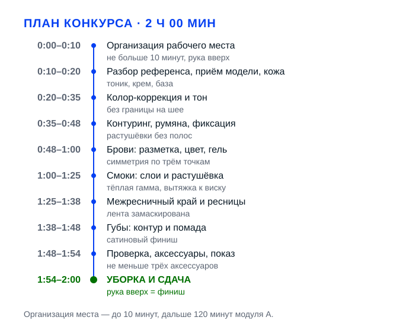
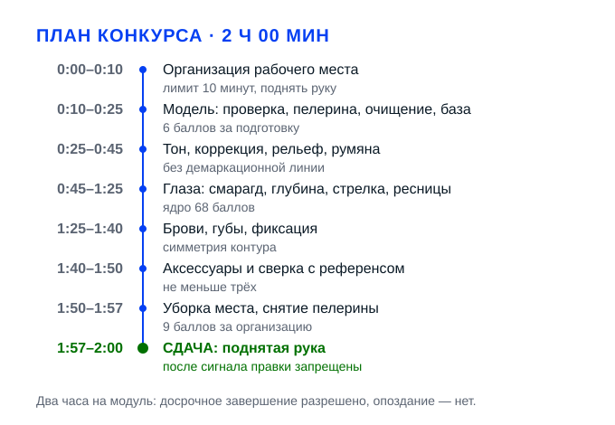
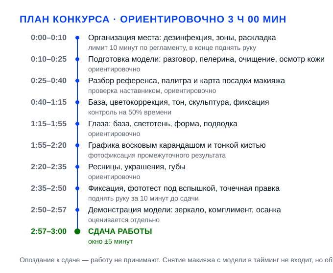

Визаж (Р,О)
Задания ниже — официальные файлы «Абилимпикс» (источник: abilympics-russia.ru), разложенные по категориям. Решения написаны по тексту задания, регламенту и критериям оценки; в них указано, что именно проверяет эксперт.
Школьник
14–16 лет, базовый уровень заданияВыдержка из официального конкурсного задания: страницы, относящиеся к категории «Школьник» (стр. 9–11 источника).
Пошаговое решение
Задание для школьников — один модуль на 100 баллов и 120 минут: вечерний макияж в технике «Натуральный смоки» по референсу, который выдают на площадке. Баллы распределены так, что макияж решает почти всё: 70 из 100 даёт технология, по 9 и 6 — организация работы и техника безопасности, 6 — тайм-менеджмент, 5 — подготовка участника и модели и только 4 — демонстрация. Ограничения жёсткие и проверяются формально: три кисти, одна из них тонкая художественная, спонжи только новые, металлические инструменты в крафт-пакете с целым индикатором, своя косметика и пигменты запрещены. В каждом шаге ниже разобрано, что и как делать, зачем это по критериям, как проверить результат, что обычно ломается и на что смотрит эксперт. Главная ловушка категории — перепутать «красиво» и «по референсу»: эксперт сравнивает работу с картинкой по количеству цветов, их расположению и интенсивности, а не по общему впечатлению.

Задача 1. Пройти допуск, собрать тул-бокс и организовать рабочее местоМодуль А · 15 баллов: охрана труда 6 + организация работы 9
Эти 15 баллов набираются до того, как вы возьмёте первую кисть: шесть даёт техника безопасности, девять — организация работы, и всё это оценивается на входе и в первые десять минут. Требования жёсткие и формальные: чёрный классический комплект без аксессуаров, три разрешённые кисти, продезинфицированные металлические инструменты в крафт-пакете с целым индикатором, чистые спонжи и пуховка. На столе должна быть не «куча косметики», а зоны: палитра, чистые инструменты, грязные инструменты, мусор. Если место не организовано за отведённые десять минут и рука не поднята, аспект считается невыполненным целиком, а не частично.
Действие 1.1. Пройти допуск: внешний вид и содержимое тул-бокса
Шаг 1.1.1
Надеваем чёрный комплект: однотонные классические брюки, длина которых доходит до середины пятки, или юбку не выше колена, рубашку либо блузку, чёрные колготки или носки и закрытую обувь без шнурков с каблуком не выше пяти сантиметров. Волосы убираем от лица и плеч в гладкий пучок или косу и фиксируем так, чтобы при наклоне над моделью ни одна прядь не падала ей на лицо. Часы, браслеты и кольца снимаем заранее, из украшений оставляем максимум одну пару серёг-гвоздиков, пирсинг убираем полностью. Ногти стрижём до свободного края не больше двух миллиметров, покрытие — только светлый пастельный лак.
Внешний вид входит в блок «Охрана труда и техника безопасности» — это 6 баллов, и эксперт фиксирует его при допуске, до старта модуля. Логика не в дисциплине ради дисциплины: длинный ноготь при работе у глаза оставляет царапину на подвижном веке, а болтающаяся цепочка собирает косметику и переносит её на кожу модели. Формально любое отклонение от описанного дресс-кода — уже минус, и оспорить его нельзя: чёрный цвет, закрытая обувь, каблук до пяти сантиметров, никаких аксессуаров.
Проверьте себя у зеркала в полный рост: обувь закрытая и без шнурков, колготки чёрные, рубашка однотонная, украшений на руках нет. Наклонитесь вперёд, как будете наклоняться над моделью: если прядь падает на лицо, пучок собран слабо. Приложите кончик ногтя к тыльной стороне ладони — вы должны чувствовать ноготь, но не видеть белую полосу длинного края.
Прийти в удобных джинсах и кроссовках, рассчитывая «переодеться потом», — время на это уйдёт из модуля, а балл за внешний вид уже потерян. Вторая частая ошибка — оставить кольцо: при работе у скулы оно снимает тон и оставляет светлую дугу, которую потом видно на фотографии. Третья — собранные «как попало» волосы: к середине модуля они выбиваются, и участник начинает поправлять их рукой, которую только что держал в косметике.
Эксперт осматривает участника в первые минуты, стоя в полуметре: смотрит обувь, длину брюк, украшения и ногти, а не общее впечатление. Отдельно он отмечает, поправляет ли участник волосы и лицо по ходу работы, — это нарушение гигиены и снимает баллы уже в процессе.
Шаг 1.1.2
Выкладываем на стол ровно то, что разрешено принести: шпатель, точилку, новые спонжи, чистую пуховку, ленточные искусственные ресницы, клей для ресниц, пинцет, восковой карандаш, три кисти — одну художественную тонкую и две визажные на выбор — и украшение для модели. Кисти проверяем по счёту: три, не четыре и не пять — лишняя читается как попытка провезти запрещённое. Спонжи берём только новые и распаковываем их при эксперте, пуховка должна быть вымытой и сухой. Своя косметика, пигменты, самоклеящиеся стразы, фантазийные ресницы и ресницы на магните остаются за пределами площадки.
Состав тул-бокса — формальное требование конкурсного задания, и проверяется он на допуске, до старта. Запрет на свои кисти и косметику нужен для того, чтобы все участники работали на равных средствах с площадки, а запрет на пигменты и стразы — потому что это другая технология: задание оценивает работу с тенями, а не аквагрим. Найденный на столе запрещённый предмет разбирается главным экспертом, и разговор идёт уже не о баллах за организацию, а о допуске.
Пересчитайте кисти вслух и разложите их веером: тонкая художественная, пушистая для растушёвки, плоская или бочонок для аппликации. Проверьте, что спонжи в закрытой упаковке и вскрыты только что, пуховка не пахнет и не линяет при встряхивании, клей для ресниц не просрочен. Если чего-то не хватает — скажите эксперту сразу, до старта, а не ищите замену в чужом боксе.
Принести четыре кисти «на всякий случай»: лишняя убирается, а вместе с ней уходит впечатление, что участник не читал требования. Вторая ошибка — взять старые спонжи, потемневшие от прошлых тренировок: их видно с расстояния, и это прямое нарушение санитарных норм. Третья — принести ресницы на магните, которые запрещены отдельно, даже если они лежат «про запас» и не используются.
Эксперт пересчитывает кисти и осматривает упаковку спонжей на допуске, до старта модуля. Затем он возвращается к столу в середине работы: важно, чтобы спонж, которым работают по тону, был заменён, а не «дожимал» до конца модуля.
Шаг 1.1.3
Металлические инструменты — пинцет и всё, что требует стерилизации, — достаём из индивидуального крафт-пакета только при эксперте и только после того, как убедились, что индикатор на пакете изменил цвет и соответствует стерильному состоянию. Пакет вскрываем по линии надреза, не разрывая, и кладём инструменты на отдельную чистую салфетку справа, а не в общую кучу с кистями. Вскрытый пакет не выбрасываем сразу: он остаётся на столе до конца модуля как подтверждение того, что инструмент был стерильным.
Крафт-пакет с индикатором — обязательное условие допуска, прописанное в особых указаниях к заданию: все металлические инструменты до начала соревнований должны быть продезинфицированы, а индикатор должен показывать, что они действительно стерильны. Это не формальность: пинцетом вы касаетесь кожи вокруг глаза, и любая грязь на нём — это риск конъюнктивита у модели, а для участника — снятие баллов по охране труда и возможная остановка работы.
Посмотрите на индикатор до вскрытия: цвет должен совпадать с эталоном на самом пакете, а не быть «примерно похожим». Убедитесь, что пакет не вздут и не имеет проколов, края запаяны ровно. После вскрытия проверьте, что инструменты сухие: влажный пинцет в пакете — признак того, что стерилизация шла с нарушением.
Вскрыть пакет заранее, дома или в раздевалке, «чтобы не тратить время»: тогда индикатор уже не доказывает ничего, и эксперт вправе не допустить инструмент к работе. Вторая ошибка — положить вскрытый пинцет прямо на стол без салфетки: он считается грязным с первой секунды, и весь блок гигиены идёт под снятие.
Эксперт смотрит индикатор и целостность пакета при допуске, часто с лупой или просто поднося к лампе. Вскрытие происходит на его глазах — это одна из немногих процедур, которую нельзя «сделать потом».
Действие 1.2. Организовать рабочее место за десять минут
Шаг 1.2.1
Надеваем перчатки и дезинфицируем поверхности: стол, стул модели и корпус кольцевой лампы, особенно кнопку и гибкую стойку, за которую берутся руками. Салфетку складываем вчетверо, протираем сверху вниз и от дальнего края к себе, чтобы не размазывать грязь обратно. Даём поверхности высохнуть на воздухе — средству нужно время, а не полотенце, — и только потом накрываем стол одноразовой пелёнкой или чистой салфеткой. Перчатки снимаем и выбрасываем, а не оставляем на столе «до следующего раза».
Дезинфекция поверхностей в перчатках — прямое требование раздела о санитарно-гигиенических нормах, и оно входит в «Организацию работы» — 9 баллов. Стол и стул — это то, чего касается и модель, и ваши инструменты, поэтому обработка идёт первой, до раскладки косметики: положить чистую кисть на необработанный стол значит начать работу с грязным инструментом. Лампа — самый недооценённый предмет: кнопку и стойку трогают все, а протирают редко.
Проведите по столу чистой белой салфеткой после высыхания: на ней не должно остаться ни пятен, ни разводов, ни ворса. Лампа сухая, кнопка не липнет, пелёнка лежит ровно и не свисает с края, за который вы будете тянуться. Если стол качается, подложите сложенную салфетку под ножку сразу — это дешевле, чем уронить палитру в середине модуля.
Протереть стол и сразу положить на него косметику: средство ещё не высохло, и кисти начинают впитывать дезинфектор. Вторая ошибка — работать без перчаток, «они мешают»: оценивается именно процедура, и эксперт видит руки. Третья — оставить пелёнку свисать на пол: к ней цепляется всё, что падает, и мусор оказывается на одежде модели.
Эксперт проходит по площадке в первые минуты и смотрит, в перчатках ли шла обработка и накрыт ли стол. Ему достаточно одного взгляда на кнопку лампы: затёртая и чистая кнопка — разница, которую видно.
Шаг 1.2.2
Раскладываем стол по зонам, и зоны не меняются до конца модуля. Слева — палитра со шпателем и точилкой, справа — кисти в стакане или на салфетке ворсом вверх, по центру — то, что берётся в руки чаще всего. Косметику с площадки не вываливаем кучей: ставим баночки и палетки в один ряд, крышками к себе, чтобы не искать нужный оттенок вслепую. Отдельно, на сложенную салфетку, кладём использованные спонжи и всё, что уже касалось кожи, — чистые и грязные инструменты не должны лежать рядом. Мусорный пакет крепим на край стола так, чтобы бросать в него, не вставая.
Раскладка по зонам — это критерий «Организация работы» на 9 баллов и одновременно экономия времени: в модуле на 120 минут поиск карандаша стоит минуты, а минуты на конкурсе — это неудобство, а потерянные баллы за тайм-менеджмент. Разделение чистого и грязного — требование санитарных норм: спонж, которым вы правили тон у носа, не должен оказаться на одной салфетке с чистым, иначе вы переносите кожное сало обратно в продукт.
Посмотрите на стол со стороны модели: палитра, кисти и мусор должны читаться как три отдельные группы, а не как одно пятно. Проверьте, что крышки закрыты у того, что не используется прямо сейчас, шпатель лежит на палитре, а не в баночке с тоном. Потянитесь к каждой зоне, не вставая со стула: всё, что нужно в работе, должно быть в пределах вытянутой руки.
Разложить всё в один ряд «по красоте»: в работе вы тянетесь через палитру и опрокидываете её на модель. Вторая ошибка — держать грязные спонжи рядом с чистыми, оправдывая это тем, что «они ещё пригодятся»: с точки зрения санитарии это уже грязный инструмент. Третья — шпатель, лежащий в баночке с кремом: продукт забирается шпателем на палитру, а не хранится в нём.
Эксперт смотрит на стол в начале модуля и потом ещё два-три раза по ходу: важна не стартовая картинка, а сохраняется ли порядок к середине работы. Отдельно он отмечает, куда участник кладёт использованный спонж.
Шаг 1.2.3
Ставим кольцевую лампу так, чтобы свет падал на лицо модели спереди и чуть сверху, а не сбоку: боковой свет даёт тени в складках, и вы начинаете «исправлять» то, чего на самом деле нет. Сажаем модель так, чтобы её лицо было на уровне ваших глаз или чуть выше, спина опиралась на спинку, а ноги стояли на полу. Просим модель снять очки, если они есть, убрать телефон и не разговаривать во время работы у глаз. Когда всё готово — поднимаем руку и ждём, пока эксперт зафиксирует готовность.
Поднятая рука по окончании организации — отдельный аспект: если рука не поднята, организация считается невыполненной, даже когда стол идеален, и это стоит баллов из тех девяти за организацию работы. Свет и посадка влияют на всё дальнейшее: при боковом свете вы наносите тон «по теням» и получаете перекошенную коррекцию, а при низкой посадке модели рука устаёт к середине модуля, и растушёвка становится неровной именно там, где нужна точность.
Проверьте свет на своей ладони: она должна быть освещена ровно, без резкой границы тени. Глаза модели на одной линии с вашими, между вами и ею — не больше полуметра. Рука поднята и видна эксперту, а не спрятана за лампой. На весь этап уходит не больше десяти минут — проверьте время по часам, а не по ощущениям.
Организовывать место двадцать минут, «чтобы всё было идеально»: тайминг на организацию не больше десяти минут, и дальше он съедает модуль. Вторая ошибка — не поднять руку, считая, что и так видно. Третья — поставить лампу сбоку от модели, потому что так удобнее вам: половина лица в тени, и симметрию вы физически не увидите.
Эксперт фиксирует время и поднятую руку, а заодно смотрит на положение лампы: сбоку стоящая лампа — признак того, что участник не думал о том, как будет проверять симметрию.
Действие 1.3. Держать гигиену весь модуль, а не только в начале
Шаг 1.3.1
Обрабатываем руки антисептиком в начале работы и дальше каждый раз, когда коснулись чего-то, кроме инструмента: своего лица, волос, одежды, телефона, края стола, сумки. Наливаем на ладонь порцию размером с горошину, растираем до запястий и между пальцами и ждём, пока высохнет, — вытирать салфеткой нельзя, смысл в том, чтобы средство осталось на коже. Если работаете в перчатках, обрабатываем и перчатки, а меняем их после каждого блока: подготовка кожи, тон, глаза, губы.
Требование обрабатывать руки в начале работы и после каждого касания предметов оборудования и вещей клиента записано в разделе о санитарно-гигиенических нормах и проверяется на протяжении всего модуля. Это самая дешёвая часть баллов и самая частая потеря: участник один раз обработал руки на входе и дальше поправляет волосы, не замечая этого. Эксперт фиксирует не намерение, а действие, поэтому антисептик должен стоять на столе в зоне доступа, а не в сумке.
Проверьте себя по счёту: за модуль обработка идёт минимум шесть-семь раз — старт, после подготовки кожи, после тона, после глаз, после губ, перед уборкой. Флакон стоит открытым и в пределах вытянутой руки, руки не липнут и не блестят. Если вы не помните, когда обрабатывали руки последний раз, значит, пора.
Поправить волосы и вернуться к лицу модели: именно так переносится грязь с волос на щёку, и это видно по мелким высыпаниям, которые появляются к концу работы. Вторая ошибка — держать антисептик в сумке и «достать потом». Третья — налить средство и сразу вытереть руки о салфетку: обработки не было, был только запах.
Эксперт наблюдает за руками весь модуль, и это одна из немногих позиций, где нарушение видно без разбора результата. Ему достаточно увидеть один переход «волосы — лицо модели», чтобы снять балл.
Шаг 1.3.2
Работаем так, чтобы рука не касалась кожи модели напрямую: под кисть, которой опираетесь о лицо, подкладываем пуховку или сухую салфетку, а саму кисть держим за середину ручки, ближе к ворсу, чтобы контролировать нажим. Продукт набираем не пальцем и не из баночки, а шпателем на палитру, и уже оттуда — кистью или спонжем. Карандаши для глаз и губ точим перед каждым применением, тушь наносим одноразовой щёточкой, на кисти не дуем. Сухие текстуры — тени, пудру, румяна — обрабатываем антисептиком до и после работы, а палитру и точилку вытираем сразу, как только на них что-то попало.
Весь этот список — прямые требования раздела о санитарно-гигиенических нормах, и каждое из них закрывает конкретный риск: палец в баночке переносит бактерии в продукт, не заточенный карандаш тянет кожу века, дыхание на кисть оставляет на ворсе капли слюны. Кроме того, работа через палитру — это ещё и техника: на палитре видно, сколько продукта вы взяли, и проще держать тонкий слой, за который дают баллы по тонированию.
Проверьте по ходу: на палитре есть продукт, а не «чистое место», карандаш заточен остро, использованная щёточка от туши лежит отдельно, а не возвращена в тюбик. На коже модели не должно оставаться следов пальцев — посмотрите на скулу под углом к лампе: отпечатки видны как более тёмные пятна.
Наносить консилер пальцем «так быстрее»: это самая частая причина снятия баллов по гигиене, потому что эксперт видит именно палец на коже. Вторая ошибка — дуть на кисть, чтобы стряхнуть лишнее: вместо этого постучите ручкой по тыльной стороне ладони. Третья — точить карандаш «один раз на все губы»: по правилам заточка идёт перед каждым применением.
Эксперт смотрит на палитру и на то, чем участник набирает продукт: баночка, в которой лежит кисть, — почти гарантированное снятие баллов. Он же проверяет заточку карандаша в момент работы, а не после.
Задача 2. Разобрать референс, принять модель и подготовить кожуМодуль А · подготовка участника и модели · 5 баллов
На всю эту задачу в критериях стоит всего 5 баллов, но она определяет судьбу остальных семидесяти: тон, который лёг на неподготовленную кожу, скатывается к сороковой минуте, а смоки, построенные по чужой схеме, не совпадут с референсом ни по форме, ни по интенсивности. Сначала читаем референс как технологическую карту: считаем цвета, отмечаем зоны и границы растушёвки. Потом принимаем модель по формальным требованиям — одежда, причёска, отсутствие перманентного макияжа и нарощенных ресниц. И только после этого трогаем кожу: очищение, увлажнение, база, и на всё это уходит не больше десяти минут из ста двадцати.
Действие 2.1. Прочитать референс как технологическую карту
Шаг 2.1.1
Кладём референс рядом с лампой и разбираем его по слоям, а не «в целом». Считаем цвета: на этом образе их четыре — светлый шампань на подвижном веке, тёплый коричнево-терракотовый в складке, тёмный шоколадный во внешнем уголке и по ресничному краю, плюс оттенок ниже внешнего угла глаза. Отмечаем границы: где заканчивается светлое, докуда доходит тёмное, насколько вытянута линия к виску и на какую высоту поднята складка. Отдельно смотрим интенсивность — тёмный на референсе плотный, но не чёрный, — и всё остальное: форму бровей, оттенок губ, характер тона, зону румян.
Критерий «макияж соответствует референсу» — самый дорогой в технологии макияжа на 70 баллов, и проверяется он сравнением вашей работы с картинкой, а не с вашим представлением о красивом. Разбор по слоям нужен потому, что референс — это не «смоки вообще», а конкретная схема: тёплая гамма, вытяжка к виску, дымка по нижнему веку. Участник, который запомнил «коричневые тени и красные губы», получит работу «в тему», но не по заданию, и потеряет значительную часть этих баллов.
После разбора вы можете, не подглядывая, назвать четыре оттенка и их порядок от светлого к тёмному, зону каждого и направление растушёвки. Проверьте себя: покажите на референсе точку, где тёмный цвет становится прозрачным, — если не можете, схема понята приблизительно. Запишите последовательность на уголке салфетки, чтобы не пересматривать картинку с испачканными руками.
Смотреть на референс один раз и начать работать: к сороковой минуте в памяти остаётся общее впечатление, и вы «усиливаете» тени там, где на образе их почти нет. Вторая ошибка — копировать оттенки по названию, не глядя на подтон: тёплый коричневый на холодной коже модели уйдёт в рыжину. Третья — не заметить, что нижнее веко на референсе тоже растушёвано, и оставить его чистым.
Эксперт сравнивает работу с референсом по количеству цветов, их расположению и интенсивности, и делает это на расстоянии вытянутой руки. Расхождение в форме растушёвки видно сразу: на референсе она вытянута к виску, а не поднята вверх.
Шаг 2.1.2
Подгоняем схему под лицо модели, не меняя ни гаммы, ни идеи. Смотрим три вещи: посадку глаз, форму века и расстояние от ресничного края до брови. При близко посаженных глазах светлое пятно во внутреннем уголке оставляем узким, а тёмное начинаем не раньше середины подвижного века; при нависшем веке складку поднимаем выше и растушёвку ведём вверх-в сторону, иначе тень «съест» глаз. Если глаза широко посажены, вытяжку к виску удлиняем на пару миллиметров, но не больше: на референсе она уже задана. Дальше отмечаем вслух, сколько времени уйдёт на каждый блок, и сверяем с часами.
Требование «макияж адаптирован к внешности модели» и «улучшает внешность» стоит в критериях отдельно от соответствия референсу: эксперту важно увидеть, что участник умеет перенести схему на другое лицо, а не нарисовать её поверх. При этом подмена цветов «под модель» — нарушение: цветовое решение должно соответствовать референсу. Адаптируется геометрия — ширина, высота, длина, — а не палитра.
Проверьте план на живом лице: закройте один глаз модели ладонью и представьте половину схемы — она должна укладываться между ресничным краем и бровью, не заходя на височную впадину. Убедитесь, что вы видите оба глаза при ровном свете и что между ними помещается светлый акцент. Если сомневаетесь, сделайте разметку сухой кистью без продукта и посмотрите на неё с расстояния метра.
Применить схему один в один на узкое лицо с нависшим веком: тень ложится на складку, и глаз кажется меньше, чем был. Вторая ошибка — «исправить» референс: заменить тёплый коричневый на серый, потому что он «лучше подходит голубым глазам». Третья — не заметить асимметрию века и построить схему зеркально по слабой стороне.
Эксперт смотрит на лицо целиком: если макияж «спорит» с чертами, это видно даже без сравнения с референсом. Отдельно он проверяет, не ушла ли тень на височную впадину и не поднялась ли она выше линии брови.
Действие 2.2. Принять модель и проверить её соответствие заданию
Шаг 2.2.1
Проверяем модель по списку требований, и делаем это при эксперте, до начала макияжа. Одежда: белая рубашка или блузка классического стиля, рукав не короче трёх четвертей, зона шеи открыта, высокое горло запрещено; классические чёрные брюки, прикрывающие щиколотку, или юбка не выше колен; чёрные колготки или носки, классическая чёрная обувь. Причёска гладкая, волосы убраны от лица и плеч в пучок или косу. Смотрим кожу: без дерматологических высыпаний в зоне макияжа, без перманентного макияжа бровей, глаз и губ, без нарощенных ресниц, без татуировок и пирсинга там, где будет работа.
Требования к модели прописаны в задании отдельным разделом, и их проверяет не только участник: если модель пришла в водолазке или с нарощенными ресницами, работу могут не оценить по критерию соответствия. Нарощенные ресницы — прямая помеха: поверх них невозможно наклеить ленточные так, чтобы лента была замаскирована. Перманентный макияж губ или бровей лишает смысла целые блоки технологии, за которые дают десятки баллов.
Пройдите по списку вслух, пункт за пунктом, и покажите эксперту то, что вызывает сомнение. Проверьте рукав на поднятой руке: при движении он не должен открывать плечо. Волосы убраны так, что при наклоне головы ни одна прядь не касается щеки. Если модель пришла с украшением, которое не снимается, вы обязаны сообщить об этом эксперту до начала работы, а не в процессе.
Промолчать про высокое горло или длинный рукав, надеясь, что «не заметят»: замечают именно на демонстрации, когда модель встаёт, и это уже не исправить. Вторая ошибка — начать работу с моделью, у которой раздражение на щеке: тон ляжет пятнами, а спорить о причине будет поздно. Третья — снять с модели чужие серьги без разрешения и потерять их.
Эксперт проверяет модель на допуске, вместе с участником: одежду, причёску, отсутствие перманентного макияжа. Спорные случаи решает главный эксперт, и обратиться к нему нужно до старта, а не после.
Шаг 2.2.2
Надеваем на модель пелерину так, чтобы она закрывала плечи и грудь и не съезжала при наклоне головы, — край подворачиваем или фиксируем зажимом у шеи. Волосы полностью убираем под шапочку или повязку: если в причёске есть украшение, шапочку можно не надевать, но только с разрешения экспертов, и тогда волосы фиксируем дополнительно. Проверяем, что на лице не осталось серёг, которые мешают работе у уха, и что модель сняла очки. Рядом кладём ватные диски, сухие салфетки и влажные — для век, губ и правок.
Пелерина и шапочка — требование подготовки модели, без них косметика попадает на одежду, а волосы — на лицо в самый неподходящий момент, когда вы растушёвываете тень. Отсутствие шапочки читается и как нарушение гигиены: волос содержит пыль и кожное сало, и работать по коже, к которой он прикасается, нельзя. Зажим у шеи — мелочь, которая экономит минуту на каждой правке: съехавшая пелерина сдвигает модель, и вы теряете линию.
Дёрните пелерину за край: она не должна сползать с плеча. Наклоните голову модели вперёд и проверьте, что волосы не выбиваются на лоб и виски. Убедитесь, что уши открыты и доступны, а серьги, если они разрешены, не мешают кисти. Салфетки лежат в пределах вытянутой руки, а не в сумке.
Накинуть пелерину «на одно плечо» и работать у второго: косметика остаётся на блузке, и на демонстрации это видно. Вторая ошибка — оставить выбившуюся чёлку и постоянно поправлять её рукой. Третья — работать поверх длинных серёг: кисть цепляется, линия у уха получается рваной.
Эксперт смотрит на модель перед началом: пелерина, шапочка, открытая шея, отсутствие мешающих украшений. Это часть 5 баллов за подготовку, и она видна за секунду.
Действие 2.3. Подготовить кожу к макияжу
Шаг 2.3.1
Снимаем дневной макияж, даже если его почти нет: ватный диск с очищающим средством проходим по глазам от внутреннего угла к внешнему, отдельным диском — по лицу и шее, и ещё одним — по линии роста волос, где остаётся больше всего. Затем тоник на ватном диске, движения снизу вверх и по массажным линиям, без трения. Одновременно диагностируем: смотрим тип кожи в Т-зоне и на щеках, цвет подтона на линии челюсти и шее, отдельно отмечаем зоны, которые придётся корректировать, — синеву под глазами, покраснения у крыльев носа, пигментные пятна, сосудистую сетку.
Подготовка кожи — прямое требование задания: протереть лицо тоником, нанести базу или крем. Без очищения тон ложится на кожное сало и через час скатывается в складках, а «демаркационная линия» и «неестественное тонирование» — это отдельные критерии, за которые снимают баллы. Диагностика в этот момент нужна потому, что решение по коррекции принимается здесь: цвет корректора зависит от подтона кожи, а не от цвета круга под глазом.
Кожа очищена, если ватный диск после второго прохода остаётся чистым. Посмотрите на лицо при лампе под углом: видны все неровности, которые потом придётся маскировать. Проверьте линию челюсти — там цвет кожи обычно темнее, и именно по ней вы будете подбирать тон. Убедитесь, что модель не осталась с мокрым лицом: тоник должен впитаться или быть промокнут салфеткой.
Протереть лицо «на скорую руку» одним диском: остатки туши потом осыпаются под глаза и портят только что нанесённый консилер. Вторая ошибка — тереть кожу, особенно веки: после трения появляется краснота, и вы начинаете корректировать её зелёным корректором, которого нет в референсе. Третья — не снять макияж с шеи, из-за чего потом видна граница по подбородку.
Эксперт смотрит, чем именно снимают макияж и не осталось ли следов на ватном диске, а также чистоту кожи до тона. Пятна туши на скуле, появившиеся после начала тонирования, читаются как небрежность.
Шаг 2.3.2
Наносим увлажняющий крем или базу под макияж по типу кожи: на сухие щёки — плотнее, на жирную Т-зону — тонким слоем, вокруг глаз — остатками продукта с безымянного пальца, лёгкими постукиваниями, без растягивания. Ждём три-пять минут, пока впитается, и промокаем излишки сухой салфеткой: тон на непромокнутый крем «плывёт» и блестит. Если кожа обезвожена и есть шелушения, сначала наносим увлажняющую маску-праймер локально на сухие зоны и даём ей схватиться, а не накладываем толстый слой крема на всё лицо.
Увлажнение — это то, что удерживает тон ровным все сто двадцать минут: на сухой коже он ложится пятнами и подчёркивает шелушение, на жирной без подготовки — скатывается. Критерий «тонирование выглядит естественно» и «скорректированы все недостатки кожи» оцениваются по результату, но причина неудачи почти всегда здесь. Толстый слой крема вредит не меньше сухости: тональное средство скользит по нему и не схватывается.
Проверьте тыльной стороной ладони: кожа должна быть мягкой, но не липкой. Приложите салфетку к щеке — она не должна приклеиваться. Посмотрите на щёки под углом к лампе: шелушения не должны выделяться светлыми чешуйками. Крем впитался за три-пять минут, а не остался блестящей плёнкой.
Нанести крем и сразу начать тон: продукт ещё не впитался, и тональное средство ложится полосами, которые потом видно на фото. Вторая ошибка — наложить много крема на всё лицо и получить блеск, который вы будете пытаться убрать пудрой, — а пудра на креме скатывается. Третья — забыть про зону вокруг глаз и шею.
Эксперт проверяет кожу до тона: если крем блестит, дальше он смотрит на тонирование уже настороженно. Отдельно оценивается, промокнуты ли излишки, — по этому признаку видно, работал участник с продуктом осознанно или «как получилось».
Шаг 2.3.3
Наносим праймер по зонам: на Т-зону и крылья носа — матирующий или сужающий поры, на щёки и скулы — выравнивающий, на веки — базу под тени, тонким слоем и только постукивающими движениями подушечкой пальца в перчатке или спонжем. На губы кладём бальзам и оставляем его работать, пока делаете тон и глаза: к моменту помады губы будут мягкими, а излишек бальзама мы промокнём. Если под рукой только база под макияж, разделяем её на два слоя: тонкий на всё лицо и чуть плотнее на зоны с расширенными порами.
Праймер — это не «дополнительный слой для красоты», а то, что удерживает тон в порах и не даёт ему проваливаться к середине модуля. На веках база обязательна: без неё тени скатываются в складку за первый час, и растушёвка, за которую дают баллы, расплывается. Бальзам на губы, нанесённый заранее, снимает необходимость скрабировать кожу губ непосредственно перед помадой, когда контур уже намечен.
Проверьте веки на ощупь: они должны быть сухими и слегка «бархатными», без скольжения. На Т-зоне не должно быть блеска. Поры на крыльях носа визуально сглажены, если смотреть под углом к свету. Губы мягкие, бальзам не лежит плёнкой — если блестит, промокните салфеткой перед контуром.
Нанести праймер на всё лицо плотным слоем: под ним кожа не дышит, а тон скользит и скатывается быстрее, чем без праймера. Вторая ошибка — пропустить веки, потому что «тени и так держатся». Третья — нанести бальзам прямо перед помадой: контур поплывёт, а помада не ляжет плотным слоем.
Эксперт замечает базу под тени по тому, как лежит первый оттенок: если тень сразу садится плотно и не «прыгает», подготовка была. Скатавшиеся тени к концу модуля — почти всегда отсутствие базы на веках.
Шаг 2.3.4
Проверяем готовность кожи перед тоном, и это отдельная минута, которая экономит десять. Смотрим лицо при двух источниках света: в кольцевой лампе по центру и в дневном или боковом — так видно и переувлажнение, и шелушения, и ворс от салфетки. Убираем ворсинки липкой стороной скотча или сухой кистью, промокаем блеск, поправляем шапочку, если она сдвинула волосы. Затем просим модель закрыть глаза на несколько секунд: если она щурится от света, лампа стоит слишком низко и её нужно поднять.
Проверка при двух источниках света — профессиональная привычка, которая прямо влияет на оценку: при одном только тёплом свете лампы незаметны и синева, и серый подтон, а эксперт смотрит работу в обычном освещении. Минута на ворс и блеск сохраняет баллы за «естественное тонирование»: ворсинка под тоном превращается в бугорок, который потом невозможно замаскировать, не сняв слой.
На коже нет ворсинок и блеска, шелушения не выделяются, глаза модели не слезятся от света. Проверьте, что шапочка не давит на лоб и не оставляет красную полосу, которая потом будет видна как тень. Кожа прохладная и матовая на ощупь — можно начинать тон.
Начать тон, не убрав ворс: он проявится через два слоя, и вы потратите время на попытки его «затереть». Вторая ошибка — оставить сползшую шапочку, которая натирает лоб. Третья — не заметить, что модель щурится: к концу подготовки у неё слезятся глаза, и работать с веками невозможно.
Эксперт подходит к столу в этот момент чаще всего: он смотрит, как участник проверяет результат подготовки, и делает пометку о том, видит ли он кожу в разных условиях.
Задача 3. Скорректировать недостатки кожи, выровнять тон и вылепить рельефМодуль А · технология макияжа: тон и коррекция · 26 баллов
Тон — это фундамент: если он лёг пятнами, никакие смоки не спасут работу, потому что эксперт видит лицо целиком. Здесь разбираются критерии, которые в задании расписаны отдельными шкалами от нуля до трёх: корректоры относительно рельефа, чистота растушёвок в моделировании, естественность тонирования, положение и интенсивность румян. Порядок жёсткий: сначала точечная цветовая коррекция, потом тон, потом рельеф. Если перепутать — корректор окажется под слоем тона и проступит серым, а скульптор ляжет на пятна.
Действие 3.1. Закрыть цветовые недостатки корректорами
Шаг 3.1.1
Проходим лицо модели по зонам и для каждой называем цвет корректора, а не «возьму что-нибудь бежевое». Сине-фиолетовые круги под глазами закрываем персиковым или лососевым, при глубокой синеве — каплей оранжевого строго в самой тёмной точке. Покраснения у крыльев носа и на щеках — оливково-зелёным, но только на пятно, а не на всю щёку. Пигментные пятна и веснушки, которые нужно приглушить, — персиковым или абрикосовым. Желтоватый, «уставший» подтон на висках и вокруг рта снимаем лавандовым или розовым, но это самый опасный цвет: его берут на кончике кисти.
Цветовая коррекция — первый пункт технологии, и в задании он расписан шкалой 0–3: ноль ставится, когда интенсивность минимальная или работа не выполнена, три — когда коррекция сделана во всех зонах, равномерно и симметрично. Логика цвета простая: корректор нейтрализует противоположный оттенок, поэтому зелёный гасит красноту, а персиковый — синеву. Если цвет выбран неверно, пятно не исчезает, а становится грязным, и замаскировать его тоном уже невозможно.
Проверьте решения на себе: приложите к кругу под глазом модели полоску нужного корректора и посмотрите, стала ли зона нейтральной. Если после корректора пятно кажется серым — цвет слишком холодный, если рыжим — слишком тёплый. Запишите, какой корректор куда идёт, чтобы наносить без пауз: у вас три кисти, и одна из них уже занята.
Наносить зелёный корректор на всё лицо «для свежести»: под тоном он даёт серо-зелёный оттенок, который невозможно перекрыть. Вторая ошибка — брать корректор на два тона светлее кожи и получать светлые пятна вместо ровного тона. Третья — использовать розовый на смуглой коже: он выбеливает и спорит с референсом, где гамма тёплая.
Эксперт смотрит на лицо до тона и оценивает именно попадание в зоны: если под глазами осталась синева, он отмечает это сразу, потому что тон её только подчеркнёт. Ассиметричное нанесение корректора — отдельный минус по шкале 0–3.
Шаг 3.1.2
Наносим корректор точечно, тонким слоем, постукивающими движениями: тонкой кистью или спонжем, почти без нажима, строго в границах пятна и на миллиметр за него. На веках работаем от внутреннего угла к внешнему, не растягивая кожу: она тонкая, и от растяжения пятно возвращается в виде мелких складок. Слой должен быть полупрозрачным: если через него не видно кожи, вы положили лишнее, и продукт нужно снять салфеткой, а не «растушевать побольше». Каждое следующее нанесение — только после того, как предыдущее схватилось, иначе корректор скатывается в катышки.
Тонкий слой — это не осторожность, а технология: корректор работает за счёт цвета, а не плотности, и в толстом слое он даёт рельеф и подчёркивает морщинки. Постукивание вместо растирания сохраняет продукт на месте: при трении он уходит с пятна на соседнюю кожу, и вместо маскировки получается размытое светлое облако. Критерий «скорректированы все недостатки кожи» оценивается по результату, но проверяется именно эта техника — на границе пятна.
Посмотрите на зону в лампе под углом: граница корректора не должна читаться как контур. Проведите по коже тыльной стороной кисти — она должна быть сухой, без липкости. Если корректор собрался в катышки, снимаем его мицеллярной водой на ватной палочке и наносим заново, а не наслаиваем сверху.
Растирать корректор пальцем или спонжем с нажимом: он уходит в кожу и не работает, а пятно остаётся. Вторая ошибка — наложить три слоя, чтобы «наверняка»: под тоном это даёт серые и рыжие разводы. Третья — нанести корректор на веки и забыть про подвижное веко при растушёвке, где он поплывёт вместе с тенями.
Эксперт смотрит на границу корректора вблизи: размытый край считается ошибкой, потому что потом он проявляется светлым ореолом вокруг пятна. Отдельно проверяется симметрия: одинаковые зоны должны быть закрыты одинаково.
Шаг 3.1.3
Поверх цветового корректора кладём консилер — на полтона-тон светлее кожи, не больше: задача не «выбелить» зону, а уравнять её с остальным лицом. Под глазом распределяем не по кругу, а по треугольнику от внутреннего угла к скуле, и промокаем спонжем до состояния «кожа, но ровнее». Отдельно проходим красные точки от высыпаний и крылья носа, где кожа тоньше всего. Затем отходим на полтора метра и смотрим, не осталось ли зоны, которая светлее остального лица.
Консилер закрывает то, что корректор только нейтрализовал, и в паре они дают ровный цвет без плотного слоя тона. Треугольник вместо круга нужен потому, что синева уходит вниз по скуле: круг оставляет светлое кольцо, а треугольник растворяется в щеке. Пересвет на полтона — частая ошибка школьников, и она видна именно при взгляде с расстояния, когда лицо читается как «в маске».
Подойдите к модели на полтора метра и посмотрите прямо: зона под глазами не должна отличаться по светлоте от щеки. Проверьте носогубные складки — если консилер собрался в линии, промокните и нанесите тоньше. Убедитесь, что ресницы не запачканы консилером: это будет видно на демонстрации.
Нанести консилер на два тона светлее: получаются «совиные глаза», и эксперт снимает баллы за неестественное тонирование. Вторая ошибка — растянуть консилер по всей скуле, где он не нужен, и подчеркнуть текстуру. Третья — не промокнуть излишки, из-за чего через час в складке века собирается полоса.
Эксперт оценивает зону под глазами одной из первых: по ней видно, умеет ли участник работать с тонкими текстурами. Пересвет и нерастушёванная граница — минус по критерию естественности.
Действие 3.2. Выровнять тон без демаркационной линии
Шаг 3.2.1
Подбираем оттенок на линии челюсти, а не на тыльной стороне руки: наносим две-три полоски рядом, от скулы к шее, и смотрим при дневном свете, какой оттенок исчезает. Правильный тон не видно — он совпадает и со щекой, и с шеей, поэтому границы не возникает. Если кожа на лице и шее отличается, ориентируемся на шею: лицо можно немного выровнять, шею — нет. Плотность выбираем среднюю: для школьного задания плотный тон не нужен, достаточно перекрытия, которое держит корректоры.
Критерий «тонирование выглядит естественно» и требование об отсутствии демаркационной линии в задании стоят отдельно, и оба решаются на этом шаге. Подбор на руке — классическая ошибка: кожа руки темнее и теплее лица, и выбранный оттенок даёт границу по челюсти. Ориентир на шею нужен потому, что именно там шейный вырез открыт по требованиям к одежде модели и граница будет видна всем.
Полоски на челюсти: одна совпала полностью и «исчезла» — это ваш оттенок. Вторая кажется серой на лице, третья — жёлтой. Проверьте при двух источниках света: в тёплой лампе тон всегда кажется темнее, чем есть. Убедитесь, что оттенок не слишком плотный: нанесите каплю на тыльную сторону ладони и растушуйте — текстура должна быть видна, а не лежать коркой.
Выбрать оттенок «на глаз» по баночке: цвет в упаковке всегда отличается от цвета на коже. Вторая ошибка — взять тон светлее на ступень «чтобы лицо было свежее»: на шее появляется граница, и это прямая потеря баллов. Третья — не учесть, что к вечеру кожа краснеет от работы, и подобрать тон по разгорячённому лицу.
Эксперт смотрит на линию челюсти и границу с шеей — это самый быстрый способ оценить подбор. Если он видит полосу под подбородком, дальше он смотрит всю работу уже с поправкой на это.
Шаг 3.2.2
Наносим тон от центра лица к периферии: лоб, нос, щёки, подбородок, затем остатки продукта на периферию, где слой должен быть тоньше. Работаем новым спонжем или плоской кистью, движениями «вбивающими», а не размазывающими: на щеке спонж идёт по направлению роста пушковых волос, сверху вниз, вокруг носа — от спинки к крылу. Первый слой — тонкий, на всё лицо; второй — только в зонах, где просвечивает краснота. Не забываем веки, зону под носом, уголки губ, уши и линию роста волос.
Тон от центра к периферии — потому что центр лица требует перекрытия, а края должны растворяться в шее и волосах. «Вбивающие» движения удерживают продукт в порах и не поднимают пушок, который потом виден как светлый ворс. Второй слой только в зонах — это и есть естественность: лицо сохраняет объём, а не превращается в плоскую маску, за которую снижают оценку по тонированию.
Проверьте лицо при боковом свете: не должно быть полос и пятен, текстура кожи должна читаться. Нажмите пальцем в перчатке на щёку — тон не должен оставаться на пальце. Посмотрите на зону у носа и на веки: там чаще всего остаются просветы, которые видны как розовые участки.
Размазывать тон по лицу, как крем: продукт ложится неровно и собирается в морщинках. Вторая ошибка — нанести плотный слой сразу, чтобы «перекрыть всё»: лицо теряет объём, а любая складка становится заметнее. Третья — забыть про веки и уши, а потом обнаружить это на демонстрации, когда модель повернётся в профиль.
Эксперт смотрит на лицо под углом к свету: пятна и полосы видны сразу. Он же проверяет, остался ли тон на пальцах участника, — чистые руки говорят о технике больше, чем рассказ.
Шаг 3.2.3
Убираем границу: проходим влажным спонжем или чистой кистью по линии челюсти, спускаясь на шею на два-три сантиметра, и отдельно — по ушам и линии роста волос. Дальше наносим тон на шею и, если открыто, на зону декольте, но тоньше, чем на лицо: шея не должна выглядеть накрашенной. Проверяем границу в профиль — именно там она видна лучше всего, потому что свет падает сбоку. Если тон на шею не предусмотрен, границу растушёвываем в ноль, а не оставляем «переходом».
Демаркационная линия — отдельный критерий, и её наличие сразу снижает оценку по тонированию, даже если лицо идеально. Технически граница возникает из-за разницы оттенков лица и шеи и из-за того, что тон наносился только на лицо. Растушёвка вниз, а не «в бок», нужна потому, что шея — единственная зона, где граница видна при любом повороте головы.
Посмотрите на модель в профиль и в три четверти: не видно полосы под челюстью и на границе с ушами. Проведите влажной салфеткой по шее — на ней не должно оставаться тона плотным слоем. Убедитесь, что волосы у линии роста не испачканы, а если испачканы — протрите влажной палочкой.
Оставить границу «на подбородке» и считать, что её не видно: в профиль она читается как тёмная полоса. Вторая ошибка — нанести тон на шею плотным слоем, и тогда он пачкает воротник и выглядит как маска. Третья — не поправить тон у линии роста волос, где остаётся светлая кайма.
Эксперт поворачивает модель в профиль именно для проверки границы, и делает это до того, как смотрит глаза. Полоса под челюстью — один из самых частых минусов на этой категории.
Действие 3.3. Вылепить рельеф: контуринг, румяна, фиксация
Шаг 3.3.1
Скульптор наносим по рельефу, а не по шаблону: начинаем от середины уха и ведём вниз к уголку рта, но не доходим до него на два сантиметра — это скуловая впадина. Дальше висок, линия челюсти от угла к подбородку и на пару сантиметров под линию подбородка, чтобы лицо не «обрывалось». Отдельно — спинка носа узкой полосой по бокам, если нужно сузить, и зона под нижней губой для объёма. Всё наносим кистью с коротким ворсом или влажным спонжем, тонким слоем, тёплым оттенком на два тона темнее тона.
Критерий «корректоры нанесены правильно относительно рельефа лица» расписан шкалой 0–3, и высший балл дают за работу во всех зонах, равномерную и симметричную. Рельеф, а не шаблон — потому что у каждого лица своя глубина впадины: слишком низко нанесённый скульптор «опускает» щёку, слишком высоко — превращается в грязное пятно на скуле. Тёплый оттенок нужен, чтобы контуринг не спорил с референсом, где гамма коричнево-терракотовая.
Отойдите на метр и прищурьтесь: тень должна читаться как естественная впадина, а не как полоса. Проверьте симметрию, закрыв по очереди половины лица: расстояние от уха до уголка рта и угол наклона должны совпадать. Убедитесь, что скульптор не заходит на зону, куда пойдут румяна, — иначе цвета смешаются в грязь.
Провести тёмную полосу от уха до уголка рта буквально: получается «шрам», и это самая заметная ошибка контуринга. Вторая — нанести скульптор слишком низко, на щёку: лицо выглядит уставшим. Третья — использовать холодный серый оттенок, который на тёплой коже даёт грязный цвет.
Эксперт смотрит на лицо в три четверти: именно в этом ракурсе видно, лежит ли тень по объёму. Полоса вместо впадины — ноль или один балл по этой шкале из трёх.
Шаг 3.3.2
Растушёвываем каждый участок отдельно чистой кистью: скуловую впадину — вверх и к виску, линию челюсти — вниз, к шее, висок — к линии роста волос. Кисть держим почти плашмя, движения лёгкие, «по воздуху», без нажима: задача — растворить границу, а не стереть продукт. Если после растушёвки тень пропала, добавляем по капле и снова растушёвываем, а не накладываем заново толстым слоем. Чистую кисть для растушёвки не макаем в продукт до конца действия — она должна остаться сухой.
Чистота растушёвок в моделировании — отдельная шкала 0–3, где ноль ставят за пятна и полоски, а три — за идеальные переходы с учётом перспективы цвета. Растушёвка вверх и к виску нужна потому, что лицо «подтягивается» по направлению движения, а вниз — потому что шея должна остаться без тени. Сухая чистая кисть работает как ластик: она разбирает границу, не добавляя продукта, и именно этим отличается профессиональная растушёвка.
Проведите по коже белой салфеткой: на ней не должно остаться заметного коричневого следа, только лёгкий оттенок. Посмотрите на переход в лампе под острым углом — границы не должно быть видно вообще, только изменение тона. Проверьте, что растушёвка не съехала на румяна и не размазала корректор под глазом.
Растушёвывать грязной кистью, в которой уже есть продукт: граница размазывается, но не исчезает, и на щеке появляется широкое коричневое облако. Вторая ошибка — тереть кожу, сдвигая тон: под скульптором появляется проплешина. Третья — растушёвывать все зоны одной кистью, перенося тёмный продукт на светлые участки.
Эксперт смотрит на границы вблизи и на общее впечатление с расстояния: если прищуренный взгляд видит полосы, работа не на три балла. Он же проверяет, не осталось ли на щеке следа от кисти.
Шаг 3.3.3
Кладём румяна на яблочки и ведём к виску, чуть выше скуловой впадины, чтобы они не спорили со скульптором: на референсе это тёплый персиково-терракотовый оттенок средней интенсивности. Наносим пушистой кистью круговыми движениями, стряхивая излишек о тыльную сторону ладони, и растушёвываем так, чтобы цвет «входил» в тон, а не лежал пятном. Затем хайлайтер — на спинку носа, верх скулы, галочку над верхней губой и под бровь, — и фиксация: пудра тонким слоем в Т-зону и под глаза, пуховкой, с обязательным снятием излишков.
Положение румян — отдельный критерий: они должны лежать там, где на лице румянец, и не сползать к носу или к уху. Интенсивность на референсе средняя, поэтому плотные румяна сразу читаются как несоответствие цветовому решению. Пудра только в Т-зону нужна, чтобы лицо не стало плоским: полная матовость убивает объём, который вы только что вылепили скульптором.
Посмотрите на лицо с расстояния метра: румяна должны читаться как свежесть, а не как два круга. Проведите белой салфеткой по щеке — пудры не должно быть столько, чтобы она осыпалась. Проверьте, что хайлайтер не попал на зону с расширенными порами и не подчеркнул текстуру. Убедитесь, что пудра не легла на ресницы и брови.
Нанести румяна близко к носу: лицо выглядит «перегретым», а на фото это читается как краснота. Вторая ошибка — зафиксировать пудрой всё лицо и потерять объём. Третья — нанести хайлайтер на кончик носа и середину лба: получаются блики, которых на референсе нет.
Эксперт оценивает румяна по положению, интенсивности и совпадению с гаммой референса — это одна из немногих позиций, где школьник легко теряет баллы, потому что «красиво» и «по заданию» здесь не одно и то же.
Задача 4. Сделать брови и глаза в технике «натуральный смоки»Модуль А · технология макияжа: брови и глаза · 30 баллов
Самая дорогая часть работы: брови и глаза вместе дают тридцать баллов из семидесяти за технологию, и именно здесь решается, похожа работа на референс или нет. Техника называется натуральной не потому, что теней мало, а потому, что границы растворяются в коже, а цвет остаётся тёплым: коричневый, терракотовый, шоколадный с вытяжкой к виску и дымкой по нижнему веку. Инструментов всего три — тонкая художественная кисть, пушистая для растушёвки и плоская для аппликации, — поэтому последовательность важнее скорости: сначала брови, потом база, потом слои от светлого к тёмному, и только в конце подводка и ресницы.
Действие 4.1. Привести в порядок и заполнить брови
Шаг 4.1.1
Размечаем бровь по трём точкам и только потом берём пинцет или воск. Начало — на линии крыла носа, проведённой вверх мимо внутреннего уголка глаза; излом — на линии, идущей от крыла носа через внешний край радужки; хвост — на линии от крыла носа через внешний уголок, и не длиннее этой точки. Лишние волоски убираем только под бровью и в зоне переносицы, сверху снимаем по одному и только те, что выходят за форму, — на референсе бровь широкая и естественная, а не выщипанная ниткой.
Критерии «брови симметричны» и «цветовое решение подобрано правильно» дают баллы именно за форму, а не за густоту: асимметрия видна на демонстрации мгновенно, когда модель смотрит прямо. Разметка по трём точкам — единственный способ сделать обе брови одинаковыми: «на глаз» всегда получается разная длина хвоста. Воск предпочтительнее пинцета при большой зоне: он снимает волос сразу с корнем и не оставляет красных точек, которые пришлось бы маскировать корректором.
Проверьте симметрию линейкой или карандашом, приложенным вертикально к переносице: расстояние от центра лица до начала каждой брови должно совпадать с точностью до миллиметра. Высота излома на одной линии, хвосты заканчиваются на одной высоте. Кожа под бровью не раздражена и не красная.
Выщипать бровь «по моде» — тонкую и с высоким изломом: на референсе бровь другая, и это сразу несоответствие. Вторая ошибка — начать коррекцию, не разметив, и получить разную длину. Третья — снять волосы сверху там, где была естественная арка, и потерять объём, который потом придётся дорисовывать.
Эксперт смотрит на брови при прямом взгляде модели и сравнивает левую и правую: разная высота излома — минус по симметрии. Он же отмечает раздражение кожи: красные точки под бровью читаются как спешка.
Шаг 4.1.2
Заполняем брови короткими штрихами по направлению роста волос, а не сплошной заливкой: от начала к излому волос идёт вверх, от излома к хвосту — вниз и в сторону. Берём карандаш на тон темнее корней волос или тени для бровей, если бровь редкая, и работаем тонкой художественной кистью: штрих длиной два-три миллиметра, между штрихами оставляем кожу. Пустоты заполняем только там, где их видно при прямом взгляде, а не по всей длине. Начало брови делаем светлее, хвост чуть плотнее — так бровь выглядит естественно.
Критерий «цветовое решение бровей подобрано правильно» требует, чтобы цвет гармонировал с внешностью и интенсивность соответствовала заданию: на референсе бровь выразительная, но не графичная. Штрих по росту волос даёт текстуру, а заливка — «нарисованную» бровь, которая на фото выглядит как аппликация. Осветлённое начало — профессиональный приём: оно делает взгляд мягче и не даёт эффекта «удивления».
Посмотрите на бровь с расстояния полуметра: она должна читаться как волоски, а не как закрашенное пятно. Проведите по ней пальцем в перчатке — карандаш не должен оставаться на коже. Сравните интенсивность начала и хвоста: переход должен быть плавным, без ступеньки. Проверьте, что цвет не ушёл в рыжину или в серый.
Закрасить бровь сплошным слоем карандаша: получается «бровь-трафарет», которая спорит с мягкой гаммой референса. Вторая ошибка — взять цвет на два тона темнее и получить графичный контраст, которого в задании нет. Третья — заполнить бровь с самого начала плотно, сделав лицо сердитым.
Эксперт оценивает цвет и интенсивность вместе: бровь должна попадать в гамму макияжа. Сплошная заливка видна и на расстоянии, и вблизи, и по ней сразу понятно, что участник не работал штрихом.
Шаг 4.1.3
Расчёсываем бровь щёточкой: сначала против роста, чтобы поднять волосы от кожи, затем по росту и чуть в сторону виска. Наносим прозрачный гель для бровей — сначала на щёточку, потом на волосы, — и укладываем так, чтобы волосы стояли, а не лежали прилизанными. Если бровь редкая, гель наносим в два приёма: первый поднимает волос, второй фиксирует. Хвост укладываем по направлению к виску, начало — вверх, и проверяем, что гель не попал на кожу под бровью пятном.
Критерий «брови причёсаны и уложены гелем» прописан в задании буквально, и это дешёвые баллы, которые теряют чаще всего: бровь заполнена, но волосы лежат в разные стороны. Гель нужен не для блеска, а для фиксации: без него волосы к концу модуля снова ложатся, и бровь выглядит неопрятно на демонстрации. Укладка вверх и в сторону виска открывает взгляд и совпадает с тем, как брови лежат на референсе.
Посмотрите на бровь в профиль: волосы не должны торчать в стороны и не должны блестеть плёнкой. Проверьте, что на коже под бровью нет белых или мутных следов геля — они проступают, когда гель наносили прямо на кожу. Убедитесь, что укладка держится: проведите пальцем рядом, волосы не должны сдвигаться.
Нанести гель прямо на кожу и размазать: остаётся мутное пятно, которое видно при боковом свете. Вторая ошибка — пригладить волосы к коже, чтобы «было аккуратно»: бровь становится плоской и теряет объём. Третья — использовать цветной гель при уже заполненной брови и получить двойную плотность.
Эксперт проверяет брови на демонстрации, когда модель стоит прямо: торчащие волоски и мутные следы геля видны сразу. Уложенная бровь — признак того, что участник доводит работу до конца.
Действие 4.2. Подготовить веко под тени
Шаг 4.2.1
Обезжириваем подвижное веко ватным диском с тоником и промокаем насухо: на жирном веке тени скатываются в складку за двадцать минут. Наносим базу под тени тонким слоем на всё подвижное веко, до складки и на нижнее веко на треть, и даём схватиться тридцать секунд. Сверху кладём светлый матовый оттенок — шампань или светлый беж — плоской кистью, прикладывающими движениями от ресничного края вверх, и слегка проходим под бровью, чтобы поднять её визуально.
База под тени — то, что удерживает смоки: без неё растушёвка «плывёт», а граница между цветом и кожей становится грязной к концу модуля, и это прямо бьёт по критерию чистоты растушёвок в макияже глаз. Светлый подслой нужен не для красоты: он даёт цвету, который ляжет сверху, опору и не позволяет тёмному «провалиться» в кожу. Подбровная зона — самая светлая точка на референсе, и без неё схема теряет объём.
Веко сухое и матовое, база не блестит и не липнет. Светлый оттенок лежит ровно, без проплешин у ресничного края. Проверьте, что тени не осыпались на щёку — если осыпались, смахните их сухой кистью, а не пальцем, чтобы не сдвинуть тон. Подбровная зона светлее подвижного века, но не белая.
Нанести тени на неподготовленное веко: через час они собираются в складку тонкой линией, и вся работа выглядит неопрятно. Вторая ошибка — наложить базу толстым слоем, и тогда тени скользят и не растушёвываются. Третья — положить светлый оттенок выше брови, получив эффект «высветленного лба».
Эксперт смотрит на веко в первую очередь при оценке глаз: если у ресничного края остался просвет кожи, это видно и считается нарушением формы. База читается по тому, как тени держатся к концу модуля.
Действие 4.3. Построить натуральный смоки
Шаг 4.3.1
Наносим средний тёплый тон — коричнево-терракотовый — в складку века и чуть выше неё, пушистой кистью, круговыми движениями от внутреннего угла к внешнему. Форму задаём не «дугой», а вытянутым крылом: от середины подвижного века линия идёт вверх и в сторону виска, к хвосту брови, но не выше линии брови. Светлый шампань оставляем нетронутым на подвижном веке и во внутреннем углу, чтобы сохранить контраст. Кисть держим под углом сорок пять градусов к коже, нажим лёгкий: цвет набирается слоями, а не одним движением.
Критерий «цветовое решение в макияже глаз» оценивает количество цветов, их интенсивность и совпадение с заданием: на референсе тёплая гамма из трёх-четырёх оттенков, и средний тон — её основа. Вытянутая к виску форма — то, что отличает натуральный смоки от круглого «совиного» глаза. Если сразу положить тёмный, растушёвка пойдёт комками, и вернуть мягкость будет нечем: у вас только одна пушистая кисть.
Посмотрите на глаз при открытых глазах, а не только при закрытых: тень не должна исчезать в складке. Граница среднего тона пока ещё читается, но она мягкая, без резкой линии. Проверьте, что цвет не ушёл в рыжину: на холодной коже терракота иногда «горит», и тогда слой нужно снять и нанести тоньше.
Нанести средний тон на всё веко до брови: получается тяжёлый взгляд и грязь под бровью, где на референсе светло. Вторая ошибка — вести цвет строго по складке дугой, не выводя к виску: форма не совпадёт с заданием. Третья — набирать цвет мокрой кистью и получить пятно, которое невозможно растушевать.
Эксперт сравнивает форму с референсом: направление растушёвки видно при прямом взгляде модели. Дуга вместо вытяжки — минус по форме, даже если цвета совпали.
Шаг 4.3.2
Углубляем внешний угол: тёмный шоколадный оттенок на плоской кисти ставим в внешнюю треть подвижного века и по ресничному краю, не поднимаясь выше складки. Дальше вытягиваем линию к виску — параллельно линии роста нижних ресниц, к хвосту брови, — и растушёвываем край чистой пушистой кистью так, чтобы тёмное «растворялось» в среднем тоне. Форму держим треугольником: вершина у виска, основание у ресничного края. Если глаз близко посажен, внутренний угол не затемняем вообще.
Тёмный цвет во внешней трети — то, что делает смоки смоки, но именно здесь чаще всего теряют баллы за грязь: слишком высокая тень закрывает подвижное веко, слишком длинная вытяжка уходит на височную впадину. Растушёвка в направлении к виску, а не вверх — принципиальный момент, потому что она повторяет естественную тень глазницы и не спорит с бровью. Критерий «чистота растушёвок» ставит ноль именно за отсутствие плавных переходов из цвета в цвет и в кожу.
Отойдите на метр: тень не должна выходить за линию брови и не должна сползать на висок. Внешний угол глаза выглядит глубже, но границы тёмного не видно — только плавный переход. Проверьте, что вытяжка одинаковой длины на обоих глазах: измерьте расстояние от внешнего угла до конца тени пальцем или кистью.
Вытянуть тень вверх, к брови: глаз «закрывается», и лицо получает тяжёлое выражение. Вторая ошибка — оставить резкую границу тёмного: получается «полоска», за которую снимают баллы по чистоте. Третья — затемнить внутренний угол, из-за чего глаза визуально сближаются.
Эксперт смотрит форму при открытом глазе и в профиль: важно, чтобы тень не уходила на висок и не поднималась выше складки. Резкая граница видна ему даже без увеличения.
Шаг 4.3.3
Проходим нижнее веко: остаток тёмного тона с плоской кисти распределяем по линии роста нижних ресниц от внешнего угла к середине, не ниже трети века, и растушёвываем тонкой кистью так, чтобы цвет не лежал линией, а растворялся. Во внешнем углу соединяем верхнюю и нижнюю тень в одно целое — там не должно быть разрыва. Светлым оттенком проходим внутренний угол и зону под бровью, чтобы вернуть контраст, и смахиваем осыпавшееся сухой кистью.
Дымка по нижнему веку — обязательная часть референса, и без неё работа читается как «верхние тени и чистое нижнее веко», то есть другая схема. Растушёвка до середины, а не до внутреннего угла, нужна для того, чтобы глаза не выглядели уставшими: тёмное у внутреннего угла всегда даёт эффект «недосыпа». Соединение верхней и нижней тени во внешнем углу — приём, который делает смоки цельным.
Посмотрите на модель с открытыми глазами: нижняя дымка должна читаться как мягкая тень, а не как подводка. Проверьте, что цвет не осыпался на скулу и не испортил консилер под глазом. Убедитесь, что расстояние от ресничного края до начала тени одинаково на обоих глазах.
Провести тёмную линию по нижнему веку: получается «подводка», которая старит и спорит с мягкой гаммой. Вторая ошибка — опустить тень ниже трети века: глаз выглядит уставшим. Третья — не соединить верх и низ во внешнем углу, из-за чего форма распадается на две части.
Эксперт смотрит нижнее веко вблизи: тень должна быть растушёвана, а не нарисована линией. Осветлённый внутренний угол он проверяет тоже — это точка, которая держит весь контраст референса.
Действие 4.4. Подвести глаза и наклеить ресницы
Шаг 4.4.1
Заполняем межресничный край тонкой художественной кистью с тёмным оттенком или карандашом: ставим кисть вертикально к веку и короткими движениями между ресницами проходим от внутреннего угла к внешнему. Линию не выводим за пределы тени, а во внешнем углу слегка удлиняем по направлению вытяжки — на два-три миллиметра, не больше. Если используем карандаш, его нужно заточить перед этим применением, а после — вытереть и убрать в чистую зону.
Межресничная линия делает ресницы гуще визуально и закрывает просвет между ленточными ресницами и кожей, который иначе виден на демонстрации. Это часть критерия «наклеены искусственные ресницы»: лента должна быть замаскирована, а не лежать на голом веке. Удлинение в направлении вытяжки, а не вверх, нужно для того, чтобы стрелка продолжала форму смоки, а не спорила с ней.
Линия идёт по самому краю века, без пропусков между ресницами. Снаружи она продолжает направление тени, а не загибается вверх. Проверьте, что кисть не оставила точек на подвижном веке и что карандаш не отпечатался на нижнем веке при взгляде вверх.
Нарисовать широкую стрелку поверх тени: она перекрывает растушёвку и меняет форму глаза так, как на референсе не задумано. Вторая ошибка — оставить просвет между ресницами: он виден как светлая полоска и портит всю работу с ресницами. Третья — провести линию тупым карандашом и растянуть кожу века.
Эксперт смотрит на глаз с прикрытым веком и просит модель посмотреть вверх: просветы и широкие стрелки видны сразу. Межресничная линия оценивается как часть техники, а не как отдельное украшение.
Шаг 4.4.2
Подбираем ленточные ресницы по длине и изгибу: прикладываем ленту к веку без клея и подрезаем по ширине глаза, а не по длине ресниц — отрезаем с внешнего края, если лента длиннее века, и с внутреннего, если она лезет в угол. Клей наносим тонкой полоской на основание ленты и ждём пятнадцать-двадцать секунд, пока он станет липким, а не мокрым. Ставим ресницу пинцетом по центру века, затем прижимаем уголки и держим по три-четыре секунды каждый.
Требования к ресницам в задании подробные: правильно подобраны по размеру, наклеены максимально близко к своим, не отходят от кожи, следов клея не видно, крепёжная лента замаскирована. Подрезка по ширине века — то, из-за чего чаще всего ресница отклеивается в уголках: слишком длинная лента не ложится по дуге и начинает топорщиться. Ожидание, пока клей схватится, — разница между «стоит до конца модуля» и «отваливается на демонстрации».
Ресница сидит на линии роста своих ресниц, без зазора, уголки прижаты. Лента не видна как чёрная полоса, следов клея на веке нет. Проверьте, посмотрев на модель снизу вверх: лента не должна отходить. Попросите модель закрыть и открыть глаза — ресница не должна тянуть веко.
Приклеить ресницу сразу после нанесения клея: он ещё мокрый, лента съезжает, и на веке остаётся клеевая дорожка. Вторая ошибка — подрезать ресницу по длине волосков, оставив ленту длинной. Третья — наклеить ресницу с зазором от своих, из-за чего видна полоска кожи и лента.
Эксперт осматривает ресницы вблизи, часто просит модель закрыть глаза: зазор, следы клея и незамаскированная лента — прямые минусы. Отклеенный уголок к моменту демонстрации считается грубым нарушением техники.
Шаг 4.4.3
Красим нижние ресницы одноразовой щёточкой, очень тонко: щёточку ставим вертикально и проходим кончиками по ресницам, не задевая кожу, иначе на щеке появятся точки. Верхние ресницы, если они ленточные, не красим: слой туши склеит волоски и испортит изгиб. Затем проверяем симметрию глаз: расстояние от внутреннего угла до начала тени, высота тёмного, длина вытяжки, положение ресниц. Смотрим в зеркало на уровне глаз модели, а не сверху, и при необходимости правим тонкой кистью.
Тушь одноразовой щёточкой — требование санитарных норм, и оно проверяется: общая щёточка в тюбике переносит инфекцию. Тонкое прокрашивание нижних ресниц нужно, чтобы не утяжелить нижнее веко, которое уже несёт дымку. Проверка симметрии с уровня глаз — единственный способ увидеть работу так, как её увидит эксперт: сверху вниз ошибки не читаются, а на демонстрации модель смотрят прямо.
Точек туши на коже под глазом нет, нижние ресницы прокрашены без комков. Симметрия: тени начинаются на одной высоте, вытяжки одной длины, ресницы на одинаковом расстоянии от века. Проверьте расстояние между тенью и бровью — оно должно быть одинаковым с двух сторон.
Красить верхние ленточные ресницы: волоски слипаются, и ресница теряет форму. Вторая ошибка — задеть тушью кожу под глазом и попытаться стереть её пальцем, размазав консилер. Третья — проверять симметрию, глядя на модель сверху вниз, и не увидеть разницу в высоте теней.
Эксперт оценивает симметрию глаз по фотографии и при прямом взгляде модели: разная высота тёмного — самая частая ошибка на этой категории. Точки туши под глазом он видит как грязь в работе.
Задача 5. Сделать губы, показать модель и сдать рабочее местоМодуль А · губы 14 + демонстрация 4 + тайм-менеджмент 6 = 24 балла
Финал стоит почти четверть баллов, и половина из них не про косметику, а про процедуру: аккуратно убрать место, утилизировать одноразовое, очистить кисти, обработать стол и руки, снять с модели пелерину и шапочку, показать результат и поднять руку. После поднятой руки любые действия запрещены, поэтому всё, что можно доделать, доделывается до неё. Губы в этой работе — не главный акцент: на референсе они ягодно-розовые, сатиновые, с чётким, но не перерисованным контуром, и перебор с плотностью сразу выбивает работу из образа.
Действие 5.1. Сделать губы по референсу
Шаг 5.1.1
Снимаем остатки бальзама сухой салфеткой и проходим по губам мягким скрабом или влажной ватной палочкой, чтобы убрать шелушения: помада на них ложится неровно и подчёркивает каждую трещинку. Промокаем и наносим тонкий слой тона или специальной базы на губы — это нужно, чтобы цвет помады читался так же, как на референсе, а не смешивался с природным пигментом. Затем карандашом в тон помады рисуем контур: начинаем от «лука» верхней губы, ведём к уголкам короткими штрихами, нижнюю губу обводим от середины к уголкам.
Критерий «контур губ симметричен» и «помада нанесена качественно» оцениваются вместе: контур не должен выходить за естественную границу и не должен быть нарисован «выше» губы, как это делают для объёма. Штрих от центра к уголкам — единственный способ получить симметричные половинки: рисуя от уголка, вы почти всегда заканчиваете в разных точках. Карандаш в тон помады нужен потому, что контрастный контур читается как отдельный элемент, которого в задании нет.
Проверьте симметрию, посмотрев на губы прямо и прикрыв по очереди половинки: высота «лука» и линия уголков должны совпадать. Контур не выходит за границу губы и не оставляет светлой полосы между карандашом и кожей. Убедитесь, что карандаш заточен и не тянет кожу: рваная линия потом видна под помадой.
Обвести губы «с запасом», чтобы увеличить объём: на фото это читается как нарисованный рот, и работа перестаёт соответствовать референсу. Вторая ошибка — использовать тёмный контрастный карандаш: он спорит с ягодно-розовым оттенком. Третья — рисовать контур на неподготовленных, шелушащихся губах: линия ложится пятнами.
Эксперт смотрит на губы вблизи и на симметрию относительно центра лица: перекошенный «лук» виден сразу. Контур, выходящий за границу, — минус по критерию качества нанесения.
Шаг 5.1.2
Заполняем губы помадой кистью или стиком: начинаем с середины нижней губы, растягиваем к уголкам, затем верхняя — от «лука» к уголкам. Первый слой кладём тонко и промокаем салфеткой, прижимая её к губам, — так помада закрепляется на коже и не съедается за час; второй слой наносим уже плотно, но не выходя за контур. Уголки прорабатываем кистью, потому что стик туда не достаёт и оставляет светлые пробелы. В конце проверяем, что цвет совпадает с референсом по насыщенности.
Критерий требует, чтобы помада была нанесена плотным, равномерным слоем, без пробелов и не выходила за контур, а цвет соответствовал заданию и гармонировал с гаммой. Промокание между слоями — приём, который держит цвет: без него помада уходит с внутренней стороны губ после первого же глотка воды. Уголки — самое частое место пробелов, и именно их видно на фотографии при улыбке.
Посмотрите на губы под лампой: цвет должен лежать ровно, без светлых участков у уголков и без полос от кисти. Проведите салфеткой по контуру — за пределы ничего не вышло. Сомкните губы и посмотрите, не отпечаталась ли помада на подбородке или на коже над губой: такие следы убираются ватной палочкой с точки, а не растиранием.
Нанести один плотный слой без промокания: цвет «садится» неровно и уходит с середины губ через полчаса. Вторая ошибка — выйти за контур и попытаться стереть лишнее пальцем, размазав по коже. Третья — набрать помаду на кисть прямо из тюбика, минуя палитру, что нарушает гигиену и портит продукт.
Эксперт оценивает губы по трём признакам: контур, плотность, совпадение цвета. Пробелы у уголков он видит при разговоре модели, а следы за контуром — при взгляде в профиль.
Шаг 5.1.3
Финиш выбираем по референсу: там сатиновый, слегка влажный блеск, а не глухая матовость и не глянец. Наносим каплю прозрачного блеска или бальзама только в центр нижней и верхней губы, не растирая к уголкам, — так сохраняется контур и появляется объём. Проверяем, не попал ли блеск на кожу вокруг губ: он блестит и выдаёт границу. Затем просим модель улыбнуться и посмотреть в зеркало — помада не должна отпечататься на зубах, а блеск не должен растечься.
Сатиновый финиш — часть образа, а не украшение: на референсе губы блестят, и матовый вариант будет читаться как другая работа. Блеск только в центре — профессиональный приём, который даёт объём и не разрушает контур, нарисованный карандашом. Проверка на зубах — обязательный шаг, потому что отпечаток помады на зубах виден на демонстрации и портит впечатление от всей работы.
Блеск лежит в центре, уголки остаются матовыми, границы не видно. На зубах нет отпечатка, на коже вокруг губ нет блестящих следов. Цвет при дневном свете совпадает с референсом: ягодно-розовый, без ухода в красный или в коричневый.
Нанести блеск на всю поверхность губ: он растекается за контур и «съедает» форму. Вторая ошибка — выбрать матовую помаду «чтобы держалась»: финиш не совпадёт с референсом. Третья — не проверить зубы и обнаружить отпечаток уже на демонстрации, когда исправлять поздно.
Эксперт смотрит на губы в улыбке: отпечаток на зубах и растекающийся блеск — детали, по которым видно, доводил ли участник работу до конца. Он же сверяет финиш с референсом, где губы блестят, а не лежат матово.
Действие 5.2. Проверить работу и показать модель
Шаг 5.2.1
Финальная проверка идёт по списку, а не «на глаз»: симметрия бровей, симметрия глаз, румяна, контур губ, границы тона на шее. Смотрим на модель при двух источниках света, затем просим её повернуться в профиль и в три четверти — именно там видны границы и пропуски. Полезно снять фото на телефон с расстояния полутора метров: на снимке сразу видно, что не читается вживую. Всё найденное правим тонкой кистью точечно, а не «освежаем» весь блок заново.
Проверка по списку закрывает сразу несколько критериев — симметрию, естественность тонирования, качество губ, — и в сумме это десятки баллов технологии. Профиль и три четверти нужны потому, что при прямом взгляде не видно ни границы тона, ни разной длины вытяжки. Фотография помогает увидеть работу глазами эксперта: на снимке читается общий баланс, который вблизи теряется за деталями.
В списке пять пунктов, и по каждому ответ «да» или «нет»: брови на одной высоте, тени симметричны, румяна на месте, контур губ ровный, границы тона нет. На фото лицо выглядит цельно, без пятен и полос. Время на проверку — не больше пяти минут, иначе она съест уборку.
Проверять работу «в целом» и не заметить разницу в высоте теней: на демонстрации это первое, что бросается в глаза. Вторая ошибка — начать «улучшать» и перекрыть удачную растушёвку новым слоем. Третья — не посмотреть в профиль и оставить границу тона, которая видна всем, кроме автора.
Эксперт подходит к модели с двух сторон и смотрит симметрию при прямом взгляде. Всё, что не исправлено до поднятой руки, остаётся в оценке навсегда: после демонстрации подойти и поправить уже нельзя.
Шаг 5.2.2
Собираем образ: аксессуары должны присутствовать и в причёске, и в костюме, и их должно быть не меньше трёх. На голову — заколка, гребень или лента, подходящие к гладкому пучку; в костюм — воротник, брошь, перчатки, пояс или другой декоративный элемент, который вы принесли с собой. Проверяем, что все три гармонируют друг с другом по цвету и материалу и не спорят с макияжем: если гамма тёплая, аксессуары берём в тёплой или нейтральной гамме, а не в холодном серебре.
Критерий «образ дополнен аксессуарами» оценивается шкалой 0–3, и высший балл дают только за три и больше элементов, где есть аксессуар в причёске и элементы костюма, и все они гармонируют между собой. Это одни из самых лёгких баллов в задании, но их теряют, потому что участник приносит одну брошь и считает образ собранным. Гармония с макияжем — не вкусовщина: холодный металл рядом с тёплой терракотовой гаммой читается как разнобой.
Считаем вслух: один, два, три. Один — в причёске, минимум два — в костюме. Отойдите на два метра и посмотрите на модель целиком: аксессуары должны дополнять образ, а не перетягивать внимание с лица. Убедитесь, что ничего не съехало и не мешает модели поворачивать голову.
Ограничиться одной брошью: по шкале это один балл из трёх. Вторая ошибка — надеть всё сразу, включая крупные серьги, которые запрещены требованиями к модели. Третья — взять аксессуары, которые физически не держатся на причёске и сползают во время демонстрации.
Эксперт оценивает аксессуары на демонстрации, когда модель стоит целиком: он считает элементы и смотрит, читается ли образ как единое целое. Один элемент — сразу минус два балла из трёх.
Шаг 5.2.3
Готовим модель к показу: снимаем и утилизируем пелерину и шапочку, поправляем воротник, проверяем, что на одежде нет косметики, а на лице — ворса. Просим модель встать, расправить плечи и смотреть прямо. Затем то, что оценивается отдельно: делаем модели искренний комплимент — про глаза, про образ, про то, что ей идёт, — и подаём ручное зеркальце так, чтобы она увидела себя целиком, а не фрагмент. Держим зеркало на уровне лица, чуть сбоку, и не комментируем её реакцию.
Демонстрация модели — 4 балла, и это единственный блок, где оценивают не технику, а поведение: умение показать работу, снять вспомогательные предметы и сказать модели что-то живое. Комплимент и зеркальце прописаны в разделе изменений конкурсного задания как отдельно оцениваемый аспект. Пелерина и шапочка, оставленные на модели, закрывают шею и волосы, то есть скрывают часть работы, за которую уже начислены баллы.
На модели нет пелерины и шапочки, одежда чистая, лицо без ворса. Зеркало подано так, что модель видит лицо целиком, и она действительно смотрит в него. Комплимент сказан вслух, а не пробурчал себе под нос, и он относится к работе, а не к погоде.
Снять пелерину и оставить шапочку: шея и линия роста волос остаются закрытыми, и работа выглядит незаконченной. Вторая ошибка — сунуть зеркало модели в руки и отойти. Третья — сказать формальное «всё готово» вместо комплимента: аспект оценивается отдельно и требует именно реакции на образ.
Эксперт смотрит на демонстрацию целиком, стоя в двух-трёх метрах: поза модели, зеркало в руках, реакция. Именно здесь видно, умеет ли участник подать собственную работу.
Действие 5.3. Убрать место и сдать работу вовремя
Шаг 5.3.1
Убираем по порядку: использованные спонжи, салфетки, ватные диски, упаковку и обрезанные ресницы — в мусор, а не на стол; декоративную косметику, инструменты и материалы возвращаем на демонстрационный стол, если он есть на площадке, или аккуратно складываем на своём рабочем месте. Кисти очищаем: ворс протираем салфеткой с очищающим средством, пока не перестанет отдавать цвет, и раскладываем сушиться ворсом вверх. Стол и стул дезинфицируем в перчатках, снимаем пелёнку, обрабатываем руки антисептиком.
Уборка — отдельный аспект технологии и одновременно условие допуска к демонстрации: пока стол не убран, работа не считается завершённой. Возврат косметики на демонстрационный стол нужен для того, чтобы эксперт видел, чем вы работали, и мог сверить набор с разрешённым. Нерастворённая краска на кистях — это испорченный инструмент: ворс забивается у основания, и кисть перестаёт держать форму уже к следующему модулю.
Стол пустой или с ровно сложенными инструментами, мусор в пакете, а не под столом. Кисти чистые, ворс не липнет и не пачкает салфетку. Поверхности сухие, пелёнка снята и утилизирована, руки обработаны. Проверьте пол под стулом: упавшие волоски ресниц и ватные диски видны сразу.
Смести всё в кучу «пусть разберут»: уборка оценивается визуально, и куча на столе читается как незаконченная работа. Вторая ошибка — оставить кисти в стакане с продуктом: ворс деформируется. Третья — выбросить мусор в общий контейнер, не разделив одноразовые материалы, что противоречит требованию утилизации.
Эксперт проходит по площадке после сдачи и смотрит на стол, пол и кисти. Чистое место и сухие поверхности — это ровно те баллы, которые не требуют никаких навыков, только дисциплины.
Шаг 5.3.2
Проверяем время по часам, а не по ощущениям: до конца модуля должно оставаться не меньше двух минут, чтобы поднять руку и дождаться, пока эксперт подойдёт. Если время поджимает, прекращаем правки и сдаём то, что есть: недоделанная деталь стоит дешевле, чем сдача после сигнала. Поднимаем руку и держим её поднятой, пока эксперт не зафиксирует завершение. После этого не трогаем ни модель, ни стол, ни инструменты — любые действия запрещены.
Завершение процедуры вовремя — 6 баллов тайм-менеджмента, и правило здесь жёсткое: работу принимают по поднятой руке, а всё, что делается после, не оценивается и может быть расценено как нарушение процедуры. Досрочное завершение разрешено, если соблюдены все аспекты оценки, поэтому «сдать на десять минут раньше» — не потеря, а часто выигрыш. За две минуты до конца правки всё равно не спасают работу, а сорванная сдача обнуляет результат.
Рука поднята и видна эксперту, время на часах зафиксировано до окончания модуля. Модель сидит с готовым макияжем, стол убран, косметика на месте. Вы не делаете ни одного движения к лицу модели после того, как рука поднята.
Доделывать «ещё одну деталь» до последней секунды и поднять руку после сигнала: работу не принимают. Вторая ошибка — поднять руку и продолжить поправлять ресницу: это нарушение процедуры. Третья — не заметить, что эксперт занят, и опустить руку, решив, что вас не видят.
Эксперт фиксирует время по факту поднятой руки и подходит к модели. Всё, что сделано после фиксации, в оценку не идёт — это правило, а не предмет переговоров.
Студент
учащиеся колледжей и техникумовВыдержка из официального конкурсного задания: страницы, относящиеся к категории «Студент» (стр. 11–12 источника).
Пошаговое решение
Студенческая категория — один модуль на два часа: подиумный макияж «Смарагдовая магия» по референсу, 100 баллов, из которых 68 приходятся на технологию. Референс задаёт жёсткую конструкцию: ровная матовая кожа, тёплые персиково-розовые румяна, тёмные уложенные брови, матовые нюдовые губы и главный акцент — кислотно-смарагдовый цвет на подвижном веке с жёлто-зелёным градиентом к внутреннему уголку и чёрной графичной стрелкой за внешний угол. Работать приходится в узких рамках: с собой только три кисти, три новых спонжа, пуховка, шпатель, точилка, пинцет, две пары ленточных ресниц, клей, пять восковых карандашей и три украшения — косметику и пигменты привозить запрещено. Поэтому цвет собирается послойно, а порядок шагов экономит минуты: организация места — 10 минут, кожа и тон — 35, глаза — 40, брови, губы и аксессуары — 25, уборка и сдача — последние 10.

Задача 1. Пройти допуск и развернуть рабочее местоМодуль А · 15 баллов: охрана труда 6 + организация работы 9
Первая задача не про макияж, а про допуск: 15 из 100 баллов стоят на том, как вы вошли в зону и что успели сделать за первые десять минут. Здесь проверяют дресс-код, стерильность инструмента, дезинфекцию стола и стула, разделение чистого и грязного — и всё это до того, как вы возьмёте первый спонж. Ошибки этой части потом не исправляются: их просто фиксируют в протоколе.
Действие 1.1. Пройти допуск по внешнему виду и инструменту
Шаг 1.1.1
Надеваем чёрную однотонную одежду классического кроя: брюки до середины пятки или платье не выше колен, чёрную блузу, чёрные колготки, закрытые туфли или балетки без шнурков с каблуком не выше пяти сантиметров. Волосы убираем от лица и плеч в гладкий пучок или косу и фиксируем лаком: шапочка и повязка-фиксатор на площадке запрещены, поэтому причёску держат шпильки. Из украшений оставляем максимум одну пару серёг-гвоздиков, цепочки, браслеты, кольца и часы снимаем заранее, дома, а не в спешке у стола.
Внешний вид участника входит в критерий «Охрана труда и техника безопасности» — 6 баллов, и проверяется раньше, чем вы откроете тул-бокс: эксперт идёт по чек-листу от обуви до причёски. Дресс-код здесь не формальность: закрытая одежда и обувь без шнурков — это ещё и защита, потому что весь модуль вы работаете у лица модели с клеем, лаком и рассыпчатыми текстурами. Аккуратный вид читается как дисциплина.
Проверьте себя перед входом в зону: подошва закрытая, шнурков нет, каблук не выше пяти сантиметров, колготки чёрные без рисунка, волосы не падают на лицо при наклоне головы. Попросите волонтёра посмотреть со спины — сзади выпавшие пряди видно лучше, чем в зеркало. Если что-то не так, исправляйте сразу: переодеться после старта времени не будет.
Типичная потеря — прийти в удобных кроссовках, рассчитывая, что «это же не влияет на макияж»: пункт снимается целиком. Вторая ошибка — оставить цепочку или кольцо: украшение цепляется за кисть, а нарушение фиксируют на допуске. Третья — собрать волосы «как получится»: прядь, выпавшая в момент работы над стрелкой, стоит и времени, и балла.
Эксперт осматривает участника до старта, стоя в полутора метрах, и оценивает силуэт целиком: обувь, длину брюк, чистоту блузы, посадку причёски. Отдельно смотрит руки — их видно, когда вы раскладываете инструменты, и по ним же судят о гигиене.
Шаг 1.1.2
Ногти стрижём коротко: свободный край не больше двух миллиметров, покрытие только пастельное, без рисунка, страз и объёма. Перед стартом моем руки с мылом, вытираем одноразовым полотенцем и обрабатываем антисептиком; вторую пару перчаток держим наготове, потому что первую вы наденете на дезинфекцию. Жвачку и конфеты убираем до входа в зону — жевать на площадке запрещено.
Руки в визаже — рабочий инструмент и главный переносчик загрязнений: вы касаетесь палитры, тул-бокса, спинки кресла и лица модели два часа подряд. Длинный ноготь с покрытием оставляет борозду в креме, цепляет ленту ресниц и царапает кожу вокруг глаза, а по санитарным требованиям это уже нарушение. Дневной макияж участнику разрешён, но он должен быть сдержанным: вы показываете профессию, а не себя, и не конкурируете с моделью.
Посмотрите на руки при ярком свете: ногти одной длины, без сколов, кутикула целая, кожа не сухая — сухие руки оставляют белые следы на чёрной одежде модели. На тыльной стороне ладони нет остатков крема или тона, иначе первый же контакт с лицом даст пятно. Полотенце после вытирания сразу ушло в мусор, а не лежит на столе.
Самая частая ошибка — наращённые ногти: они визуально красивы, но по правилам не проходят, а снять их на площадке невозможно. Вторая — забыть про антисептик после дезинфекции поверхностей, и все последующие касания идут с нарушением. Третья — вытереть руки о пелерину модели вместо одноразового полотенца.
Эксперт смотрит ногти и руки в первые же минуты, часто когда вы подаёте ему крафт-пакет. Отдельно фиксируется, меняются ли перчатки между дезинфекцией и работой с кожей модели.
Шаг 1.1.3
Достаём металлические инструменты — пинцет, шпатель, ножницы для подрезки ресниц — в индивидуальных крафт-пакетах. На каждом пакете читаем надпись: фамилия и имя, название инструмента, дата стерилизации, и смотрим на индикатор — он должен быть того цвета, который по инструкции к упаковке означает стерильность. Вскрываем пакет на рабочем месте непосредственно перед использованием, а не заранее в раздевалке, и кладём инструмент на чистую салфетку.
Стерильность — формальный, но жёсткий пункт: пакет без индикатора или с просроченной датой считается непростерилизованным, и инструмент к работе не допускается, даже если он идеально чистый. Логика профессиональная: пинцет и шпатель контактируют с кожей и слизистой, а на площадке работают десятки людей в одном помещении. Кроме того, порядок вскрытия виден эксперту и показывает, понимаете ли вы, зачем вообще нужна стерилизация.
На пакете читаются три элемента — ФИО, название инструмента, дата; индикатор изменил цвет относительно исходного. Пакет вскрыт ровно по линии, инструмент лежит на чистой салфетке, а не на столешнице. Пустые пакеты не разбросаны: они сразу уходят в контейнер для отходов.
Типичная ошибка — вскрыть все пакеты утром и разложить инструменты «чтобы было под рукой»: к моменту работы они считаются нестерильными. Вторая — уронить пинцет и поднять его обратно: по правилам упавший инструмент использовать нельзя, берём запасной. Третья — не указать дату стерилизации на пакете.
Эксперт проверяет пакеты при подготовке места и выборочно в процессе: смотрит, лежит ли пинцет на салфетке и не валяется ли он среди использованных спонжей.
Шаг 1.1.4
Проходим вводный инструктаж, находим глазами план эвакуации, огнетушитель и аптечку — обычно они у входа в зону. Проверяем розетку: вилка входит сбоку, провод не перегнут, удлинитель не лежит поперёк прохода; кольцевую лампу ставим так, чтобы её нельзя было опрокинуть, и не на край стола. Кресло проверяем на устойчивость и вращение, гидроподъёмник — на плавность, и только после этого сажаем модель.
Охрана труда — 6 баллов, и они снимаются не за рассуждения, а за конкретные вещи: оголённый провод, прибор на краю стола, лампа, накрытая салфеткой. В визаже риск создаёт именно оборудование — горячая лампа рядом с лаком и спиртовым антисептиком, провод под ногами, кресло, которое поехало в момент работы. Если обнаружена неисправность, задание не начинают: сообщают техническому эксперту и ждут, пока её устранят.
Провод лампы убран под стол или в канал, вилка сидит плотно и не греется, лампа стоит на широкой опоре в 40–50 сантиметрах от лица модели и не касается занавесей. Кресло не шатается, спинка фиксируется, проход к вашему месту свободен. Аптечку и выход вы показываете рукой, не задумываясь.
Классика — поставить лампу на край стола и зацепить её локтем при растушёвке: падение прибора рядом с лицом модели — это разбор с главным экспертом, а не минус балл. Вторая ошибка — включить лампу мокрыми руками сразу после дезинфекции. Третья — промолчать о шатающемся кресле и подложить под него салфетку.
Технический эксперт проходит по зоне до старта и оценивает подключение оборудования; главный эксперт фиксирует, сообщили ли вы о неисправности или решили вопрос самостоятельно.
Действие 1.2. Подготовить и разложить рабочее место
Шаг 1.2.1
Надеваем перчатки, наносим дезинфицирующее средство на салфетку и протираем стол, стул, подголовник и корпус кольцевой лампы — сверху вниз, не пропуская спинку и подлокотники. Затем меняем перчатки, обрабатываем руки антисептиком и только после этого накрываем стол чистым одноразовым покрытием или салфетками. Сполоснуть тряпку в раковине и вернуться к столу нельзя: поверхность считается загрязнённой.
Подготовка рабочего места — часть критерия «Организация работы» (9 баллов) и санитарных требований: дезинфекция поверхностей проводится только в перчатках, а после неё перчатки меняются. Смысл в том, что стул и подголовник контактируют с кожей модели, а стол — с инструментом, который потом идёт к лицу. Если пропустить смену перчаток, вы переносите дезсредство на тул-бокс и на кожу, а это уже химическое раздражение.
Поверхность стола не липкая и не влажная, запаха дезсредства нет, покрытие лежит ровно и не свисает. Перчатки на руках новые, надетые после дезинфекции поверхностей. Салфетка, которой протирали, ушла в мусор, а не осталась лежать на столе.
Ошибка — протереть стол и сразу сесть за него в тех же перчатках: дезсредство остаётся на пальцах и попадает на спонж. Вторая — дезинфицировать «пятнами», пропуская спинку стула, хотя модель будет к ней прикасаться. Третья — накрыть стол полотенцем из дома: ткань не одноразовая и считается нарушением.
Эксперт наблюдает за дезинфекцией в начале модуля и отдельно проверяет, чем накрыт стол. Смена перчаток — момент, который фиксируют чаще всего. Отдельно смотрит, где лежит упаковка от перчаток.
Шаг 1.2.2
Раскладываем то, что разрешено привезти: шпатель, чистую пуховку, три новых спонжа, точилку, две пары ленточных ресниц, клей, пинцет, пять восковых карандашей, тонкую художественную кисть, две визажные кисти на выбор и три украшения для модели. Всё остальное — своя декоративная косметика, лишние кисти, пигменты, самонаклеивающиеся стразы, фантазийные и магнитные ресницы — на площадку не проходит, и попытка пронести заканчивается разговором с главным экспертом.
Ограничение на три кисти — не придирка, а суть задания: проверяют умение работать тем, что есть, а не размером чемодана. Именно поэтому в тул-боксе лежат восковые карандаши: они заменяют цветную базу под кислотный зелёный там, где пигменты запрещены. Запрет на фантазийные и магнитные ресницы связан с техникой: оценивается наклейка ленточных ресниц, и подмена техники обнуляет соответствующий аспект.
На столе ровно три кисти, три спонжа в упаковке, пуховка чистая и сухая, ресницы не распакованы, восковых карандашей пять и они подточены. Всё запрещённое осталось в комнате участников — проверьте сумку до входа, а не на рабочем месте.
Самая частая потеря — привезти любимую палитру теней «на всякий случай»: её изымают, а на объяснение уходит время модуля. Вторая ошибка — взять пять кистей, считая, что «две визажные» — это не считая художественной: считаются все. Третья — привезти магнитные ресницы, которые прямо запрещены.
Эксперт пересчитывает инструмент на столе перед стартом, сверяя с перечнем, и смотрит на состояние спонжей: использованный спонж — нарушение. Заодно проверяет, подточены ли карандаши и чистый ли шпатель.
Шаг 1.2.3
Строим место под правую руку: инструмент и косметика — справа, палитра и шпатель — слева, мусорный контейнер с пакетом — у дальнего края, чтобы не тянуться через лицо модели. Кремовые и рассыпчатые текстуры — базу, тон, корректор, помаду, тени — набираем шпателем на палитру, а не из упаковки и не с руки. Чистые кисти и спонжи держим в отдельной зоне, использованные сразу уходят в контейнер, и эти зоны не пересекаются.
Разделение чистого и грязного — прямой пункт санитарных требований и одновременно вопрос скорости: когда инструмент лежит по ходу движения руки, вы не тратите секунды на поиск и не тянетесь через лицо модели, смазывая уже сделанное. Палитра нужна не для красоты: набирать крем из баночки кистью запрещено, потому что в упаковку попадают бактерии с кожи. Аккуратная раскладка видна эксперту в любой момент модуля.
Пройдите взглядом по столу: палитра чистая, шпатель лежит на ней, ни один использованный спонж не лежит рядом с чистыми, контейнер открыт и пуст. Рука с кистью двигается от стола к лицу модели по прямой, не задевая лампу. Всё, что нужно в первую минуту — тоник, база, тональный — под рукой.
Типичная ошибка — набирать тон спонжем прямо из флакона: это нарушение, и эксперт видит его мгновенно. Вторая — сваливать использованные спонжи в общую кучу с чистыми: через десять минут вы уже не помните, какой чистый. Третья — поставить контейнер так, что до него надо тянуться через модель.
Эксперт дважды проходит мимо стола в первые пять минут и ещё раз в середине модуля — смотрит именно на разделение чистого и грязного. Если спонжи лежат вперемешку, аспект считается невыполненным.
Шаг 1.2.4
Ставим кольцевую лампу на 40–50 сантиметров от лица модели, чуть выше уровня глаз, чтобы свет не бил в глаза и не давал тень под носом. Кресло поднимаем так, чтобы лицо модели было на уровне вашего плеча, а вы стояли или сидели с прямой спиной; подголовник фиксируем, если модель откидывается. Проверяем, что модели удобно, шея не задрана, волосы не зажаты спинкой.
Свет решает, увидите ли вы то, что оценивают: при боковом свете тени и неровности тона выглядят иначе, чем при фронтальном, а растушёвку проверяют именно в том свете, в котором модель выйдет на подиум. Посадка влияет на точность: при заломленной шее кожа натягивается, и стрелка, сделанная в таком положении, после выпрямления головы «поедет». Неудобная поза — это движения модели через десять минут, то есть смазанный макияж.
Сядьте на место модели на десять секунд: свет не слепит, шея не устала, голова лежит ровно. Тени на лице мягкие и симметричные, глаза видны без блика от лампы. Кожа вокруг глаз не натянута, брови в естественном положении.
Классика — поставить лампу сбоку, потому что так удобнее вам: в этом свете половина лица в тени, и работу придётся переделывать. Вторая ошибка — работать, наклонившись над моделью так, что ваши волосы касаются её лица. Третья — не зафиксировать подголовник, и модель сползает в середине модуля.
Эксперт проверяет положение лампы и высоту кресла до старта; затем смотрит, приходится ли вам переставлять свет в процессе — это признак того, что место не было организовано.
Шаг 1.2.5
Держим в голове лимит: на организацию рабочего места отводится не более десяти минут, и по их окончании вы поднимаете руку — это сигнал, что место готово. Если успели раньше, руку поднимаем сразу: тянуть до десятой минуты никто не требует. После сигнала спокойно переходите к модели, а не продолжаете переставлять баночки. Руку поднимаем выше плеча, чтобы её было видно с любого конца зоны.
Тайм-менеджмент — 6 баллов, и организация места — первый замер: отсутствие поднятой руки считается невыполненным аспектом независимо от того, как красиво всё разложено. Десять минут — ещё и профессиональный норматив: визажист, который сорок минут раскладывает чемодан, не уложится в два часа с макияжем. Сигнал рукой нужен экспертам, чтобы синхронно запустить отсчёт по всем рабочим местам.
Вы подняли руку в пределах десяти минут и можете сказать, сколько прошло. Место при этом готово не формально: стол продезинфицирован и накрыт, инструмент разложен, свет выставлен, косметика на палитре. Если рука поднята, а вы ещё ищете точилку, аспект не защищён.
Ошибка — поднять руку «на всякий случай» через две минуты, чтобы отметиться, и потом ещё пятнадцать минут раскладываться: расхождение видно, и балл за организацию падает. Вторая — не поднять руку вовсе, увлёкшись расстановкой. Третья — начать работать с моделью до сигнала, из-за чего часть подготовки просто не засчитают.
Эксперт фиксирует время поднятой руки по секундомеру и в этот момент оценивает готовность места целиком, а не по отдельным предметам. Позже он сверит это время с моментом, когда вы взяли первый спонж.
Задача 2. Подготовить модель и кожу к макияжуМодуль А · 6 баллов за подготовку участника и модели
Подготовка участника и модели — 6 баллов, но фактически это фундамент всех 68 баллов за технологию: на неподготовленной коже тон ложится пятнами, на засаленном веке не держится зелёный, на сухих губах матовая помада трескается. Модель по правилам приходит в чёрном платье, с гладкой причёской и без украшений, и вы проверяете это до начала работы. Дальше — очищение, тоник, база по типу кожи: пять минут, которые экономят полчаса переделок.
Действие 2.1. Принять модель и проверить её соответствие требованиям
Шаг 2.1.1
Осматриваем лицо модели при дневном свете: кожа без дерматологических высыпаний в зоне работы, нет перманентного макияжа бровей, глаз и губ, нет татуировок и пирсинга там, где будет лежать макияж, нет наращённых ресниц. Просим снять крупные серьги, пирсинг на лице и цепочки; если модель не может снять украшение по медицинским или личным причинам, сразу говорим об этом эксперту, а не решаем вопрос молча.
Требования к модели прописаны отдельно, и нарушение по ним бьёт по участнику: если под макияжем обнаружится перманент или наращённые ресницы, работу сложно оценить по пунктам о бровях, контуре и наклеивании ресниц. Осмотр до старта — единственный момент, когда модель можно заменить или предупредить эксперта без потери времени. Спокойный, деловой разговор с моделью тоже часть оценки: вы работаете с человеком, а не с манекеном.
Кожа в зоне макияжа чистая, без свежих воспалений, которые нельзя закрыть корректором. Брови натуральные, ресницы свои, на лице нет пирсинга. Украшения сняты или вопрос согласован с экспертом. Вы можете назвать, что именно проверили.
Ошибка — не посмотреть на модель до старта и обнаружить наращённые ресницы после того, как наклеили ленточные: работу придётся переделывать под давлением времени. Вторая — молча снять чужой пирсинг, не спросив. Третья — увидеть воспаление и залить его тоном, вместо того чтобы предупредить эксперта.
Эксперт проверяет модель на допуске: кожу, ресницы, украшения. Если модель не соответствует требованиям, это фиксируется до старта, а не в процессе. Отдельно фиксируется, сняты ли украшения до начала работы.
Шаг 2.1.2
Проверяем одежду: чёрное платье классического кроя на лямках или бретелях, длина не выше колен, руки, зона шеи и декольте открыты, капроновые колготки и классическая обувь чёрного цвета. Надеваем пелерину так, чтобы она закрывала плечи и грудь, но не давила на шею, и шапочку — волосы должны быть полностью убраны под неё. Если в причёске будут украшения, шапочку не надеваем, но это согласуем с экспертом заранее.
Одежда модели — часть задания, а не вкусовщина: в требованиях прямо указаны платье, открытые шея и декольте, колготки и обувь, и по этому списку модель проверяют на демонстрации. Пелерина защищает одежду от тона, пудры и осыпи, а шапочка — от косметики на волосах, и обе снимаются перед выходом. Открытая шея и декольте означают, что тон придётся выводить за линию челюсти, иначе на фото будет видна граница.
Платье чёрное, без принта, длина не выше колен, лямки на месте. Пелерина застёгнута ровно, не сползает с плеча при работе. Волосы полностью под шапочкой, ни одна прядь не выбивается у лица и на затылке — проверьте со спины.
Ошибка — работать без пелерины «аккуратно»: пудра и осыпь теней всё равно попадут на платье, и на демонстрации это видно. Вторая — оставить волосы частично открытыми, и тени ложатся на пряди. Третья — надеть шапочку поверх украшения в причёске, из-за чего она съезжает.
Эксперт оценивает модель на допуске и повторно на демонстрации: платье, пелерина, шапочка, отсутствие осыпи на одежде. Отдельно смотрит, не осталось ли на чёрном платье следов пудры или осыпи теней.
Шаг 2.1.3
Собираем волосы в гладкий пучок или косу: зачёсываем от лица и плеч, фиксируем лаком и шпильками, проверяем, что при наклоне головы ничего не выпадает. Затем коротко обсуждаем с моделью образ: показываем референс, объясняем, что будет яркий зелёный на глазах и нюдовые губы, предупреждаем, что работа займёт около двух часов и придётся сидеть с закрытыми глазами. Заодно делаем пробу клея для ресниц на сгибе локтя или за ухом.
Причёска входит в требования к модели, а её качество прямо влияет на макияж: выбившаяся прядь пачкается тоном и смазывает впечатление от работы. Разговор до старта экономит время потом: модель, которая понимает, что происходит, не откроет глаза в середине растушёвки и не потянется поправить волосы. Проба клея — профессиональная страховка: аллергическая реакция на площадке остановит работу полностью.
Причёска гладкая, волосы не закрывают уши и лоб, при наклоне головы пряди не падают на лицо. Модель может пересказать, что с ней будут делать. На месте пробы клея через 10–15 минут нет покраснения и зуда.
Ошибка — оставить волосы «на потом» и собирать их в середине модуля, когда лицо уже намазано. Вторая — не объяснить модели, что будет яркий цвет, и получить испуг в момент набивки зелёного. Третья — пропустить пробу клея и столкнуться с покраснением века уже после наклейки ресниц.
Эксперт смотрит причёску на демонстрации, но фиксирует её состояние и в процессе: выбившиеся пряди на лице считаются недоработкой. Выбившаяся прядь на щеке — такой же минус, как смазанная стрелка.
Действие 2.2. Подготовить кожу к макияжу
Шаг 2.2.1
Снимаем дневной макияж: ватным диском с мицеллярной водой проходим по глазам от внутреннего уголка к внешнему, меняя диски, затем по всему лицу и шее. Дальше — тоник на ватном диске, чтобы убрать остатки средства и выровнять pH кожи. Не трём кожу, а прижимаем диск и даём средству растворить косметику, особенно вокруг глаз, где кожа тоньше всего. На шею уходит второй диск, и его тоже меняем после каждого прохода.
Подготовка кожи к макияжу в требованиях описана буквально: протереть лицо тоником, нанести базу или крем. Остатки дневного макияжа — это плёнка, на которой тон скатывается, а зелёный тени ложатся пятнами. Растирание вокруг глаз растягивает кожу и вызывает покраснение, которое потом придётся перекрывать корректором, то есть терять время.
На ватном диске после второго прохода нет следов тона. Кожа матовая, без липкости, вокруг глаз нет покраснения. Шея очищена так же, как лицо, — по ней вы будете проходить тоном. Если после тоника кожа скрипит, значит слой средства был слишком агрессивным.
Ошибка — протереть лицо тоником «по верхам» и оставить тушь на ресницах: ленточные ресницы потом сядут неровно. Вторая — тереть глаза до красноты, которая видна на фото. Третья — забыть про шею и декольте, хотя они открыты.
Эксперт смотрит на кожу перед нанесением тона: чистая ли она и нет ли покраснений от грубого очищения. Перед нанесением тона он смотрит на кожу вблизи: чистая она или остались следы туши по ресничному краю.
Шаг 2.2.2
Наносим базу или крем по типу кожи: на сухие участки — увлажняющий крем, на Т-зону — матирующую базу, в расширенные поры на крыльях носа — базу с заполняющим эффектом, тонким слоем. Даём впитаться 5 минут, промокаем излишек салфеткой и только потом начинаем тон. На веки крем не наносим плотно: достаточно остатка на пальцах. Особое внимание — зоне под глазами и вокруг губ: там кожа тоньше и суше.
База решает две задачи: держит тон и защищает кожу от обезвоживания под лампой, которая сушит лицо два часа. На сухой коже тон ложится шелушением, на жирной — «плывёт» уже к середине модуля, и оба дефекта видны в пункте о естественности тонирования. Матирующая база в Т-зоне не даёт блеска, который на подиумном свете превращается в блик.
Кожа не липкая, но и не сухая: при касании палец не оставляет следа крема. Поры на крыльях носа визуально сглажены, шелушения нет. Через пять минут после базы на лице нет блеска в Т-зоне. База не блестит и не скатывается в комочки у крыльев носа.
Ошибка — нанести крем толстым слоем и сразу начать тон: через двадцать минут тон «съедет» полосами. Вторая — пропустить матирующую базу и получить блеск уже на фото. Третья — нанести крем на веки, и тени скатываются в складку.
Эксперт проверяет кожу на ощупь и смотрит, нет ли блеска в Т-зоне перед началом тона. Подготовка кожи — часть критерия о подготовке модели. Отдельно проверяется, нет ли блеска в Т-зоне перед началом тона.
Шаг 2.2.3
На губы наносим бальзам и, если есть шелушение, мягко проходим скрабом или влажной салфеткой, снимая сухие чешуйки; излишек бальзама промокаем. Брови расчёсываем щёточкой против роста, чтобы поднять волоски, и намечаем форму по референсу, не выщипывая лишнее: коррекция формы не входит в задачу, а выщипанная бровь уже не отрастёт за два часа. Брови при этом не мочим: вода поднимает волоски и мешает заполнению.
Матовая помада — самый требовательный к подготовке продукт: на сухих губах она ложится трещинами и подчёркивает каждую чешуйку, а пункт о качестве нанесения помады оценивает ровность покрытия. Расчёсывание бровей против роста поднимает волоски и показывает реальную форму, по которой потом строится заполнение. Выщипывать нельзя ещё и потому, что это занимает время и оставляет покраснение.
Губы мягкие, без сухих чешуек, бальзам впитался и не блестит. Брови расчёсаны, видно направление роста и пробелы, которые надо заполнить. Форма симметрична, вы можете показать её, не трогая кожу. Бальзам не блестит, иначе матовая помада ляжет пятнами.
Ошибка — нанести бальзам толстым слоем прямо перед помадой: матовая помада поплывёт и не даст плотности. Вторая — начать выщипывать брови «по красоте» и потерять на это пятнадцать минут. Третья — пропустить шелушение, и через час помада соберётся в трещины.
Эксперт смотрит губы перед нанесением помады и оценивает брови по трём точкам. Подготовка губ видна по качеству финального покрытия. На демонстрации он смотрит на губы: не проступили ли трещины после двух часов.
Задача 3. Выровнять тон и вылепить рельефМодуль А · технология макияжа: тон, коррекция, румяна — из 68 баллов
Тон и рельеф — та часть технологии, по которой видно уровень работы: подиумный свет безжалостен, он проявляет каждую демаркационную линию и каждое пятно корректора. В референсе кожа матовая и ровная, а весь цвет отдан глазам, поэтому тон должен быть безупречным и при этом незаметным. Работаем спонжем и двумя кистями, корректоры ставим точечно, а шею и декольте не забываем — они открыты по требованиям к модели.
Действие 3.1. Выровнять тон и закрыть недостатки кожи
Шаг 3.1.1
Подбираем тон при том свете, который стоит на площадке: наносим три полосы по 5–7 миллиметров от скулы к линии челюсти и смотрим, какая растворяется на коже без границы. Проверяем на шее и на границе челюсти одновременно, потому что лицо и шея у многих отличаются на полтона. Выбранный оттенок берём из общей палитры шпателем на палитру. Полосы наносим рядом, с промежутком в сантиметр, чтобы сравнивать, а не сливать.
Демаркационная линия — отдельный пункт оценки, и появляется она именно на этапе выбора: тон, идеальный для щеки, на шее даёт оранжевую полосу. В подиумном макияже лицо смотрят с трёх-четырёх метров и при жёстком свете, поэтому ошибка в полтона видна сильнее, чем в салонном. Кроме того, от правильного тона зависит, как прочитается зелёный на глазах: на сером тоне он гаснет.
Полоса растворяется: границы не видно ни при взгляде прямо, ни при повороте головы. Цвет совпадает на щеке, на шее и у линии роста волос. Если сомневаетесь между двумя — берите тот, что темнее на полтона: светлый на подиумном свете даёт эффект маски.
Классическая ошибка — взять тон на тыльной стороне руки: там кожа темнее и краснее, и лицо получается «чужим». Вторая — выбрать оттенок по фото с телефона, где баланс белого уже другой. Третья — сразу нанести выбранный тон на всё лицо без пробы: переделывать дороже по времени, чем попробовать три полосы.
Эксперт смотрит на границу челюсти и шею при фронтальном свете, часто с расстояния пары шагов — именно там демаркация заметнее всего. Отдельно проверяется линия роста волос — там демаркация видна особенно резко.
Шаг 3.1.2
Наносим тон новым спонжем: три-четыре капли на тыльную сторону спонжа, дальше прижимающими движениями от центра лица к периферии — от носа и середины щеки к вискам и линии челюсти. Вокруг глаз и на веках слой тоньше, на крыльях носа и подбородке плотнее, но всё равно тонко, слоями. По шее и декольте проходим остатком тона на спонже, чтобы не было перехода, и отдельно проверяем уши.
Плотность не равна качеству: слой в миллиметр на подиуме выглядит как маска и подчёркивает рельеф, а тонкий послойный держится лучше и не «плывёт» от жара лампы. Движение от центра к краю задаёт естественное распределение — на периферии лица тон всегда тоньше. Шея и декольте в этой категории открыты по требованиям к модели, поэтому невыровненная шея читается как грубая ошибка.
Проведите пальцем в перчатке по границе челюсти: нет полосы и нет «ступеньки» цвета. Кожа матовая, но живая, поры не залиты, под глазами тон не собрался в складку. При наклоне головы вниз на шее нет перехода — посмотрите на модель сбоку, это самый честный ракурс.
Ошибка — нанести тон спонжем, а потом растянуть кистью: образуются полосы и снимается верхний слой. Вторая — залить зону под глазами плотно, и через час морщинки соберут тон в линии. Третья — остановиться на подбородке: шея остаётся на полтона светлее, и на фото это первое, что видно.
Эксперт смотрит зону под глазами, крылья носа и границу с шеей — три места, где тон чаще всего выдаёт себя. Оценивается равномерность и отсутствие демаркации.
Шаг 3.1.3
Работаем по принципу «сначала цвет, потом тон»: синеву под глазами гасим персиковым или оранжевым корректором, покраснения и сосудистую сетку — зеленоватым, пигментные пятна — оттенком на полтона теплее кожи. Наносим точечно тонкой кистью или маленьким спонжем, прижимаем и растушёвываем границы, а сверху проходим тоном. Воспаления закрываем плотным корректором точечно, не растягивая на всю щёку.
Коррекция недостатков кожи — отдельный пункт по шкале 0–3, и оценивают не наличие корректора, а результат: синяки, акне, пигмент и сосудистая сетка должны быть скрыты. Правило «сначала цвет, потом тон» профессиональное: если на синеву положить бежевый корректор, получится серое пятно, которое видно на подиумном свете. Точечность важна потому, что слой поверх воспаления подчёркивает рельеф.
Отойдите на полтора метра и посмотрите на лицо целиком: под глазами нет ни синевы, ни серых кругов, покраснения вокруг носа не проступают. При боковом свете корректор не лежит пятном и не светится светлее тона. Границы не видны даже вблизи.
Частая ошибка — наносить зелёный корректор на всё лицо «для нейтрализации»: получается серо-зелёный оттенок, который потом не перекрыть. Вторая — класть корректор поверх пудры: он скатывается и подчёркивает шелушение. Третья — перекрывать синяк светлым консилером без нейтрализации: он просвечивает сизым.
Эксперт проверяет зону под глазами при наклонённой голове модели и смотрит, не блестит ли корректор. Затем оценивает, закрыты ли воспаления и пигмент.
Шаг 3.1.4
Фиксируем тон пуховкой: берём немного рассыпчатой пудры, стряхиваем излишек и прижимаем в Т-зону, вокруг носа, по линии челюсти и на веки — веки обязательно, иначе тени скатаются в складку. Под глазами работаем минимально, тонким слоем, чтобы не подчеркнуть морщинки. Через минуту проходим чистой пуховкой ещё раз, снимая излишек, чтобы кожа не выглядела припудренной.
В референсе кожа матовая, а не сияющая, и на подиумном свете любой блеск превращается в блик, который съедает рельеф. Веки пудрятся не для красоты: на жирном веке зелёный через двадцать минут соберётся в складку, и вся работа над формой пропадёт. При этом перепудренное лицо старит модель на несколько лет, поэтому излишек снимают обязательно.
Проведите тыльной стороной кисти по щеке: пудра не осыпается, но и не блестит. При прикладывании салфетки к Т-зоне на ней нет масляного следа. Веки сухие на ощупь, кожа под глазами не собрана в морщинки.
Ошибка — «запечь» лицо плотным слоем пудры: кожа становится плоской, а морщины заметнее. Вторая — забыть про веки, и через полчаса цвет «съезжает» в складку. Третья — пудрить сразу после тона, не дав ему схватиться: пудра скатывается хлопьями.
Эксперт смотрит лицо под лампой: сухие участки или осыпавшаяся пудра на пелерине снижают аспект. Отдельно проверяется, зафиксировано ли веко. Если пудра осыпалась на пелерину, её снимают до демонстрации.
Действие 3.2. Вылепить рельеф, добавить румяна и свет
Шаг 3.2.1
Скульптором работаем по рельефу: узкая тень под скуловой костью от середины щеки к виску, лёгкая тень по линии челюсти и по краю лба у роста волос. Набираем немного, стряхиваем и ведём короткими движениями, растушёвывая вверх и в сторону, а не вниз, чтобы не «опустить» лицо. Нос корректируем только если это есть в референсе — иначе не трогаем. Кисть держим почти плашмя, чтобы тень ложилась мягко, без резкой полосы.
Подиумный макияж строится на рельефе: жёсткий свет выравнивает лицо, и без скульптуры оно выглядит плоским, особенно на фото в анфас. При этом скульптор — самая частая причина грязной работы: слишком тёмный оттенок или резкая граница читаются как синяк. Растушёвка вверх повторяет направление света и движения мышц, поэтому тень выглядит естественной.
Посмотрите на модель при боковом свете: тень мягкая, без полос, граница растворяется в тоне. При фронтальном свете скульптура почти не видна — это правильный признак. Симметрия проверяется по фото с того же ракурса, что в референсе.
Ошибка — взять тёплый коричневый скуловой оттенок: он даёт эффект грязи, а не тени. Вторая — провести тень слишком низко, к уголкам губ: лицо визуально провисает. Третья — не растушевать границу, и на фото видна полоса.
Эксперт смотрит скулы и линию челюсти в профиль и в три четверти. Оценивается не интенсивность, а чистота перехода — пункт о растушёвках в моделировании.
Шаг 3.2.2
Румяна берём тёплые персиково-розовые, как в референсе: наносим на яблочки щёк и растушёвываем к вискам и чуть выше, к линии скулы. Количество минимальное — два касания кистью на каждую сторону, потом растушёвка чистой кистью. Центр тяжести румян — на скуле, а не под ней, иначе лицо «опускается». Кисть берём пушистую — из двух разрешённых это как раз та, что не набивает цвет, а разгоняет его.
Румяна — отдельный пункт: положение, интенсивность и цвет должны соответствовать заданию и гармонировать с внешностью модели. В этом образе тёплый персик нужен как противовес холодному зелёному на глазах: без него лицо становится зеленоватым, а макияж — «больничным». Растушёвка к вискам поднимает среднюю зону лица, что важно при съёмке в анфас.
Румяна читаются как собственный румянец, а не как два пятна: границы нет, цвет переходит в тон. Симметрия проверяется по фото — сравните расстояние от центра лица до пика румян слева и справа. При взгляде прямо румяна не выходят за линию от крыла носа к середине уха.
Ошибка — нанести румяна слишком близко к носу: лицо выглядит красным и суженным. Вторая — взять холодный розовый, который спорит с тёплым нюдом губ. Третья — не растушевать, и на фото видны две яркие кляксы, хотя вживую казалось нормально.
Эксперт оценивает положение румян относительно скулы и интенсивность при фронтальном свете. Симметрия — по разнице высоты и отступа от центра. Отдельно фиксируется, не сползли ли румяна к носу.
Шаг 3.2.3
Хайлайтер — микродоза: узкая полоса по верху скулы, точка на спинке носа и короткая галочка над верхней губой. Наносим кистью или подушечкой пальца в перчатке и растираем до полной прозрачности. Под бровь и во внутренний угол глаза идёт отдельный светлый матовый оттенок, но не шиммер. Светлый матовый оттенок у внутреннего уголка ставим тонкой кистью, ещё до стрелки, чтобы не смазать графику.
В референсе кожа матовая с деликатным свечением на скулах, а не глянцевая: на подиумном свете шиммер превращается в белую точку, которая на фото выглядит как пот. Микродоза работает на рельеф, а не на блеск: полоса по верху скулы подчёркивает то, что уже вылеплено скульптором. Светлый акцент у внутреннего уголка задаёт точку старта жёлто-зелёному градиенту.
Поверните голову модели: блик двигается по скуле и не «приклеен». На фото с расстояния двух метров свечение есть, отдельных блёсток нет. Нос не блестит, как смазанный, — полоса тонкая и растушёванная.
Ошибка — нанести хайлайтер на всё лицо: рельеф исчезает, кожа выглядит жирной. Вторая — использовать крупный шиммер, который на подиумном свете даёт точки. Третья — забыть растушевать и оставить видимую полосу по скуле.
Эксперт смотрит скулы при повороте головы и проверяет, не выглядит ли кожа жирной. Лишний блеск читается как ошибка тона. Если кожа блестит на скулах и на носу одновременно, это читается как ошибка тона, а не как эффект.
Задача 4. Собрать смарагдовый макияж глазМодуль А · технология макияжа: цвет, форма, ресницы — ядро 68 баллов
Ядро модуля — глаза: кислотно-смарагдовый цвет на подвижном веке, жёлто-зелёный градиент к внутреннему уголку и чёрная графичная стрелка с хвостом за внешний угол. Здесь важно не количество теней, а плотность пигмента, чистота растушёвки и симметрия формы: именно эти три вещи эксперт разбирает по шкале от 0 до 3. Работаем восковым карандашом как подложкой, двумя кистями и без права на грязный переход.
Действие 4.1. Подготовить веко и разметить схему
Шаг 4.1.1
Обезжириваем веко мицеллярной водой или тоником на ватном диске и просушиваем салфеткой, не растягивая кожу. Затем наносим базу под тени или тонкий слой консилера на подвижное веко и чуть выше складки, прижимаем спонжем и припудриваем. База сохнет не меньше минуты — это время тратим на разметку. Из двух визажных кистей берём ту, что плотнее: ею удобно прижимать базу у самого ресничного края.
Кислотный зелёный — самый требовательный цвет: на жирном или неподготовленном веке он скатывается в складку и теряет насыщенность за час. База нужна ещё и как клеевой слой для воскового карандаша: без неё карандаш ложится полосами. Пудра поверх базы закрывает поры века, и тени ложатся ровно, без пятен.
Веко сухое на ощупь, кожа не блестит, складка не собрана в комочки. Проведите пальцем в перчатке: база не скатывается. При прикладывании салфетки следов жира нет. Если база собралась в складку, снимаем излишек салфеткой и припудриваем заново.
Ошибка — нанести базу толстым слоем: она собирается в складку, и тени ложатся с проплешинами. Вторая — начать наносить цвет, не дав базе схватиться: зелёный «съезжает» вместе с ней. Третья — пропустить пудру, и через час в складке появляется тёмная линия.
Эксперт смотрит веко при закрытых глазах модели и проверяет складку — там видно, держится ли база. Отдельно фиксируется чистота кожи вокруг глаза. Скатавшаяся база под тенью видна как тёмная линия в складке.
Шаг 4.1.2
Размечаем схему по референсу: определяем границу цвета — она идёт по подвижному веку и чуть выше складки, точку начала стрелки у внешнего уголка и направление хвоста к виску. Ставим три ориентира тонкой художественной кистью светлым оттенком: высшую точку растушёвки, внешний угол и точку внутреннего уголка. Симметрию проверяем, глядя модели в лицо прямо и наклонив её голову к свету.
Симметрия во всех зонах лица — отдельное требование, и на глазах она проверяется строже всего: разница в два миллиметра по высоте стрелки видна сразу. Разметка светлым оттенком нужна потому, что зелёный перекрывает всё, и исправить форму после набивки можно только снятием слоя. Три ориентира задают конструкцию вместо работы «на глаз».
Отойдите на шаг: точки стоят на одной высоте относительно брови, хвосты смотрят в одну сторону. Попросите модель посмотреть вверх — линия не ломается в складке. Расстояние от внешнего угла до конца хвоста одинаковое.
Ошибка — размечать при наклонённой голове модели: после выпрямления разметка «уезжает». Вторая — сделать форму на одном глазу и копировать по памяти. Третья — сразу рисовать стрелку без ориентиров, из-за чего хвосты выходят разной длины.
Эксперт сравнивает глаза при прямом взгляде модели и при закрытых глазах. Симметрия формы — один из первых пунктов в блоке технологии. Если хвосты разной длины, он отмечает это даже при идеальном цвете.
Шаг 4.1.3
Берём восковой карандаш жёлто-зелёного или зелёного оттенка и наносим на подвижное веко плотным слоем — от ресничного края до границы разметки, короткими штрихами. Растушёвываем подушечкой пальца в перчатке или чистой стороной кисти до ровного полупрозрачного слоя. Край выводим за разметку: поверх ляжет цвет и слегка «съест» границу. Карандаш держим тонко заточенным, иначе он царапает кожу века.
Это ключевой приём в условиях ограниченного тул-бокса: пигменты привозить нельзя, а кислотный оттенок без цветной подложки не даёт плотности — сухие тени ложатся серым. Восковой карандаш работает как цветная база: он держит пигмент и не даёт ему осыпаться. Пять карандашей в наборе позволяют собрать градиент от жёлто-зелёного к холодному зелёному.
Слой ровный, без проплешин и комков, кожа не просвечивает. Проведите по веку чистым пальцем: карандаш не скатывается. Граница разметки ещё видна, но уже подкрашена — перед набивкой цвета это нормально.
Ошибка — нанести карандаш толстым слоем: он собирается в складку, и тени поверх ложатся пятнами. Вторая — растушевать до полной прозрачности: подложка не работает, и зелёный получается бледным. Третья — не вывести край за разметку, и после набивки остаётся жёсткая ступенька.
Эксперт оценивает плотность и ровность подложки при закрытых глазах. Скатавшийся в складке карандаш — заметная ошибка техники. Отдельно смотрит, не осталось ли между ресницами светлой полосы кожи.
Действие 4.2. Набрать цвет, глубину и графику
Шаг 4.2.1
Набиваем смарагдовый оттенок плоской стороной кисти прижимающими движениями, а не растирающими: кисть ставим вертикально и «вбиваем» цвет в подложку от ресничного края вверх. Первый слой тонкий, второй плотнее, и только в подвижное веко, не выше разметки. Между слоями стряхиваем излишек с кисти, чтобы не осыпать лицо. Кисть при этом не мочим: влажная кисть растворяет воск и снимает подложку.
Кислотный зелёный требует плотности: при растирании пигмент уходит в кожу и цвет становится мутным, а прижимание оставляет его на поверхности. Послойность даёт насыщенность без толщины — толстый слой на подиуме трескается. Ограничение по зоне связано с формой: в референсе цвет держится на подвижном веке, а складка остаётся мягкой.
Цвет плотный и ровный на всём подвижном веке, без светлых участков у ресничного края. Осыпь под глазами сразу убирается сухой кистью, а не смахивается рукой. При закрытом глазе граница цвета читается как задумано, без рваных краёв.
Ошибка — растереть цвет «для мягкости»: получается грязно-зелёный, и вернуть кислотность уже нечем. Вторая — набрать слишком много и осыпать всю щёку: осыпь на тоне не снимается без следа. Третья — выйти цветом выше разметки, и вместо вытянутой формы получается круг.
Эксперт оценивает цветовое решение в макияже глаз по шкале 0–3: количество цветов, интенсивность и соответствие заданию. Бледный или мутный зелёный — это 1 балл вместо 3.
Шаг 4.2.2
Добавляем глубину тёмно-зелёным или холодным коричневым в складку и во внешний угол: набираем на пушистую кисть, стряхиваем и ведём по складке от внешнего края к внутреннему, ослабляя нажим. Внешний угол уплотняем, чтобы форма вытягивала глаз к виску, и слегка подтягиваем тень к хвосту будущей стрелки. Нижнюю границу глубины не опускаем ниже складки.
Без глубины кислотный цвет выглядит плоско и «выпукло» на веке — на подиумных фото это читается как недоделанная работа. Тёмный оттенок в складке создаёт объём и одновременно маскирует естественную асимметрию складок. Направление от внешнего угла к внутреннему важно: так тень не «падает» на переносицу и лицо не выглядит уставшим.
При открытом глазе глубина видна в складке и у внешнего угла, при закрытом — переходит в цвет без резкой границы. Расстояние от тени до брови одинаковое на двух глазах. Глаз при взгляде прямо кажется вытянутым, а не круглым.
Ошибка — провести тёмный цвет по всей складке с одинаковым нажимом: получается тяжёлая полоса и «уставший» взгляд. Вторая — взять тёплый коричневый, который даёт грязь на зелёном. Третья — опустить глубину ниже складки, и глаз «поплыл» вниз.
Эксперт смотрит глаз в трёх положениях: открыт, закрыт, полуприкрыт. Оценивается, читается ли форма и нет ли «провала» у внешнего угла. Полуприкрытый глаз — положение, в котором видно, как тень ложится в складку.
Шаг 4.2.3
Растушёвываем переход чистой кистью: короткими круговыми движениями по границе цвета и кожи, не заходя на сам цвет, чтобы не снять насыщенность. Движение идёт по направлению роста волосков и слегка вверх к виску. Затем проверяем границу при закрытом глазе и подчищаем остатки сухим спонжем или ватной палочкой. Если граница поплыла, подчищаем её консилером на тонкой кисти, а не растираем.
Чистота растушёвок в макияже глаз — отдельный критерий со шкалой 0–3, и он жёстче, чем кажется: «грязные» переходы видны даже на телефоне. Чистая кисть не забирает цвет, а разгоняет его, поэтому насыщенность остаётся, а граница исчезает. Направление вверх и к виску поднимает внешний угол и создаёт нужную вытянутую форму.
Переход от зелёного к коже плавный, без полос и «облаков». Проведите взглядом по границе: она читается как тень, а не как линия. Осыпь и остатки цвета убраны, кожа вокруг глаза чистая. Симметрия перехода проверяется по фото: он показывает облака лучше глаза.
Ошибка — растушёвывать грязной кистью с остатками коричневого: переход становится серым и мутным. Вторая — тереть границу, снимая цвет до проплешин. Третья — растянуть тень слишком далеко к виску, и форма «уползает» к уху.
Эксперт оценивает растушёвку при дневном и ламповом свете, иногда фотографирует крупным планом. Именно здесь чаще всего теряются баллы из 68. Он смотрит границу на расстоянии вытянутой руки, а не вплотную.
Шаг 4.2.4
По нижнему веку ведём жёлто-зелёный оттенок от внутреннего уголка к середине, тонкой кистью, узкой полосой по ресничному краю, слегка растушёвывая вниз. Внешнюю треть подчёркиваем тёмным карандашом, тонко, по линии роста нижних ресниц, и смягчаем границу. Слизистую не трогаем, если в референсе нет подводки по слизистой. Ватной палочкой подчищаем осыпь под глазом, не задевая полосу цвета.
Нижнее веко в этом образе работает как продолжение градиента: жёлто-зелёный у внутреннего уголка даёт свечение, тёмный по внешней трети замыкает форму и делает глаз больше. Полоса должна быть узкой, иначе глаз выглядит подведённым снизу и теряет лёгкость. Тонкий карандаш по ресничному краю на фото читается как густота ресниц.
Полоса идёт ровно по ресничному краю и не сползает на кожу под глазом. При взгляде прямо видно свечение у внутреннего уголка и уплотнение к внешнему. Граница смягчена, нет эффекта двух линий. При закрытом глазе полоса не должна выглядеть шире, чем при открытом.
Ошибка — провести тёмный по всей нижней линии: глаз становится маленьким и «закрытым». Вторая — слишком широкая полоса зелёного, которая даёт эффект синяка. Третья — не смягчить карандаш, и на фото видна жёсткая линия.
Эксперт проверяет нижнее веко при взгляде модели вниз — только в этом положении видно, ровно ли легла полоса. Если полоса зелёного сползла на кожу под глазом, это читается как синяк, и аспект снижается сразу.
Шаг 4.2.5
Рисуем стрелку тонкой художественной кистью чёрным: сначала заполняем межресничное пространство от внутреннего уголка к внешнему, потом уплотняем линию и выводим хвост за внешний угол к виску, по направлению к концу брови. Хвост делаем тонким и острым, длиной примерно в треть века, кончик сводим на нет. Симметрию проверяем, глядя модели в лицо, а не на каждый глаз отдельно.
Графичная стрелка — вторая опора образа после зелёного: она задаёт «кошачью» форму и держит композицию. Межресничное заполнение важно потому, что между ресницами остаются светлые точки, и линия выглядит прерывистой. Направление хвоста к концу брови анатомически оправдано: линия продолжает ось глаза, а не спорит с ней.
Хвосты одинаковой длины и наклона, кончики острые и не обрублены. Линия идёт по ресничному краю без разрывов, между ресницами нет светлых точек. При закрытом глазе стрелка не ломается в складке и не уходит в неё.
Ошибка — рисовать стрелку при полузакрытом глазе: после открытия она «съедает» складку и ломается. Вторая — толстый хвост, который превращается в «лопух» и спорит с зелёным. Третья — разная длина хвостов, которую видно на любом фото.
Эксперт сравнивает хвосты на просвет и смотрит линию при закрытом глазе. Симметрия и чистота края оцениваются отдельно. Толщина линии у внутреннего уголка и у хвоста должна быть разной — это и есть графичная стрелка.
Действие 4.3. Наклеить ленточные ресницы
Шаг 4.3.1
Достаём ленточные ресницы, прикладываем к веку без клея и смотрим длину: от внутреннего уголка до внешнего, с запасом не больше двух миллиметров. Подрезаем ножницами по внутреннему краю, если лента длиннее века, и укорачиваем слишком длинные пучки у внешнего угла. Примеряем ещё раз и проверяем, как ресницы смотрят вверх при открытом глазе. Ножницы берём из крафт-пакета, а не свои: свои на площадку не проходят.
Ресницы должны быть подобраны по размеру — это прямое требование: слишком длинная лента отходит от внутреннего уголка, а концы задираются. Подрезка по внутреннему краю, а не по внешнему, сохраняет форму хвоста, которая в этом образе важна. Примерка без клея экономит время: переклеивание ленты с клеем занимает втрое больше.
Лента сидит по веку, не выходит за внешний угол больше чем на два миллиметра, внутренний край не колет глаз. При открытом глазе ресницы не касаются брови. Лента не перекручена, ворс смотрит вверх. При закрытом глазе лента не должна доставать до брови.
Ошибка — оставить ленту длиннее века: внутренний край отклеивается и колет, модель начинает щуриться, и весь макияж «плывёт». Вторая — подрезать внешний угол, убив форму. Третья — взять слишком густые ресницы, которые перекрывают графичную стрелку.
Эксперт смотрит, насколько близко лента посажена к своим ресницам и нет ли зазора у внутреннего уголка. Размер — первое, что проверяется. Если лента длиннее века, он видит это по отходящему внутреннему уголку.
Шаг 4.3.2
Наносим клей тонкой полосой на ленту и даём ему 20–30 секунд подсохнуть до липкости: на мокрый клей лента съезжает. Берём ресницы пинцетом за середину, ставим на середину века, затем прижимаем внутренний и внешний край, подтягивая ленту как можно ближе к своим ресницам. Держим пальцем 10–15 секунд и проверяем уголки. Клей наносим на ленту, а не на веко: так его слой ровный и не растекается.
Клей должен быть липким, а не мокрым: на мокром лента скользит, и посадить её ровно невозможно. Близкая посадка к собственным ресницам — отдельный пункт: зазор виден как светлая полоска и читается как небрежность. Прижимание уголков решает главную проблему — отклеивание у внешнего края через полчаса.
Лента прилегает по всей длине, уголки не отходят при лёгком потягивании пинцетом. Ресницы смотрят вверх и не заваливаются в сторону. Следов клея на коже нет, глаза модели не слезятся. Проверьте оба глаза: если один уголок пружинит, значит клея мало.
Ошибка — наклеить на мокрый клей: лента сползает к виску или вниз. Вторая — посадить далеко от своих ресниц, оставив зазор в миллиметр: на фото это видно как «двойная линия». Третья — не прижать уголки, и к концу модуля лента отходит именно там, где её видят все.
Эксперт проверяет зазор между лентой и ресничным краем и устойчивость уголков. Следы клея — отдельный минус. Эксперт смотрит на ресницы при взгляде модели вниз — в этом положении видно, лежит ли лента на веке.
Шаг 4.3.3
Маскируем крепёжную ленту: проходим по её основанию тонкой кистью с чёрной подводкой или тёмной тенью, соединяя ленту со стрелкой в одну линию. Свои ресницы прокрашиваем одноразовой щёточкой, слегка подкручивая вверх, и прочёсываем, чтобы не было комков. Проверяем результат при открытом и закрытом глазе. Тёмную тень по основанию ленты набираем тонкой кистью: она матовее подводки и не даёт блеска.
Замаскированная лента — прямое требование критерия: следов клея не должно быть видно, а крепёжная полоса должна читаться как продолжение линии. Одноразовая щёточка для туши — санитарное правило, и эксперт это фиксирует. Прочёсывание убирает комки, которые на подиумном свете выглядят как чёрные точки.
Границы ленты не видно: линия переходит в стрелку без ступеньки. Ресницы разделены, без комков, кончики не склеены между собой. При закрытом глазе лента не блестит и не выделяется на фоне века. На фото в анфас лента не должна читаться как отдельная полоса.
Ошибка — не замаскировать ленту: тонкая светлая полоса над ресницами сразу выдаёт искусственные ресницы. Вторая — нанести тушь на ленту толстым слоем, отчего ворс слипается. Третья — использовать многоразовую щёточку, что нарушает санитарные требования.
Эксперт смотрит глаза вблизи и на фото — ищет следы клея и границу ленты. Маскировка входит в пункт о наклеивании ресниц. Он проверяет маскировку при закрытых глазах: именно там лента выдаёт себя блеском.
Задача 5. Оформить брови и губы, собрать образ и сдать работуМодуль А · демонстрация модели 5 + тайм-менеджмент 6
Финальная часть: брови и губы, три аксессуара, уборка и демонстрация модели. Здесь 11 баллов — 5 за демонстрацию и 6 за тайм-менеджмент — и достаются они тем, кто дошёл до конца с чистой работой и вовремя поднятой рукой. Брови в референсе тёмные и чёткие, губы — матовый тёплый нюд: они не спорят с кислотным зелёным, а держат баланс всего образа.
Действие 5.1. Оформить брови и губы
Шаг 5.1.1
Брови заполняем восковым карандашом или тенью на полтона светлее волоса: короткими штрихами по направлению роста, начало оставляем растушёванным, а нижнюю границу ведём чётко. Излишки убираем сухой кистью, а не пальцем, чтобы не растянуть тон под бровью. В конце прочёсываем щёточкой и укладываем гелем, поднимая волоски вверх у начала. Гель наносим щёточкой от начала брови к хвосту, не задевая тон под бровью.
Брови в этом образе тёмные, плотные и чёткие — они держат лицо, пока глаза кислотные. Требований три: форма подобрана и симметрична, цвет гармонирует с внешностью модели, волоски причёсаны и уложены гелем. Начало брови, растушёванное в кожу, — признак профессиональной работы: резкий старт делает взгляд тяжёлым и «нарисованным».
Расстояние между началами бровей одинаковое, высшие точки на одной линии, хвосты заканчиваются симметрично. Цвет не темнее волос и не рыжий. Волоски лежат по направлению роста, гель не оставил белых следов.
Ошибка — нарисовать брови «по шаблону», не глядя на лицо модели: форма спорит с анатомией, и лицо выглядит удивлённым. Вторая — взять слишком тёмный карандаш, и брови превращаются в две графичные полосы. Третья — оставить брови непричёсанными: на подиумных фото это видно сразу.
Эксперт сравнивает брови по трём точкам — начало, излом, хвост — и смотрит на цвет при дневном свете. Гель фиксируется отдельно. Отдельно смотрит на интенсивность: брови не должны темнее волос модели.
Шаг 5.1.2
Контур рисуем карандашом в тон помады или на полтона темнее: от центра верхней губы к уголкам, тонкой линией по естественной границе. Симметрию проверяем, разделив лицо мысленной вертикалью от середины лба через кончик носа к подбородку, и сравниваем расстояния до уголков губ. Если нужно, чуть выходим за контур на нижней губе, но не больше миллиметра.
Симметрия контура относительно центра лица — отдельный пункт, и губы — самая заметная зона после глаз: любая разница видна на фото в анфас. Тон на полтона темнее даёт объём и одновременно страхует от растекания матовой помады. Выход за контур на нижней губе — приём, который в референсе поддерживает форму «бант».
При взгляде прямо уголки губ на одной высоте, арка Купидона по центру, толщина верхней и нижней губы одинаковая слева и справа. Линия контура тонкая, без ступенек. Помада пока не нанесена, а форма уже читается.
Ошибка — рисовать контур одной непрерывной линией без проверки симметрии: разница в полтора миллиметра видна сразу. Вторая — выйти за контур больше чем на миллиметр, и губы выглядят неаккуратно «надутыми». Третья — взять слишком тёмный карандаш, который остаётся видимым ободком.
Эксперт смотрит губы в анфас и в три четверти, проверяя симметрию контура относительно центра лица. Особое внимание — арке Купидона: её смещение хотя бы на миллиметр видно на фото в анфас сразу.
Шаг 5.1.3
Набираем матовую помаду тёплого нюдового оттенка шпателем на палитру и наносим кистью от центра к уголкам плотным ровным слоем. Промокаем салфеткой, наносим второй тонкий слой — так цвет держится дольше и не проваливается в складки. Уголки прорабатываем тонкой кистью, чтобы не было пробелов, и убираем излишек за контуром ватной палочкой. Кисть держим под углом, чтобы помада ложилась в складки губ, а не поверх.
Качество нанесения помады — отдельный пункт: плотный равномерный слой без пробелов, не выходящий за контур. Два тонких слоя с промоканием дают матовую поверхность, которая не собирается в трещины, а для подиумного образа это критично. Тёплый нюд выбран не случайно: он не конкурирует с зелёным и удерживает баланс тёплого и холодного в образе.
Поверхность губ матовая и ровная, без проплешин у уголков и на линии смыкания. Цвет совпадает по всей площади, контур читается, но не как ободок. Помада не отпечатывается на салфетке через минуту после нанесения.
Ошибка — нанести помаду прямо из стика поверх карандаша: слой ложится неравномерно и выходит за контур. Вторая — один плотный слой без промокания, который через час собирается в трещины. Третья — оставить пробелы у уголков, и на фото губы выглядят «стёртыми».
Эксперт оценивает цвет, соответствие референсу и качество нанесения — плотность, ровность, контур. Отпечаток на салфетке тоже фиксируется. Отдельно он смотрит, не вышла ли помада за контур у уголков.
Шаг 5.1.4
Фиксируем макияж: лёгким облаком фиксирующего спрея с расстояния 30 сантиметров, закрыв глаза модели салфеткой, или тонким слоем пудры через пуховку. Отдельно проверяем осыпь зелёного под глазами и убираем её сухой кистью. В конце проходим чистой кистью по скулам, чтобы снять лишнюю пудру. Спрей держим на расстоянии вытянутой руки и делаем два коротких нажатия, а не одно долгое.
Два часа модуля плюс демонстрация и фото — макияж должен дожить до конца без потерь, а кислотный пигмент осыпается именно в движении. Спрей или пудра фиксируют тон и тени, но перебарщивать нельзя: на подиумном свете перефиксированное лицо выглядит матовой маской. Уборка осыпи — последний шанс убрать тёмные точки под глазами, которые видно на любом снимке.
Через пять минут после фиксации на лице нет белых следов и капель. Под глазами чисто, на щеках нет осыпи. Тени не отпечатываются на пальце при лёгком касании века. Ресницы после фиксации не слиплись, лента не потемнела от влаги.
Ошибка — распылить спрей слишком близко: на лице остаются крупные капли, которые растворяют тон. Вторая — не закрыть глаза модели, и спрей склеивает ресницы. Третья — оставить осыпь зелёного, которая к концу модуля расползается по щеке.
Эксперт смотрит лицо через 10–15 минут после фиксации, когда проявились все следы. Осыпь и белые разводы фиксируются. Если после спрея ресницы слиплись, он фиксирует это как потерю качества наклеивания.
Действие 5.2. Дополнить образ, убрать место и сдать работу
Шаг 5.2.1
Собираем образ: не меньше трёх аксессуаров, которые гармонируют друг с другом и с макияжем. Один — в причёску, например тонкая цепочка или шпильки с холодным металлическим блеском, два — декоративные элементы костюма: перчатки, узкий пояс, воротник или брошь. Крепим так, чтобы они не мешали движению головы и не задевали лицо при повороте. Перчатки подбираем по размеру: свободные сползают и мешают работать.
Аксессуары — отдельный критерий с прямой шкалой: ноль, если их нет, один балл — если меньше двух или не по стилю, два — если меньше трёх, три — если три и больше и всё гармонирует. В этом образе холодный металлический блеск поддерживает кислотный зелёный, а тёплое золото с ним спорит. Крепление важно технически: аксессуар, съехавший на глаз, обнулит впечатление от макияжа.
Пересчитайте аксессуары — их не меньше трёх, и каждый виден с расстояния двух метров, а не спрятан в складке. Все элементы в одной цветовой логике с макияжем: холодный металл, чёрный, зелёный. При повороте головы ничего не задевает лицо.
Ошибка — надеть три аксессуара, которые не связаны между собой: критерий требует гармонии, и три случайных предмета дают не больше двух баллов. Вторая — аксессуар в причёске, который цепляется за ресницы. Третья — забыть про аксессуары вовсе, потеряв сразу три балла.
Эксперт считает аксессуары и оценивает их сочетаемость с образом при демонстрации, обычно с расстояния трёх метров. Он смотрит, читаются ли аксессуары в общем силуэте и не перегружают ли образ.
Шаг 5.2.2
Делаем финальную сверку с референсом: ставим модель под тот же свет, поворачиваем в три четверти и сравниваем зоны — форму стрелки, высоту растушёвки, интенсивность румян, оттенок губ. Фотографируем лицо на телефон с расстояния метра и смотрим на снимок, а не на модель вживую: на фото диспропорции видны резче. Всё, что расходится, правим сразу, пока есть время.
Соответствие референсу — главный смысловой пункт модуля: макияж должен чётко повторять предложенный образ, а не «вариации на тему». Камера — честный инструмент: то, что глаз прощает в движении, на снимке становится заметным, и именно так работу будут смотреть. Правки в конце дешевле, чем переделка в середине, когда половина лица уже готова.
На фото видно: форма глаз вытянутая, зелёный плотный, стрелки одинаковые, губы нюдовые матовые, румяна тёплые. Лицо симметрично по всем зонам, демаркации нет. Сравнение с референсом проходит по каждой зоне отдельно, а не «в целом похоже».
Ошибка — сверяться только вблизи: в масштабе лица форма кажется верной, а на фото в анфас видно, что стрелки разной длины. Вторая — смотреть под другим светом, чем на площадке. Третья — заметить расхождение и не исправить, решив, что и так сойдёт.
Эксперт сравнивает работу с референсом по зонам и фиксирует отклонения по форме и интенсивности. Соответствие референсу — база для остальных пунктов технологии.
Шаг 5.2.3
Убираем рабочее место по регламенту: косметику и инструменты возвращаем на демонстрационный стол, одноразовое — спонжи, щёточки, салфетки, ватные диски — в контейнер, пакет завязываем и выносим в общий бак. Кисти очищаем средством для кистей, стол протираем дезсредством, металлические инструменты кладём в раствор, затем в крафт-пакеты и подписываем. С модели снимаем пелерину и шапочку и утилизируем их.
Уборка — отдельный аспект с собственными баллами, и она входит в критерий организации работы (9 баллов): возврат косметики на демонстрационный стол, утилизация одноразового, очистка кистей, дезинфекция поверхности и обработка рук. От этого зависит и демонстрация: модель выходит без пелерины и шапочки, с чистыми плечами. Инструменты после работы идут в дезраствор, а не в тул-бокс как есть.
Стол пустой или с ровно разложенным инструментом, мусорного пакета на месте нет, кисти чистые и сушатся. Поверхность без следов тона и пудры. Модель без пелерины, волосы и плечи чистые, на одежде нет осыпи.
Ошибка — свалить всё в тул-бокс и оставить разбор «на потом»: баллы снимаются сразу, и вернуть их нечем. Вторая — выбросить использованные спонжи в общий контейнер без пакета. Третья — вывести модель на демонстрацию в пелерине, что считается незавершённой процедурой.
Эксперт проходит по рабочему месту после сигнала и проверяет стол, контейнер и состояние модели. Уборка оценивается по факту, а не по вашим словам. Отдельно проверяется, подписан ли крафт-пакет после обработки инструмента.
Шаг 5.2.4
Завершаем процедуру правильно: поднимаем руку — это сигнал об окончании работы, после которого любые действия с макияжем запрещены. До сигнала успеваем сделать комплимент модели и показать результат в ручном зеркальце, повернув его так, чтобы был виден и макияж глаз, и общий тон. Дальше стоим рядом с моделью и ждём экспертов, не поправляя ничего по ходу.
Процедура завершена вовремя — отдельный аспект: работу можно закончить досрочно, но поднятая рука закрывает модуль, и всё, что вы сделаете после, уже не оценивается, а нарушения фиксируются. Комплимент и зеркальце — элемент сервиса, который в этом сезоне оценивается отдельно, потому что визажист работает с человеком, а не с манекеном. Спокойное ожидание вместо суеты — тоже часть впечатления.
Рука поднята до истечения двух часов, модель выглядит готовой: пелерина снята, аксессуары на месте, макияж целый. Зеркальце показано, комплимент сказан. После сигнала вы не касаетесь модели и инструментов.
Ошибка — поднять руку и продолжить поправлять стрелку: это прямое нарушение, и работу могут остановить. Вторая — забыть про зеркальце и комплимент, потеряв отдельно оцениваемый аспект. Третья — закончить за десять минут до конца и уйти, оставив модель одну: демонстрация оценивается с вами рядом.
Эксперт фиксирует время поднятой руки и в этот момент осматривает модель целиком: лицо, причёску, аксессуары, одежду. После сигнала работа дальше не оценивается.
Специалист
работающие профессионалыВыдержка из официального конкурсного задания: страницы, относящиеся к категории «Специалист» (стр. 12–14 источника).
Пошаговое решение
Категория «Специалисты» — один модуль А: креативный макияж для фотосессии по представленному референсу, 100 баллов. Технология макияжа весит 68 из них, организация работы — 9, охрана труда и техника безопасности — 6, подготовка участника и модели — 6, демонстрация модели — 5, тайм-менеджмент — 6. Из дома разрешено привезти только тул-бокс по перечню: шпатель, пуховку, три спонжа, точилку, две пары ленточных ресниц, клей, пинцет, пять восковых карандашей, тонкую художественную кисть, две визажные кисти и три украшения для модели; остальная косметика — на площадке. Задание сложнее, чем «сделать красиво»: нужно прочитать референс, перенести его на конкретное лицо, построить тон под вспышку и удержать стойкость три часа. Ниже — сорок шагов в том порядке, в котором их удобно выполнять, с цифрами КЗ и типичными ошибками, за которые снимают баллы.

Задача 1. Пройти допуск и собрать рабочее местоМодуль А · охрана труда 6 + организация работы 9 = 15 баллов
До первого касания лица модели должно быть готово всё: спецодежда по регламенту, продезинфицированные инструменты в крафт-пакете, разрешённый тул-бокс, чистая поверхность и свет, при котором видно цвет. На категории «Специалисты» это 15 баллов из 100, и снимают их не в конце, а в первые десять минут — вернуть потом нельзя. Рабочее место строим так, чтобы правая рука сама находила нужное, а глаза не бегали по столу в поисках нужного оттенка.
Действие 1.1. Пройти допуск: внешний вид и инструменты
Шаг 1.1.1
Надеваем чёрную однотонную классику: блузу или рубашку, брюки, длина которых в положении стоя доходит до середины пятки, чёрные колготки или носки и закрытые туфли, балетки либо слипоны без шнурков. Каблук — не больше пяти сантиметров, и это проверяем линейкой, а не на глаз: пять с половиной уже несоответствие. Юбка или платье допустимы, но не выше колена. Часы, браслеты, кольца и длинные серьги снимаем сразу — они цепляются за кисти, когда работаешь у глаза, и оставляют след на тоне.
Внешний вид закрывает охрану труда и подготовку участника — вместе 15 баллов из 100, и разыгрываются они до первого движения кистью. Чёрный цвет здесь не про стиль: на нём не видно следов тона, туши и рассыпанных теней, поэтому к середине модуля вы не выглядите человеком, который испачкался в работе. Закрытая обувь без шнурков — про безопасность: шнурок цепляется за колесо кресла, а открытые пальцы собирают упавшую тушь.
Встаньте перед зеркалом в полный рост: брюки закрывают середину пятки, но не лежат на полу, блуза заправлена и не просвечивает, колготки без затяжек, обувь закрытая и сухая. Попросите волонтёра посмотреть со спины — сзади видно то, что не видно самому: выбившуюся блузу, сползший пояс, светлые носки под чёрными брюками.
Частая ошибка — прийти в кроссовках со шнурками или в юбке выше колена, рассчитывая, что «это же не влияет на макияж». Влияет ровно наоборот: несоответствие фиксируют до старта, и баллы за подготовку участника уходят раньше, чем вы откроете палетку. Вторая — каблук «почти пять»: на площадке его измеряют, и спорный случай трактуют в пользу регламента.
Дресс-код эксперт смотрит в первые минуты, по чек-листу: цвет, однотонность, длина брюк, высота каблука, отсутствие шнурков и аксессуаров. Обувь на платформе, заметный логотип, брюки-чиносы он читает как несоответствие и фиксирует в протоколе.
Шаг 1.1.2
Металлические инструменты — шпатель и пинцет для ресниц — достаём из индивидуального крафт-пакета уже на площадке и только в присутствии эксперта. Пакет должен быть целым, а индикатор на нём — соответствовать тому, что внутри стерильный инструмент; если индикатор не сработал или пакет вскрыт заранее, инструмент считается необработанным. Вскрываем аккуратно, по линии склейки, чтобы не порвать край: пакет остаётся на столе как подтверждение обработки.
Дезинфекция — прямая часть охраны труда на 6 баллов: макияж делают на лице, а шпатель контактирует с косметикой, которую потом берут для следующей зоны. Целостность пакета и индикатор — единственное доказательство, что обработка была, поэтому проверяют именно их, а не слова участника. Заодно это защищает вас: если на коже модели появится раздражение, вопрос «чем работали» уже закрыт.
Пакет целый, индикатор изменил цвет так, как указано на упаковке, шпатель и пинцет сухие и без следов косметики. Проверьте на свету: на металле не должно быть ни налёта, ни ворса от салфетки — ворс на шпателе попадёт в тон и будет виден в кадре.
Ошибка новичка — вскрыть пакет дома «чтобы не тратить время»: к моменту проверки инструмент считается нестерильным, и весь блок охраны труда под вопросом. Вторая — протереть шпатель спиртовой салфеткой при эксперте и считать это дезинфекцией: индикатора нет, процедура не подтверждена.
Эксперт подходит к столу до старта и смотрит именно пакет и индикатор, а не инструмент в руке. Отдельно отмечает, лежит ли шпатель на чистой салфетке, а не прямо на столешнице.
Шаг 1.1.3
Руки и ногти: ногти коротко подстрижены, без лака и без наращивания, украшения сняты, волосы убраны в хвост или под заколку так, чтобы не падали на лицо модели. Моем руки с мылом до запястий, вытираем одноразовым полотенцем и обрабатываем антисептиком; перед контактом с лицом модели руки должны быть сухими — липкие пальцы оставляют отпечатки на тоне, а спирт из антисептика сушит кожу модели под пальцами.
Персональная гигиена входит в охрану труда, а через неё — в подготовку участника: суммарно это те же 15 баллов. Логика простая: вы работаете в двух сантиметрах от глаз модели, и всё, что на ваших руках, оказывается на её коже. Длинный ноготь с покрытием при растушёвке у нижнего века оставляет царапину, которая проявляется не сразу, а к вечеру, когда модель уже на съёмке.
Руки сухие, ногти короткие, покрытия нет, волосы не выбиваются. Проверьте тыльную сторону ладоней и промежутки между пальцами — там остаётся больше всего крема, а крем на пальцах размягчает тон и он «съезжает» у носогубки.
Классика — оставить обручальное кольцо «оно не мешает»: под ним остаётся влага, а камень царапает кожу при работе у виска. Вторая ошибка — поправить волосы рукой в процессе и не обработать руки заново: эксперт видит это и фиксирует как нарушение гигиены, а не как «мелочь».
Эксперт смотрит на руки на входе и потом ещё два-три раза по ходу модуля: важна не стартовая картинка, а держится ли правило весь конкурс. Отдельно он отмечает, обрабатывает ли участник руки после того, как поправил модели волосы или снял украшение.
Шаг 1.1.4
Собираем тул-бокс строго по разрешённому перечню: шпатель, пуховка, три спонжа для тональных средств, точилка для карандашей, две пары ленточных накладных ресниц, клей для ресниц, пинцет, пять восковых карандашей, одна тонкая художественная кисть и две визажные кисти на выбор, три украшения для модели. Всё остальное — декоративная косметика, палетки, расходники — по регламенту находится на площадке; свои средства сверх списка на соревновательный стол не выкладываем.
Перечень в конкурсном задании — не рекомендация, а граница: лишние кисти и своя декоративная косметика считаются нарушением, и спорный предмет убирают до старта. Зато внутри списка есть всё, что нужно: пять восковых карандашей дают графику и цвет, тонкая художественная кисть — линию в один миллиметр, три спонжа — три зоны тона без переноса грязи с щеки на лоб.
Разложите всё на салфетке и пересчитайте по списку: три спонжа, две пары ресниц, пять карандашей, три кисти, три украшения. Если чего-то не хватает — сразу к главному эксперту, до старта; после старта замену дают только по его решению.
Ошибка — привезти восемь кистей «на всякий случай» и спорить на площадке: время уходит, настроение портится, лишнее всё равно изымают. Вторая — положить украшения для модели в общий кофр и обнаружить, что они не допущены по количеству, уже в середине работы.
Эксперт сверяет содержимое тул-бокса со списком в первые минуты. Отдельно он смотрит чистоту пуховки и то, что спонжи новые: бывшие в работе спонжи — это уже гигиена.
Действие 1.2. Развернуть рабочее место
Шаг 1.2.1
Начинаем с поверхности: протираем столешницу дезинфицирующим средством и даём высохнуть, кресло модели протираем отдельно, спинку и подлокотники тоже. Застилаем рабочую зону одноразовой пелериной или салфеткой, ставим пелерину на модель, а не под неё. Мусорный пакет крепим слева, если вы правша, — так использованный спонж уходит в пакет, не проезжая над открытой палеткой.
Организация работы — 9 баллов, самый весомый блок после технологии, и он весь про порядок, который видно. Дезинфекция стола и кресла — требование, которое проверяют до старта: модель садится в кресло, к которому прикасались десятки людей, и на спинке остаются следы тона с прошлых заходов. Пакет слева — про то, чтобы грязный спонж не оказался на палетке с тенями.
Стол сухой, без липких следов, кресло протёрто, пелерина лежит ровно и закрывает плечи модели, пакет для мусора закреплён и открыт. Проведите ладонью по столешнице: если чувствуется плёнка от средства — протрите насухо, иначе косметика будет скользить.
Типичная ошибка — протереть стол «по центру», оставив края и место у зеркала: эксперт смотрит всю зону, включая подставку лампы. Вторая — поставить мусорный пакет справа, туда, где лежит палетка: спонж, брошенный мимо, пачкает тени, и вы теряете и время, и чистоту цвета.
Организацию эксперт оценивает в первые минуты: чистота поверхности, наличие пелерины, отдельная зона под мусор. Это смотрят глазами, без инструментов, и решают быстро.
Шаг 1.2.2
Раскладываем средства не по цвету и не по красоте, а по порядку работы: ближняя зона — очищение, тоник, крем; центр — корректоры, тональные, консилер, пудра; дальше — тени, подводка, карандаши; край — губы, фиксация, ресницы и украшения. Спонжи держим в отдельной мисочке, кисти — в стакане ворсом вверх, восковые карандаши — очинёнными и остриями в одну сторону, чтобы не искать нужный оттенок на ощупь.
Раскладка по ходу работы экономит не меньше пяти минут из трёх часов и снимает половину ошибок: рука тянется туда, куда привыкла, и не перебирает восемь флаконов в поиске праймера. В тайм-менеджменте это 6 баллов, но реально экономия уходит в технологию: освободившиеся минуты вы отдаёте глазам, где 68 баллов и где каждая минута видна в результате.
Пройдите по раскладке взглядом в том порядке, в котором будете работать: очищение, база, тон, коррекция, глаза, графика, ресницы, губы, фиксация. Если рука на каждом этапе тянется в новую зону стола — раскладка неправильная, переставьте сейчас.
Ошибка — разложить всё «красиво», палетками к камере: половина нужного оказывается за спиной, и вы разворачиваетесь к столу спиной к модели. Вторая — держать кисти ворсом вниз в стакане: ворс деформируется, а кисть для растушёвки перестаёт держать форму.
Эксперт обходит стол и отмечает, есть ли логика в раскладке и не лежат ли инструменты вповалку. Отдельно он смотрит, не соприкасаются ли кисти с флаконами и не стоит ли открытая палетка рядом с мусором.
Шаг 1.2.3
Ставим свет и кресло под себя: лампа с цветовой температурой около 5500 К, спереди и чуть сбоку, на уровне лица модели, чтобы тени не падали на глаза и не «съедали» цвет. Зеркало — так, чтобы видеть лицо целиком и работать, не наклоняясь. Кресло поднимаем так, чтобы глаза модели были на уровне вашего плеча: тогда рука с кистью идёт ровно, а не сверху вниз.
Свет — это инструмент, а не фон: при жёлтой лампе накаливания тёплые оттенки выглядят бледнее, и вы кладёте их больше, чем нужно по референсу; при холодном свете, наоборот, недокладываете. Ошибка в цвете видна на фото сразу, а технология макияжа — это 68 баллов из 100. Высота кресла — про точность линии: сверху вниз рука дрожит и стрелка получается толще у внешнего угла.
Включите лампу и посмотрите на свою ладонь: цвет кожи должен читаться естественно, без желтизны и синевы. Проверьте, что тень от вашей руки не падает на глаза модели, когда вы работаете, и что зеркало не бликует от лампы, — блик мешает видеть границу растушёвки.
Ошибка — работать при общем свете зала, не включив лампу: цвет уходит в тепло, и на площадке с холодным светом макияж выглядит грязным. Вторая — поставить лампу сбоку так, что она светит в глаза модели: модель щурится, веко дрожит, и стрелку не положить.
Эксперт оценивает, работает ли участник в своём свете и меняет ли положение лампы по ходу. Отдельно фиксирует, не мешает ли оборудование модели: жалобы на свет в глазах читаются как ошибка организации.
Задача 2. Разобрать референс и подготовить модельМодуль А · подготовка участника и модели 6 + технология (часть из 68)
Задание делается по представленному референсу, а не по своему вкусу: образ нужно прочитать, перевести в палитру и в карту посадки на конкретное лицо. Параллельно готовится модель — разговор про аллергии и линзы, пелерина, очищение, осмотр кожи. Ошибка на этом этапе не проявляется сразу: она всплывает через час, когда выясняется, что оттенок не тот, а времени переделать нет.
Действие 2.1. Прочитать референс и построить карту
Шаг 2.1.1
Кладём референс перед собой и разбираем на слои, сверху вниз: финиш кожи (матовый, влажный, сатиновый), работа с формой (скульптура, румяна, их границы), глаза (форма растушёвки, направление стрелки, наличие графики), губы (форма, текстура, контур) и дополнительные элементы — украшения, акценты вне лица. Каждый слой проговариваем про себя одним предложением, чтобы не потерять при переносе на лицо модели.
Разбор референса — это первый шаг технологии, и он определяет 68 баллов: если вы не разглядели, что финиш в образе матовый, а у вас тон светится, то дальше можно идеально растушевать — снимут за несоответствие образу. Слои нужны ещё и потому, что переносить образ целиком нельзя: у модели своя форма лица, посадка глаз и объём губ, и референс всегда адаптируют, а не копируют.
Проверьте себя: закройте референс и перечислите пять слоёв вслух. Если на каком-то слой «плывёт» — вернитесь и посмотрите ещё раз. Отдельно отметьте, что в образе главное: обычно это одна зона, и именно ей отдают лучшее время.
Ошибка — смотреть референс один раз, на бегу, и начать с глаз «как запомнилось». Вторая — копировать буквально, включая форму стрелки, которая на модели с нависшим веком просто закроется в складку и исчезнет.
Эксперт на промежуточном контроле спрашивает, что именно взято из референса и как адаптировано. Ответ «делаю красиво» — прямой минус к технологии. Если участник не может назвать ни одного приёма из референса, это читается как работа по памяти, а не по заданию.
Шаг 2.1.2
Снимаем палитру: три-четыре базовых оттенка плюс один акцент. Определяем температуру (тёплая, холодная, нейтральная), насыщенность и то, на каких участках лица лежит цвет: под бровью, в складке, на подвижном веке, у виска. Выписываем на листок или отмечаем на схеме словами: «складка — тёплый коричневый, подвижное — медь, акцент — холодный изумруд, губы — приглушённый нюд».
Палитра, записанная словами, страхует от главной беды конкурса: через час работы глаз «замыливается», и вы начинаете добавлять оттенки, которых в образе нет. Плюс это аргумент на защите: эксперт видит, что цвет выбран осознанно, а не собран из того, что оказалось под рукой. На категории «Специалисты» образ сложный, и один лишний тёплый оттенок в холодной гамме читается как ошибка колористики.
Разложите выбранные оттенки рядом на белой салфетке и посмотрите на них вместе: они должны читаться как одна история, без «выпадающего» цвета. Проверьте на коже модели у челюсти — два-три мазка, чтобы увидеть, как цвет ведёт себя на её подтоне, а не на вашей руке.
Ошибка — брать оттенки «по памяти о референсе», особенно металлики: на холодной коже они уходят в грязь. Вторая — тащить в работу всю палетку: чем больше цветов на веке, тем грязнее переход, и растушёвка превращается в серое пятно.
Эксперт смотрит на соответствие палитры референсу и на то, как цвета сочетаются с подтоном кожи модели. Расхождение по температуре он отмечает как ошибку колористики.
Шаг 2.1.3
Рисуем карту посадки на лице модели: прямо в зеркале или на распечатке её лица отмечаем, куда сместится тень, где пройдёт граница растушёвки, какой ширины будет стрелка с учётом посадки глаз, где закончится румянец. Рядом пишем тайминг: до 1:15 — тон и коррекция, до 1:55 — глаза, до 2:20 — графика, до 2:35 — ресницы и губы, до 2:50 — фиксация и фототест.
Карта нужна потому, что лицо модели не равно референсу: у кого-то глаза посажены глубоко, у кого-то нависшее веко, у кого-то асимметрия бровей в сантиметр. Без карты вы начинаете «дорисовывать» чужое лицо и теряете время на переделку. Тайминг, записанный рядом с картой, — это те 6 баллов за тайм-менеджмент: контрольные точки должны быть не в голове, а на бумаге.
В карте должно быть три-четыре метки и пять времён. Проверьте её на модели: поднимите её лицо к свету, приложите бумагу рядом и проговорите, что куда ляжет. Если объяснение занимает больше минуты — карта слишком сложная, упростите.
Ошибка — держать план в голове: на третьем часу, когда модель устала и свет кажется другим, план разваливается, и вы начинаете импровизировать в графике. Вторая — не оставить времени на фиксацию и фототест, а это самые дешёвые баллы.
Эксперт подходит на контрольной точке и сверяет, идёт ли работа по образу и укладывается ли участник в свои же этапы. Отставание на 20 минут к середине он видит сразу.
Действие 2.2. Подготовить модель
Шаг 2.2.1
До первого прикосновения задаём модели пять вопросов: есть ли аллергия на клей для ресниц и на латекс, носит ли линзы, нет ли чувствительности к спиртовым средствам, делала ли пилинг или шугаринг лица в последние три дня, нет ли сегодня простуды на губах. Ответы запоминаем и сразу проговариваем план: «сейчас очищаем, потом увлажняем, глаза будут с графикой, ресницы ленточные — если почувствуете жжение, говорите сразу».
Подготовка модели — 6 баллов, и половина из них именно за этот разговор: модель должна понимать, что происходит, и знать, что можно сказать «стоп». Аллергия на клей — реальная причина снять ресницы и заменить их на подводку, и лучше узнать об этом до, чем увидеть отёк века через десять минут после наклейки. Свежий пилинг — противопоказание для тона: кожа после него реагирует на всё, и пятна проявятся к концу.
Ответы получены на все пять вопросов, план проговорён вслух, модель кивнула и знает, что может остановить работу. Если модель молчит и пожимает плечами — переспросите конкретно про клей и линзы, это самые частые проблемы.
Ошибка — начать работу молча: модель терпит жжение, потому что «неудобно мешать», а к моменту демонстрации веко красное. Вторая — не спросить про линзы и залепить тушью линзу, после чего модель снимает её и макияж глаз перестаёт читаться.
Эксперт слушает, как участник говорит с моделью: тон, конкретность, предупреждение о действиях. Молчаливая работа с моделью читается как слабая коммуникация.
Шаг 2.2.2
Усаживаем модель ровно, спина прижата к спинке, подбородок чуть приподнят, волосы убираем назад мягкой резинкой или заколкой, не вытягивая у корней. Пелерину застёгиваем так, чтобы она закрывала плечи и грудь, но не давила на шею. Воротник, шарф, цепочки и серьги модели снимаем и кладём в её сумку — не на стол, где лежит косметика. Салфетку кладём под подбородок пелерины, чтобы косметика не попала на воротник.
Посадка влияет на всё: при наклоне головы вперёд кожа на лбу натягивается, и тон ложится неровно, а после выпрямления собирается в складки. Пелерина — это гигиена и защита одежды: тон и тени не отстирываются с воротника, а модель на фотосессии ещё должна выглядеть цельно. Снятые украшения модели — чтобы не потерять чужую вещь и не искать её в конце вместо сдачи работы.
Проверьте: голова модели не запрокинута, шея свободна, пелерина закрывает плечи и не топорщится под подбородком. Волосы не выбиваются на лицо — если выбиваются, заколите: прядь, упавшая на тон, оставляет полосу, которую видно в кадре.
Ошибка — убрать волосы тугим хвостом «чтобы не мешало»: у корней натягивается кожа лба, и после снятия резинки тон идёт волной. Вторая — работать, когда модель сидит в своей одежде без пелерины: воротник пачкается, а вы теряете баллы за организацию.
Эксперт оценивает, как модель посажена и защищена: пелерина, убранные волосы, снятые украшения. Это видно в первые секунды и стоит баллов в подготовке модели.
Шаг 2.2.3
Снимаем макияж, если он есть: мицеллярная вода на ватном диске, затем пенка или мягкий гель, затем тоник без спирта. Движения — по массажным линиям, без трения у глаз: веко придерживаем подушечкой пальца, диск ведём сверху вниз по ресницам. После очищения промокаем лицо салфеткой и смотрим на кожу при своём свете: цвет, покраснения, шелушения, расширенные поры, следы недосыпа под глазами.
Чистая кожа — база, без которой не работает ни один тон: на остатках туши и крема тональное средство скатывается в катышки, и это видно уже через полчаса. Осмотр даёт карту коррекции: где нужен зелёный корректор, где персиковый, где достаточно увлажнения. Всё это входит в подготовку модели на 6 баллов и напрямую влияет на технологию.
Кожа чистая, без следов косметики на ватном диске после второго прохода, лицо равномерно влажное, но не мокрое. Проверьте зону у линии роста волос и у крыльев носа — там чаще всего остаётся тон, и потом он темнеет пятном.
Ошибка — протереть лицо мицелляркой и сразу начать тон: на коже остаётся плёнка, и тональное средство «плывёт». Вторая — тереть глаза, чтобы снять тушь: краснота века останется на весь модуль, и никакой корректор её не перекроет полностью.
Эксперт смотрит на чистоту кожи до старта макияжа и на то, осмотрел ли участник лицо: заметил ли покраснение, шелушение, асимметрию. Отдельно фиксирует, спросил ли участник про аллергии и линзы до начала работы.
Задача 3. Подготовить кожу и построить тон под съёмкуМодуль А · технология макияжа (часть из 68 баллов)
Тон под фотосессию отличается от повседневного: он должен держаться под вспышкой и не давать белого налёта, не блестеть в Т-зоне через сорок минут и не темнеть на шее. Порядок жёсткий: увлажнение по зонам, праймер по проблеме, цветокоррекция точечно, тон тонкими слоями, скульптура по форме лица и фиксация только там, где нужно. Каждый слой проверяем на своём свете, а финал — на фото.
Действие 3.1. Подготовить кожу под тон
Шаг 3.1.1
Наносим увлажняющий крем по зонам, а не одним слоем на всё лицо: на щёки и вокруг глаз — более плотный, на Т-зону — лёгкий гель или вовсе ничего, если кожа жирная. Ждём пять-семь минут, пока крем впитается, и промокаем излишки салфеткой. Если кожа сухая и есть шелушения, за минуту до тона проходим зоны шелушения мягким скрабом или влажным спонжем круговыми движениями.
Невпитавшийся крем — главная причина, по которой тон скатывается уже к третьему часу: тональное средство ложится на плёнку и ездит по ней. Разные текстуры по зонам нужны потому, что кожа на лице неоднородна: щека просит питания, лоб — матовости. Шелушение под тоном выглядит как белые точки и в кадре читается сильнее, чем в зеркале.
Через пять минут кожа должна быть мягкой на ощупь и не липкой. Приложите салфетку: если она прилипает — крем не впитался, промокните и подождите ещё пару минут. Проверьте зону вокруг губ и крылья носа — там шелушение заметнее всего.
Ошибка — нанести крем и сразу начать тон «чтобы не терять время»: экономия пяти минут стоит разъехавшегося тона и переделки целой зоны. Вторая — увлажнить всё лицо плотным кремом: через час лоб блестит, и пудра превращается в пятна.
Эксперт смотрит на кожу под тоном на промежуточном контроле: есть ли катышки, не блестит ли Т-зона, не подчёркнуты ли шелушения. Если крем не впитался, он видит это по блику и по тому, как тональное средство легло полосами.
Шаг 3.1.2
Праймер кладём по проблеме, а не по всей площади: силиконовый, заполняющий поры, — только на нос и внутренние щёки, увлажняющий — на сухие участки, матирующий — на лоб и подбородок. Наносим подушечками пальцев или спонжем тонким слоем и ждём минуту. Средства с высоким SPF и физическими фильтрами — диоксидом титана или оксидом цинка — под вспышку не берём: они дают белый налёт в кадре.
Праймер решает три задачи сразу: держит тон, выравнивает текстуру и продлевает стойкость, а на фотосессии стойкость — это часть технологии. Про физические фильтры нужно помнить отдельно: лицо под вспышкой отражает свет, и на снимке появляется известковая маска, которая никакой пудрой не убирается. Это ошибка, которую видно только на фото — то есть уже после сдачи.
Проведите пальцем по лбу: праймер должен «схватиться», а не скользить. Посмотрите на кожу сбоку при своём свете — текстура должна быть ровнее, но лицо не должно лосниться. Если блестит, промокните салфеткой до тона.
Ошибка — нанести праймер на всё лицо одним слоем: сухие щёки под ним начинают стягиваться, а тон ложится полосами. Вторая — взять базу с SPF 50 прямо перед съёмкой: белый налёт на вспышке испортит кадр, и переделать его уже не дадут.
Эксперт смотрит, различает ли участник зоны и не наносит ли всё «одним махом». На фототесте налёт от фильтров виден ему сразу. Отдельно он смотрит, не нанесён ли праймер на зону, где потом пойдут румяна: там праймер скатывается.
Шаг 3.1.3
Цветокоррекция — точечно, только на проблему: зелёный или оливковый корректор на покраснения вокруг носа и на отдельные пятна, персиковый или лососевый — на синеву под глазами, лавандовый — на желтизну и тусклость у висков, жёлтый — на фиолетовые тени. Наносим тонкой кистью или кончиком спонжа, прихлопываем и даём высохнуть до того, как сверху пойдёт тон.
Корректоры экономят тон: вместо трёх слоёв на покраснении вы кладёте один корректор и один тонкий слой тона, и кожа дышит. На фото это критично: толстый слой тона под вспышкой выглядит как маска и подчёркивает каждую морщинку. Цветокоррекция — часть технологии макияжа, то есть тех 68 баллов, где оценивают и попадание в цвет, и аккуратность слоёв.
Посмотрите на лицо в зеркало при дневном свете: зелёный не должен читаться зелёным, персиковый — оранжевым. Если цвет корректора виден как цвет, а не как «кожа стала ровнее», слой слишком плотный — прихлопните спонжем и снимите излишек.
Ошибка — нанести зелёный на всё лицо «для свежести»: под тон он уходит в серый, и лицо выглядит уставшим. Вторая — положить персиковый корректор толстым слоем под глаза: к вечеру он собирается в складку и подчёркивает именно то, что скрывали.
Эксперт оценивает точность попадания: ушло ли покраснение, не появилось ли серости, нет ли цветных пятен под тоном. Это видно на расстоянии вытянутой руки.
Действие 3.2. Тон, консилер, скульптура и фиксация
Шаг 3.2.1
Тон наносим вбивающими движениями влажного спонжа, от центра лица к периферии: лоб, нос, щёки, подбородок, затем остатки — на шею и уши. Первый слой тонкий, почти прозрачный; второй — только на зоны, где просвечивает. Спонж держим под углом, чтобы работала не плоскость, а «подушечка», и промываем или меняем его между зонами, если переходим с проблемной кожи на чистую.
Два тонких слоя держатся лучше одного плотного и выглядят естественнее под вспышкой. Вбивающие движения «вбивают» пигмент в текстуру кожи, а не кладут поверх, поэтому поры не подчёркиваются. Переход на шею обязателен: граница по челюсти — самая заметная ошибка на фото, и её снимают в технологии без обсуждений.
Проверьте линию челюсти и шею при боковом свете: перехода быть не должно, тон на шее на полтона темнее лица — это нормально и выглядит естественно. Посмотрите на лицо в зеркало на расстоянии вытянутой руки: если видно «слой», значит, перебрали.
Ошибка — нанести плотный слой сразу, чтобы «перекрыть всё»: под вспышкой это читается как маска, а к середине модуля тон начинает скатываться. Вторая — не пройти шею и уши: на фото получается лицо на другом фоне.
Эксперт смотрит на границу у челюсти и на текстуру: видно ли поры, нет ли полос от спонжа. Отдельно отмечает, обработаны ли уши и шея. Полосы от спонжа он видит на скуле при боковом свете — это самая частая потеря баллов в тоне.
Шаг 3.2.2
Консилер — каплей на тыльную сторону руки, оттуда кистью или подушечкой пальца точечно: во внутренний уголок глаза, по тёмной дуге под глазом, на отдельные несовершенства. Не растираем, а прихлопываем: сначала под глазами, потом на лице. Под глаза наносим минимально и только там, где темно, — ниже, к скуле, кожа тоньше и средство там собирается в складку.
Перекрытый консилером участок выглядит ровным, но под глазами кожа тонкая, и лишний продукт подчёркивает рельеф — на фото зона под глазами первая выдаёт возраст и усталость. Точечная работа экономит время и продукт: пока вы прихлопываете каплю на проблему, остальное лицо остаётся живым, с текстурой.
Приподнимите бровь модели и посмотрите на зону под глазом в зеркале: не должно быть ни серых пятен, ни белых следов. Проверьте, не собирается ли средство в морщинке у нижнего века, когда модель смотрит вверх.
Ошибка — положить консилер треугольником на всю зону под глазом: получается светлое пятно, которое в кадре читается как синяк. Вторая — растереть консилер пальцем: он уходит в поры и не перекрывает ничего.
Эксперт смотрит зону под глазами при боковом свете: перекрыта ли синева, нет ли серости и следа от продукта. Границу между консилером и тоном он проверяет на расстоянии шага: там чаще всего видна светлая дуга.
Шаг 3.2.3
Скульптуру строим по форме лица: холодный тауп вводим в естественную тень — под скулу, по краю лба, вдоль линии челюсти, — короткой кистью, короткими движениями, растушёвывая вверх. Тёплый бронзер кладём только на выступающие части: спинку носа, верх скулы, висок. Румяна — по референсу: если в образе холодная гамма, румяна тоже холодные, и лежат они выше скулы, а не на яблочке щеки.
Скульптура — то, что отличает «просто тон» от макияжа: она собирает лицо и делает его читаемым в кадре, где вспышка «съедает» объём. Смешение холодного и тёплого — самая частая ошибка: тёплый коричневый вместо таупа даёт грязное пятно, а холодный вместо бронзера — серую полосу. В технологии за это снимают, потому что видно попадание в цвет.
Отойдите на два шага и посмотрите на лицо целиком: тень должна читаться как тень, а не как полоса. Проверьте симметрию — сфотографируйте лицо анфас и сравните половины: разница в сантиметр уже заметна.
Ошибка — провести скульптуру одной длинной линией от уха до уголка рта: получается тёмный жёлоб, и лицо выглядит похудевшим «не туда». Вторая — положить бронзер на щёку целиком: лицо становится оранжевым, особенно под тёплой лампой.
Эксперт оценивает посадку скульптуры по форме лица и чистоту растушёвки. Границы и симметрия — первые вещи, которые он проверяет на промежуточном контроле.
Шаг 3.2.4
Пудру наносим пуховкой, а не кистью: сначала прижимаем пуховку к тыльной стороне руки, снимая излишек, потом — прихлопывающими движениями в Т-зону, под глаза и в зону, где будут румяна. Не проходим пудрой всю щёку, если по референсу финиш сатиновый. Затем берём телефон, включаем вспышку и снимаем лицо анфас с расстояния метра — смотрим на белый налёт и блики.
Фиксация пудрой — не про «убрать блеск», а про стойкость под светом: без неё тон поплывёт к третьему часу, а тени в складке соберутся в линию. Но лишняя пудра на щеке убивает объём, который вы только что построили скульптурой. Фототест смартфоном со вспышкой — самый дешёвый способ увидеть то, что увидит камера: белый налёт, пятна, неровности тона.
На снимке: тон ровный, без белых пятен, Т-зона матовая, но лицо не «плоское». Посмотрите на снимок не в телефоне, а отведя его на расстояние: так видно общее впечатление, а не пиксели. Проверьте зону под глазами: пудра не должна подчёркивать морщинки.
Ошибка — запылить всё лицо «для стойкости»: на фото лицо теряет объём и выглядит плоским, а скульптура исчезает. Вторая — не сделать фототест и узнать про белый налёт от фильтров уже на демонстрации. Третья — припудрить лицо, не заметив, что на щеке ещё лежит невпитанный крем.
Эксперт может попросить фото с телефона или сам снять модель на площадке. Налёт и «плоскость» лица он читает именно по снимку, а не в зеркале. Он смотрит, повторяет ли участник фототест после фиксации, а не только до неё.
Задача 4. Сделать креативную часть: глаза, графику, губыМодуль А · технология макияжа · основная часть 68 баллов
Здесь решается судьба модуля: глаза и графика — то, ради чего в задании стоит слово «креативный». Работа идёт по карте из референса: сначала форма и светотень, потом линии восковым карандашом и тонкой кистью, потом ресницы и украшения, последними — губы, чтобы их цвет не «перекричал» глаза. Всё, что делается на веке, проверяем на модели с открытыми глазами: закрытое веко и открытый глаз выглядят по-разному.
Действие 4.1. Построить форму глаза и светотень
Шаг 4.1.1
Обезжириваем веко тоником и наносим базу: праймер для теней или тонкий слой консилера, припудренный пуховкой. Базу распределяем от ресничного края до складки и чуть выше, на подвижное веко и на зону под бровью. Даём минуту схватиться, прежде чем брать тени: на липкой базе тени собираются в комки и растушёвка идёт пятнами. Излишек базы у складки снимаем салфеткой, иначе тени там соберутся в линию.
Без базы тени на веке живут два часа: кожа века подвижная и жирная, пигмент скатывается в складку и оставляет полосу, которую видно на любом фото. База ещё и усиливает цвет — на ней тот же оттенок читается ярче, а в креативном образе насыщенность важна. Это базовая часть технологии, за неё дают баллы в разделе работы с глазами.
Проведите пальцем по веку: база должна быть сухой, без липкости, ровного цвета без пятен. Посмотрите с прикрытым глазом — не осталось ли полос от пальца: они проявятся, когда сверху лягут тени. База не должна блестеть: блеск — признак лишнего продукта.
Ошибка — нанести консилер толстым слоем и не припудрить: тени лягут пятнами, а к середине модуля соберутся в складку. Вторая — пропустить зону над складкой: там тени держатся хуже всего и осыпаются на скулу.
Эксперт смотрит веко до нанесения цвета: подготовлено ли оно, нет ли липкости и неровностей. Это первый признак, что участник понимает технологию. Он просит открыть глаз: на открытом веке видно, доходит ли база до складки.
Шаг 4.1.2
Строим светотень по референсу: тень кладём короткой кистью в складку и чуть выше, растушёвываем мягкой кистью круговыми движениями, ведя от внутреннего угла к внешнему. Светлый оттенок — на подвижное веко и под бровь, акцент — во внешний угол или на центр века, в зависимости от образа. Если в референсе есть cut crease, границу проходим плоской кистью с консилером и припудриваем, прежде чем класть цвет.
Светотень — это форма: она делает глаз больше и глубже, и именно её эксперт сравнивает с референсом. Направление растушёвки имеет значение: от внутреннего угла к внешнему глаз «раскрывается», а обратное движение тянет его вниз и делает уставшим. Cut crease без припудривания консилера поплывёт через двадцать минут, и граница превратится в размытое пятно.
Поднимите голову модели и посмотрите на глаз с открытыми глазами: тень не должна пропадать в складке. Проверьте обе стороны на расстоянии вытянутой руки — асимметрия растушёвки видна именно так, а не вблизи.
Ошибка — растушёвывать «назад», к внутреннему углу: глаз визуально сужается, а в референсе форма другая. Вторая — тень слишком высоко, почти под бровь: на фото веко выглядит тяжёлым и нависшим. Третья — не проверить форму с открытыми глазами: в складке тень исчезает, и глаз остаётся без объёма.
Эксперт сравнивает форму и направление растушёвки с референсом, отдельно — симметрию. Разъехавшиеся глаза он отмечает без обсуждений. Отдельно он смотрит, видно ли на снимке границу растушёвки — в кадре она проявляется резче, чем в зеркале.
Шаг 4.1.3
Подводку ведём по ресничному краю, заполняя промежутки между ресницами, — тонкой кистью или карандашом, короткими штрихами от середины к внешнему углу. Стрелку строим от внешнего уголка по направлению к виску, с учётом посадки глаз: при нависшем веке линию ведём тоньше и выше, при глубоко посаженных глазах — не заходим в складку. Затем чистим зону под глазами от осыпавшегося пигмента.
Подводка по ресничному краю делает ресницы гуще визуально и убирает белую полоску между ресницами и кожей, которая особенно заметна на фото. Стрелка в креативном образе — акцент, но она должна учитывать форму: универсальной стрелки не существует, и копирование чужой геометрии на другое веко даёт «поплывший» глаз.
Закройте и откройте глаз модели: линия не должна прерываться в складке и не должна уходить на кожу под бровью. Проверьте, что стрелка заканчивается симметрично с двух сторон — измерьте линейкой расстояние от внешнего угла глаза до кончика линии.
Ошибка — вести стрелку одной длинной линией «на весу»: рука дрожит, кончик получается толще основания. Вторая — не почистить осыпавшиеся тени: на скуле остаётся серый налёт, который потом смешается с консилером.
Эксперт смотрит чистоту линии и её посадку по форме глаза. Осыпавшийся пигмент на скуле он относит к аккуратности работы. Он просит модель посмотреть вверх: на поднятом веке видно, не уходит ли линия на кожу под бровью.
Действие 4.2. Выполнить графику восковым карандашом и тонкой кистью
Шаг 4.2.1
Графику начинаем с наметки: восковым карандашом самого светлого из пяти оттенков проводим тонкие линии по эскизу — от внешнего угла глаза к виску, по границе растушёвки, отдельные акценты на скуле или над бровью, если так в референсе. Давим минимально, ведём по направлению роста волосков и не растягиваем кожу: воск ложится на кожу, а не в неё, и держится до снятия макияжа.
Восковой карандаш — единственный графический инструмент в разрешённом наборе, и он даёт то, чего не дают тени: чёткую линию толщиной в миллиметр и цвет, который не растушёвывается сам. Наметка светлым оттенком нужна, чтобы не испортить тёмным сразу: светлую линию можно перекрыть, тёмную — только снять мицелляркой и начинать зону заново.
Посмотрите на линии с расстояния двух шагов и в зеркале: геометрия должна читаться как задумано, без «провалов» по толщине. Проверьте симметрию по контрольным точкам — начало линии, изгиб, кончик. Сфотографируйте анфас без вспышки — так геометрия видна без искажений.
Ошибка — наметить сразу тёмным карандашом: одна неверная линия, и придётся снимать всю зону, а мицеллярка уберёт и базу под тенью. Вторая — вести линию, натягивая веко: после отпускания кожа собирается, и линия идёт волной.
Эксперт смотрит на графику в первую очередь — это то, что отличает креативный образ. Толщина, чистота и посадка линий оцениваются по референсу. Особенно если в референсе линия тонкая: утолщение на миллиметр он видит сразу.
Шаг 4.2.2
Уплотняем линии тонкой художественной кистью: набираем тени того же оттенка и проходим поверх воска короткими движениями, «вбивая» пигмент в линию. Края линий делаем чуть мягче у основания и оставляем острыми на кончике. Если нужен градиент, от светлого участка к тёмному идём постепенно, добавляя пигмент по чуть-чуть, а не за один проход. Кисть держим под углом 45 градусов, чуть выше линии, чтобы пигмент ложился ровной полосой.
Тени поверх воска закрепляют линию: воск один держится хорошо, но в жару и под лампой размягчается и «плывёт», а тени фиксируют его и делают край чище. Художественная кисть даёт контроль, которого нет у кисти для растушёвки: ей можно провести линию в два миллиметра и остановиться точно там, где нужно.
Проведите пальцем по линии через минуту: она не должна мазаться. Посмотрите на кончик линии — он должен быть острым, а не «каплей». Проверьте при наклоне головы: линия не должна ломаться в складке века.
Ошибка — набирать много теней на кисть: линия получается толстой и рыхлой, а лишний пигмент осыпается. Вторая — закреплять линию, пока воск ещё мягкий: кисть снимает воск и оставляет проплешины. Третья — вести кисть по воску в обратную сторону: линия размазывается и теряет кончик.
Эксперт оценивает чистоту края и плотность линии. Проплешины и «рваный» край он читает как небрежность. Он смотрит на линию вблизи и на расстоянии: если она читается одинаково, значит, плотность набрана верно.
Шаг 4.2.3
Контроль графики — на расстоянии: отходим на два шага, смотрим на лицо анфас и в профиль, потом снимаем на телефон без вспышки. Симметрию проверяем по точкам: расстояние от центра лица до начала линии, угол наклона, длина. Ошибки стираем ватной палочкой, смоченной мицеллярной водой, точечно, не задевая соседнюю зону, и сразу восстанавливаем тон и базу на этом участке.
Симметрия — первое, что бросается в глаза на фото, и последнее, что замечаешь, когда работаешь вблизи: глаз привыкает к картинке. Фотография без вспышки убирает эффект «я так задумал» и показывает реальную геометрию. Точечная стирка важна потому, что мицеллярка снимает всё слоями — вместе с графикой уходит тон, и участок приходится восстанавливать.
На снимке анфас линии должны читаться одинаково. Проверьте по линейке или по сетке в приложении: расхождение больше двух-трёх миллиметров уже видно. После правки снова сфотографируйте — не полагайтесь на память.
Ошибка — править «на глаз», глядя в зеркало вплотную: в таком ракурсе геометрия искажается, и правка делает хуже. Вторая — стирать линию, не восстановив тон: на месте правки остаётся светлое пятно, которое видно в кадре.
Эксперт отходит и смотрит анфас, часто — через камеру телефона. Симметрия графики для него один из главных маркеров уровня. Он смотрит именно на снимок: в зеркале симметрия обманывает, фотография — нет.
Действие 4.3. Подобрать и наклеить ресницы, добавить украшения
Шаг 4.3.1
Достаём ленточные ресницы из двух разрешённых пар и примеряем на сухой глаз: прикладываем к ресничному краю и смотрим, где лента выходит за внешний угол. Обрезаем с внешнего края маленькими ножницами, по одному-два миллиметра за раз, и примеряем снова. Затем размягчаем ленту, прокрутив её на карандаше или между пальцами несколько раз, чтобы она приняла изгиб века.
Лента длиннее века — самая частая причина, по которой ресницы отклеиваются к концу модуля: внешний угол цепляется за кожу, тянет и отходит. Обрезка именно с внешнего края сохраняет густоту у внутреннего угла, где она нужнее. Размягчение ленты — приём, без которого жёсткая ресница стоит «козырьком» и видна на фото как искусственная.
Приложите ресницу к веку, не приклеивая: лента должна лечь от внутреннего угла до внешнего, не заходя на кожу. Кончики не должны колоть веко. Проверьте изгиб — он должен повторять форму века, а не топорщиться.
Ошибка — обрезать с внутреннего края: укорачивается самая густая часть, и ресница выглядит куцей. Вторая — клеить неподогнанную ленту и надеяться, что «прижмётся»: к середине модуля угол отойдёт, и это будет видно на демонстрации.
Эксперт смотрит посадку ресниц с расстояния: не заходит ли лента на кожу, не отходит ли угол. Отклеенный угол он фиксирует как технологическую ошибку.
Шаг 4.3.2
Клей наносим тонкой полоской на ленту и ждём 20–30 секунд, пока он станет липким, а не мокрым. Ставим ресницу пинцетом сначала по центру века, придерживаем пару секунд, затем прижимаем внутренний и внешний уголки подушечкой пальца или обратной стороной пинцета. Глаз модели при этом прикрыт, смотрит вниз — так веко расслаблено, и лента садится ровно.
Мокрый клей не держит: он скользит по ленте, ресница съезжает на миллиметр вниз и закрывает зрачок. Выдержка в двадцать секунд — то, что отличает аккуратную наклейку от «прилепил и поехало». Порядок «центр — уголки» нужен, чтобы ресница не перекосилась: если начать с угла, второй угол обязательно уйдёт вверх.
Прижмите уголки и проверьте: лента не отходит, ресница не давит на веко, модель не чувствует покалывания. Попросите её поморгать и посмотреть вверх — ресница должна двигаться вместе с веком, а не тянуть кожу.
Ошибка — нанести клей на всё веко «для надёжности»: клей склеивает ресницы модели и раздражает кожу, а снять такую ленту без потерь уже не получится. Вторая — приклеить и сразу отпустить: без прижатия уголки поднимутся через десять минут.
Эксперт проверяет наклейку при моргании: двигается ли ресница вместе с веком, нет ли зазора между лентой и ресничным краем. Отдельно он проверяет, виден ли клей на ленте: белые следы на фото читаются как небрежность.
Шаг 4.3.3
Украшения для модели — их по списку три — распределяем по образу: например, две мелкие детали у внешнего угла глаза и одна над бровью, либо все три вдоль линии графики. Клеим точечно на клей для ресниц, пинцетом, на сухую кожу: на подвижное веко не ставим — там деталь отлетит при первом моргании. Держим украшения мельче линии графики, чтобы они читались как акцент, а не как отдельный объект.
Украшения — часть образа, и в критерии они идут через соответствие референсу и цельность композиции. Три штуки — это норматив набора: больше не будет, поэтому каждая деталь должна работать. Клей для ресниц держит металл и пластик, но только на неподвижной коже: на веке любое украшение живёт до первого моргания.
Посмотрите на лицо в целом: украшения должны поддерживать графику, а не спорить с ней. Проверьте, что каждая деталь держится: аккуратно троньте пинцетом — не сдвигается. И проверьте, не мешают ли они модели смотреть.
Ошибка — наклеить все три детали кучно у глаза: получается «ёлка», и графика теряется. Вторая — посадить украшение на подвижное веко или у самого ресничного края: при моргании оно отвалится, а на демонстрации это заметно сразу.
Эксперт оценивает, как украшения встроены в образ: поддержка графики, аккуратность посадки, отсутствие лишнего. Отклеившаяся деталь — минус к аккуратности.
Действие 4.4. Сделать губы и свести образ в целое
Шаг 4.4.1
Губы готовим заранее, пока сохнет клей на ресницах: проходим мягким скрабом, снимаем чешуйки, наносим бальзам и даём впитаться две-три минуты, затем промокаем салфеткой. Если на губах есть сухие участки, аккуратно снимаем их ватной палочкой с бальзамом. Только после этого — контур: карандашом по естественной границе или чуть выходя за неё, если так в референсе.
Матовые и плотные текстуры на неподготовленных губах подчёркивают каждую трещинку, а на фото это видно крупным планом. Бальзам, впитанный до конца, не даёт помаде скатываться в уголках — самой частой проблеме к концу съёмки. Контур карандашом держит форму и не даёт цвету расползтись по мелким морщинкам вокруг губ.
Проведите пальцем по губам: они должны быть гладкими, без чешуек, но не скользкими от бальзама. Посмотрите на контур: линия должна быть ровной и симметричной, без ступенек. Если бальзам остался на поверхности, промокните ещё раз: помада на нём поплывёт.
Ошибка — наносить помаду сразу на сухие губы: через двадцать минут она соберётся в трещинках и будет выглядеть как потрескавшаяся краска. Вторая — оставить бальзам невпитанным: помада поплывёт по нему и не даст плотности.
Эксперт смотрит на текстуру губ вблизи: шелушение, трещинки, скатавшийся цвет он отмечает как ошибку подготовки. Он смотрит губы вблизи и на расстоянии шага: на фото трещинки читаются сильнее, чем вблизи.
Шаг 4.4.2
Цвет наносим кистью или стиком от центра к уголкам, затем промокаем салфеткой и припудриваем через один слой салфетки — это база для стойкости. Второй слой даёт плотность; если по референсу нужен объём, каплю блеска ставим только в центр нижней губы и чуть выше центра верхней. Матовый финиш доводим, прижимая салфетку и проходя пуховкой с остатками пудры.
Промокание и пудра — приём, который держит цвет четыре часа вместо сорока минут: первый слой впитывается в кожу губ, второй ложится на него и не стирается о зубы. Блеск только в центре даёт объём в кадре, но не превращает губы в «стекло», которое на фото выглядит как лак. Всё это оценивается по текстуре и попаданию в референс.
Проверьте на салфетке: после промокания след должен быть минимальным. Посмотрите на губы при боковом свете — текстура ровная, без комков. Сожмите и отпустите губы: цвет не должен собираться в складках.
Ошибка — нанести два плотных слоя без промокания: цвет ляжет неравномерно и начнёт скатываться от центра к уголкам. Вторая — блеск на всю поверхность губ: в кадре он даёт блики, из-за которых форма губы теряется.
Эксперт оценивает попадание в цвет референса и аккуратность контура. Скатавшийся цвет или неровный контур видны на расстоянии. Отдельно он фиксирует, держится ли цвет после промокания салфеткой.
Шаг 4.4.3
Отходим на два шага и смотрим на лицо целиком: глаза, губы, скульптура должны работать на один образ, без конкуренции. Если глаза активные, губы приглушаем на полтона; если по референсу акцент на губах — ослабляем графику у глаза. Найденный дисбаланс правим в ту же минуту: приглушить проще, чем усилить и пересобрать. Заодно смотрим переход на шею: лицо и шея не должны отличаться по цвету.
Цельность образа — то, что отличает работу специалиста от набора техничных приёмов. Эксперт смотрит на лицо как на картинку: если губы и глаза спорят за внимание, он снижает за композицию, даже когда каждая зона сделана чисто. Править сразу важно из-за стойкости: уже зафиксированные зоны переделать почти невозможно.
Посмотрите на лицо прищуренным глазом: первое, что притягивает взгляд, должно быть тем, что главное в референсе. Сфотографируйте анфас и в три четверти — в профиль баланс читается иначе. Если первым читается не тот акцент, что в референсе, — переделайте сейчас, потом времени не будет.
Ошибка — оставить и активные глаза, и яркие губы, потому что «так красивее»: в кадре лицо распадается на две части. Вторая — приглушать губы пудрой поверх помады: получается грязный оттенок, который видно крупным планом.
Эксперт оценивает образ целиком на демонстрации: читается ли он как единое решение и совпадает ли с референсом по настроению. Он смотрит на модель с трёх метров и в кадре: там дисбаланс заметен лучше всего.
Задача 5. Зафиксировать, показать модель и сдать местоМодуль А · демонстрация модели 5 + тайм-менеджмент 6 + организация работы
Финальные двадцать пять минут стоят дороже, чем кажется: демонстрация — 5 баллов, тайм-менеджмент — 6, и оба блока теряются мгновенно. Здесь важно не «доработать», а не испортить: фиксация двумя тонкими слоями, фототест под вспышкой, точечная правка и выход в окно ±5 минут. Модель должна выйти к экспертам собранной: осанка, руки, взгляд — это часть образа не меньше, чем графика.
Действие 5.1. Зафиксировать макияж и проверить его на фото
Шаг 5.1.1
Фиксирующий спрей распыляем с расстояния 25–30 сантиметров, двумя тонкими слоями крест-накрест: первый горизонтально, второй вертикально, закрыв модели глаза и попросив задержать дыхание. Между слоями пауза 30–40 секунд. Через минуту промокаем лицо салфеткой, прижимая, а не вытирая, — убираем капли, которые иначе высохнут пятнами. Голову модели не запрокидываем: спрей должен ложиться на лицо, а не в глаза.
Спрей держит макияж на фотосессии, но только при тонком нанесении: близкое расстояние даёт крупные капли, которые растворяют тон и оставляют разводы. Два слоя крест-накрест покрывают лицо равномерно, без «пропущенных» зон у линии роста волос. Промокание после — обязательный шаг: капля, высохшая на скуле, оставляет мутное пятно, и на снимке оно читается как дефект кожи.
Лицо не должно блестеть от спрея и не должно быть мокрым. Проверьте зону у линии роста волос и у бровей — там капли собираются чаще всего. Посмотрите на свет: равномерное сатиновое покрытие без пятен — то, что нужно.
Ошибка — распылить в упор, «чтобы лучше держалось»: тон поплывёт, и придётся восстанавливать зону, а времени на это уже нет. Вторая — распылить и сразу отпустить модель, не промокнув: капли высохнут разводами.
Эксперт смотрит на лицо после фиксации: есть ли разводы, не блестит ли кожа, не поплыла ли графика. Это видно в первые секунды демонстрации. Он обращает внимание и на то, не стало ли лицо влажным: это читается как небрежность.
Шаг 5.1.2
Делаем три снимка со вспышкой: анфас, три четверти и профиль, с расстояния около метра, при своём рабочем свете. Смотрим не на красоту, а на дефекты: белый налёт, блеск в Т-зоне, осыпавшиеся частицы под глазами, отпечатки пальцев на скуле, асимметрию графики, тень от ресниц на веко. Отдельно проверяем, как читается цвет губ и не темнее ли лицо шеи.
Фототест — это единственный способ увидеть работу так, как её увидит камера. Глаз адаптируется и перестаёт замечать блеск и налёт, а вспышка проявляет всё сразу. На категории «Специалисты» задание прямо про фотосессию, поэтому результат оценивают в том числе по тому, как он выглядит на снимке, — и налёт от фильтров или лишняя пудра стоят баллов в технологии.
На каждом из трёх снимков лицо должно читаться цельно: без белых пятен, без серых теней под глазами, графика симметрична. Сравните анфас и профиль: в профиль видно, как лежит скульптура и не «уехал» ли тон на челюсти.
Ошибка — пропустить фототест, потому что «в зеркале всё хорошо»: в зеркале не видно налёта и бликов, они появляются только на снимке. Вторая — смотреть фото на экране вблизи: дефекты видны именно на расстоянии.
Эксперт на демонстрации фотографирует модель сам. Всё, что видно на его снимке, он относит к технологии и аккуратности. Он же первым замечает осыпавшиеся тени и отпечатки на скуле.
Шаг 5.1.3
Правку делаем точечно и быстро: жирный блеск снимаем салфеткой и припудриваем пуховкой только эту зону; осыпавшиеся частицы убираем липкой лентой или влажной ватной палочкой, не задевая тон; отпечатки на скуле прихлопываем спонжем с остатком тона. Если отошёл уголок ресницы — подклеиваем каплей клея и прижимаем 10 секунд. На всё — не больше пяти минут.
Правка после фототеста возвращает баллы, которые уже почти потеряны: пятно на скуле и отклеенный уголок ресницы на демонстрации выглядят как небрежность, хотя работа в целом сделана хорошо. Пять минут — граница: дальше правка начинает съедать время демонстрации, а тайм-менеджмент стоит 6 баллов и теряется целиком, если вы выходите за окно.
После правки снова снимаем анфас: дефект должен уйти, а зона — не отличаться по текстуре от остального лица. Проверьте, не осталось ли светлого пятна там, где стирали ватной палочкой. Приложите салфетку к зоне правки: следов тона быть не должно.
Ошибка — «подправить всё лицо» за пять минут до сдачи: свежий тон на старом даёт пятна и разницу текстур, а времени на переделку нет. Вторая — клеить ресницу на мокрый клей и сразу отпускать: уголок отойдёт через минуту.
Эксперт видит результат правки на демонстрации: чистое лицо и целые ресницы он оценивает как аккуратность, а следы правки — как спешку. Он смотрит, повторяется ли правка после фототеста: если нет, дефект виден на его снимке.
Действие 5.2. Показать модель
Шаг 5.2.1
Собираем образ целиком: если по референсу есть украшения помимо трёх разрешённых для лица, они уже на модели; волосы уложены так, чтобы не закрывать графику; воротник и плечи расправлены. Ставим модель ровно: вес на обе ноги, плечи опущены, подбородок параллельно полу, руки свободно вдоль тела или на бедре. Проверяем, что пелерина снята и одежда не спорит с макияжем по цвету.
Демонстрация — 5 баллов, и они про то, как работа выглядит в целом: макияж на сутулой модели с закрытыми волосами теряет половину эффекта. Осанка и положение рук — не формальность: на фото и на подиуме образ читается через силуэт. Проверка цвета одежды нужна потому, что тёплый макияж на тёплом фоне сливается, и графика перестаёт быть акцентом.
Посмотрите на модель с трёх метров: лицо, шея, плечи, руки должны читаться как один образ. Проверьте, что волосы не падают на графику и что украшения на месте. Модель должна стоять так, чтобы ей было удобно: зажатая поза видна в первые секунды.
Ошибка — оставить модель сидеть в кресле до команды эксперта: демонстрация начинается с того, что модель уже стоит. Вторая — не поправить волосы: прядь, упавшая на графику, закрывает главное, за что дают баллы.
Эксперт оценивает образ в целом: силуэт, осанку, цельность. Модель, которую не собрали, читается как незаконченная работа. Отдельно он отмечает, расправлены ли плечи и не закрыта ли графика волосами.
Шаг 5.2.2
Объявляем готовность: поднимаем руку и ждём, пока эксперт подойдёт, либо подходим сами, если по регламенту площадки нужно иначе, — уточняем это заранее на брифинге. Затем берём ручное зеркало, показываем модели результат под углом, чтобы она увидела глаза и графику, и говорим короткий конкретный комплимент: что именно получилось — линия, цвет, посадка ресниц.
Показ результата в ручное зеркало и комплимент модели — отдельно оцениваемый аспект, он прямо прописан в регламенте компетенции. Поднятая рука — сигнал, по которому эксперт понимает, что работа завершена, и фиксирует время. Комплимент должен быть конкретным: «вам идёт этот изумруд» работает, а «всё красиво» звучит как формальность и не читается как профессиональная коммуникация.
Эксперт подошёл, время зафиксировано, модель увидела результат и отреагировала. Проверьте, что зеркало вы держите на уровне лица, а не снизу: снизу видно ноздри и тени, и впечатление портится. Комплимент должен прозвучать до того, как эксперт начнёт оценивать.
Ошибка — молча ждать, пока эксперт сам заметит: время идёт, а сигнал о готовности не подан. Вторая — сунуть зеркало модели и отвернуться: показ — часть демонстрации, он должен выглядеть как осознанное действие.
Эксперт оценивает именно этот момент: подан ли сигнал, показан ли результат, сказано ли что-то модели. Всё три пункта он отмечает в протоколе. Он слушает, что именно сказано модели: конкретика читается как профессиональная коммуникация.
Шаг 5.2.3
Сдаём в окно ±5 минут от объявленного времени. За десять минут до сдачи поднимаем руку и оцениваем, что осталось: если не готова графика — доводим её, если не зафиксировано — фиксируем, но ничего нового не начинаем. Если время поджимает, лучше выйти с цельным образом без последнего акцента, чем опоздать с идеальной линией. Один акцент, снятый с образа, стоит меньше, чем сорванное окно сдачи.
Тайм-менеджмент — 6 баллов, и опоздание обнуляет не только их: работу могут не принять вовсе. Правило «не начинать новое за десять минут» спасает от самой обидной потери: участник заканчивает графику, теряет окно и остаётся без оценки за весь модуль, хотя 90% работы сделано хорошо.
Время сдачи зафиксировано экспертом, рука была поднята заранее, образ цельный. Проверьте по своим контрольным точкам: если вы отставали на этапе глаз, то к финалу отставание либо сократилось, либо вы сознательно упростили акцент.
Ошибка — дорабатывать графику после сигнала: эксперт уже подошёл и фиксирует время, любое движение кистью после этого читается как работа после сдачи. Вторая — выйти раньше окна, не доделав фиксацию, «чтобы успеть».
Эксперт фиксирует время по факту и сравнивает с окном. Досрочная сдача допустима, опоздание — нет. Отдельно он отмечает, поднята ли рука заранее: это признак, что участник сам держал время.
Действие 5.3. Сдать рабочее место
Шаг 5.3.1
Убираем стол в том же порядке, в котором разворачивали: использованные спонжи и салфетки — в мусор, поверхность протираем дезинфицирующим средством, кресло тоже, кисти складываем в салфетку или футляр, не оставляя ворсом на столе. Пуховку и спонжи, бывшие в работе, не убираем обратно в тул-бокс как чистые: их место — в мусоре или в отдельном пакете.
Уборка входит в организацию работы — 9 баллов, и оценивают её после сдачи, когда участник уже расслабился. Грязный стол и разбросанные кисти читаются как «работу не довели до конца», даже если макияж хороший. Отдельный момент — гигиена: использованный спонж, положенный к чистым, портит впечатление о профессиональных привычках участника.
Стол пустой или с ровно разложенным набором, поверхность сухая, кресло протёрто, мусор в пакете. Пройдите по зоне глазами эксперта: что бы вы отметили сами, если бы зашли принимать работу? Отдельно проверьте, не осталось ли на столе чужих инструментов с площадки.
Ошибка — смести всё в кучу «на краю стола»: формально убрано, фактически нет. Вторая — оставить на столе ватные диски с тоном и тушью: это и грязь, и нарушение гигиены в одном месте. Третья — сложить использованные спонжи обратно в тул-бокс вместе с чистыми.
Эксперт проходит по рабочему месту после сдачи. Чистота поверхности, порядок в тул-боксе и отсутствие мусора — прямые баллы за организацию. Отдельно он смотрит, протёрто ли кресло, в котором сидела модель.
Шаг 5.3.2
Сдаём инструменты и косметику по описи площадки: называем, что осталось, что израсходовано, что сломано, — коротко и точно. Снимаем пелерину, складываем её в отведённое место, помогаем модели встать и благодарим её. Если по регламенту макияж нужно снять, уточняем у эксперта, входит ли это в тайминг, и делаем это уже после фиксации времени сдачи. Пелерину складываем так, чтобы косметика не попала на ткань.
Сдача по описи — часть организации и коммуникации: если после вас обнаружат испорченный инструмент или недостачу, объясняться будет сложнее, чем сказать сразу. Снятие макияжа с модели по регламенту может быть обязательным, но в тайминг оно не входит — главное не начать снимать до того, как зафиксировано время, иначе можно потерять демонстрацию.
Описи закрыты, расхождения названы, модель свободна, пелерина сдана. Убедитесь, что тул-бокс закрыт и в нём нет чужих инструментов с площадки — их возвращают на демонстрационный стол. Проверьте, что рабочая зона сухая: мокрый стол — это и гигиена, и безопасность.
Ошибка — молча уйти, оставив сломанный карандаш или испорченную кисть: это фиксируется в протоколе. Вторая — начать снимать макияж до сдачи: эксперт не увидит работу и оценит её по остаткам. Третья — забрать с площадки чужие инструменты, которых не было в вашей описи.
Эксперт принимает место и фиксирует состояние инструмента. Аккуратность при сдаче он относит к организации работы и профессиональным привычкам. Он открывает тул-бокс и проверяет, что внутри нет грязных спонжей и чужих предметов.